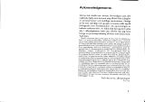
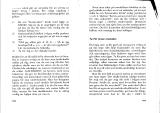
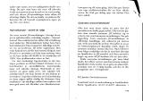
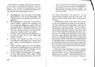

{kind=link}
{kind=link}
{kind=link}
{kind=link}
 Sida 10–11 Som nyfödda
skriker vi segervisst inför livet. Nästan alla föds med utmärkta biologiska
förutsättningar för lycka och framgång.
Sida 10–11 Som nyfödda
skriker vi segervisst inför livet. Nästan alla föds med utmärkta biologiska
förutsättningar för lycka och framgång.
Omvärlden är pålitligt fantasilös. Därför kan Du med några beprövade och förbluffade effektiva psykologiska knep få den nära nog vart Du vill – träna en smula och flyt ovanpå! Detta är en djupt allvarlig bok. Allt Du får lära dig fungerar i praktiken. Tonen är bara tillkämpad lättsam för att skingra dystra tankar på den verklighet som ligger bakom – mer kärnkraft och atombomber, mer makt åt den som redan har övernog.
[…]
Sida 2–3 Sida 4–5 Av Tönis Tönisson har tidigare utkommit på Askild & Kärnekull
Kalkylera på lek
©1978 Tönis Tönison, Askild & Kärnekull Förlag AB.
Omslag: Raphaël Boillon. Illustrationer: 1870-talsgrafik,
verbalanimerad av författaren. Typsnitt: Times
11/13. Papper: 80 g bulkig plain print. Tryck: Gotab AB,
Stockholm 1978 Bindning: Gotab A&K 943
ISBN 91 7008 943 4
Sida 8–9 Denna bok skulle inte kunnat förverkligas utan den osjälviska hjälp som kommit mig till del från mängder av privatpersoner och åtskilliga institutioner. Otaliga är de som välvilligt och sig själv ovetande ställt sig till förfogande som försökskaniner vid utprovningen av bokens maktmetoder. Av skilda skäl kan jag inte tacka alla i offentlighetens kalla ljus. Därför ska jag bara bringa en personlig hälsning till dem som betytt mest. Tack kära
Olof P-e, Gösta B-n, Marcus W-g, Hans M-t K-n, Curt N-n, Skolöverst-n (byrå V-e, byrå L-å), Överbefä-n, Ärkebis-p-en, Riksrevi-sver-t, Vatten-fa-sstyr-n, Sveri-s Riks-g, Kronof-emyndi-n, Invandr-rv-t, AS-A, AB-B, Securi-s, S-S, Sven-kt S-ål AB(v-k 80), advokat Leif S-y, advokat HS, advokat Anders F-r, generaldirektör Lars P-n, generaldirektör Owe R-r, generalsekreterare Kurt W-m, generalmajor Sven P-n, Generalsta-n, generalissimus Josef S-n, direktör Pehr G-r, direktör Kjell R-d, direktör Olle N-n, direktör Marko T-é, Riksskatt-t, Avtalsv-t, L-ndsorgani-en, S-F, centralbyråkrat Hans S-g, professor Milton F-n, professor Ra L-m, professor Stig W-r, professor Albert E-n, professor Karl M-x, rektor T-s, rektor Ö-d, rektor M-i, doktor Ulla W-r, doktor Cara T-n, doktor Kerstin B-n, doktor Mikael M-n, överdoktor Harald K-d, underdoktor Elis S-g, hypnotisös Jane N-n, demonregissör Gustav W-d, mastodontregissör Ingvar S-g, S:t Regissör Ingmar B-n, redaktör Per W-g, redaktör Love K-g, redaktör Berit S-g, analytiker Richard M-y, rabulist Britt A-r, klassifikatör Anne B-ö, organisatör Jan C-n, revolutionär Mac P-s, ex-revolutionär Fidel C-o, dammsugaragent W-G, SÄ-O, Krim-lvår-sst-n, artist Lennart R-s, artist Pablo P-o, verbalartist Tobias B-n, hushållslärare Raoul T-n, medborgare Johan B-n, bokhandlare HW, playgirl Tina T-n, handledare Birgitta B-n, leg handledare Ingrid R-d, medborgarna Eva, Lisa, Liisa, Eva-Lisa, Siv Mari, Ann, Mari-Ann, Ulla, Britt, Ulla-Britt, Elsa, Sven, Erik, Sven-Erik, Eriksson, Erixon, Svensson, Swensson, Shvenssohn, Schvenzon och bokförläggare T-o K-l.
Tack ska ni ha, allesammans!
T-s T-n
Sida 10–11 Som nyfödda
skriker vi segervisst inför livet. Nästan alla föds med utmärkta biologiska
förutsättningar för lycka och framgång.
Sen bär det utför.
Efter något år har föräldrar och samhällsnormer reducerat oss till skuldmedvetna stackare med ångest i blick. Vi har stämplats av socialgrupp, föräldraambition och vuxenförtryck. Självförtroendet är knäckt före fem år fyllda. Skolan pulveriserar återstoden med professionellt handlag. Vid uppnådd myndighetsålder inser de flesta att det stolta födelseskriket var förhastat. Ett grått liv återstår, ett liv som andra har programmerat och som andra drar nytta av. Folk trampar på oss, lirkar oss till saker vi inte vill göra. Utnyttjar oss utan att vi kan värja oss.
Då är det dags att vända trenden innan den slutar med att syster tar snapsen ifrån dig på hemmet.
Skillnaden mellan vad vi vill här i livet och det vi faktiskt uppnår är alltså pinsamt stor.
Vad kan det bero på?
En del menar att vårt svaga psyke är boven i dramat. Får man bara bukt med sina inre konflikter och blir harmonisk, infinner sig lycka och framgång automatiskt. Och visst är det en tanke som ger framgång åt växande skaror – den glada psykoterapiindustrin, nämligen. Andra säger att vår brist på framgång beror på att vi styrs av ett förtryckande och manipulerande system, av ett samhälle som hindrar oss från att få det som rätteligen tillkommer oss. Alltså ska vi jobba i det politiska systemet.
Sida 12–13 Systemet ger lycka åt vissa: skattefria frikort på flyget, feta pensioner i 35-årsåldern, makt att styra och ställa efter eget huvud mot anständig betalning. Lyckan formligen öser sig över det kloka gäng som förstår att rätt plantera in villfarelser i medvetandet hos flertalet och sen dra personlig nytta av det. Men det är svårt att platsa i det gänget. För det är inte många som ryms där.
För mannen på gatan är såna metoder inget annat än illasinnat nonsens. De är bara till för att avleda oss från att ta itu med våra egna mål här och nu. Ingen revolution i världen kan hjälpa en sann ynkrygg. Det finns å andra sidan gott om maktapparater som kan stoppa även den psykiskt starkaste. Felet med de metoderna är att de härleder sig från en syn på lycka och framgång som sprungen ur ett stillastående tillstånd. I det ena fallet gäller det en inre ankdamm av psykisk harmoni, i det andra ett yttre statiskt idealsamhälle. I verkligheten är allting förändring, även lycka. Det är snabba skiftningar som utgör livslyckan.
Ditt personliga liv är helt och hållet en konkret affär mellan den omedelbara omgivningen och dina avsikter. Du rör till det för dig om du drar in allmänna och innehållslösa luddigheter som ”samhällssystemet” eller ”min psykiska styrka” i den affären. Det är bara konkreta åtgärder som du kan vidta här och nu som har intresse för dig – i nuet, inte i några framtida idealtillstånd.
Har samhällssystem och psyke ingen betydelse för hur det går för mig? Visst har de. Vi får i det följande anledning att analysera dessa viktiga faktorer. Men det är inte saker som du kan göra särskilt mycket åt under den här veckan eller nästa. Under den närmsta tiden är de bara en del av den mer eller mindre konstanta ”livsluften” kring dig. De kan inte sättas i någon vettig konstruktiv relation till dina omedelbara mål, t ex att få påökt på jobbet, slippa följa med Påstridige Pelle på bio, få Flitiga Lisa att deklarera åt dig eller få minst fyra på nästa matteskrivning. Det är på sådant det lönar sig att sätta in krafter. På sikt kan det leda till att hela livsperspektivet förändras till det bättre.
När jag råder dig att inte vältra dig i ditt psyke och dess egenheter, menar jag inte att psyket i konkreta situationer inte kan ställa till svårigheter. Men just i konkreta situationer är det lättast att komma över psykiska svårigheter. Det är svårt att göra ett lejon av en räddhågad hare, men det är ganska lätt att få honom att känna sig och handla som ett lejon i en avgränsad situation. Om nervositet och ängslan gör att du inte vågar uppträda offentligt, orsakar att du glömmer allt du lärt dig inför en skrivning eller ett förhör eller hindrar dig från att koncentrera dig på en viktig uppgift, då är hjälpen nära.
Medlet heter medveten och metodisk självsuggestion. Jag har valt att inte kalla det självhypnos, men principen är densamma. Även det fordrar en del träning men lönar sig duktigt. När du har tränat in tekniken har du ytterligare ett bra vapen i makt kampen – makten över dina egna reaktioner.
Sida 14–15 När jag råder dig att inte söva dig med ”politiskt arbete” på systemets villkor menar jag inte att du ska avhålla dig från att förändra samhället. Motsatsen är fallet. På sikt bör samhället förstås anpassas till dig och inte du till samhället. Men det ska ske på dina villkor. Ett tekniskt grepp i processen är att lära sig domptera de nuvarande makthavarnas institutioner: myndigheter, regeringar och bolag. Du får i det följande också en del tips som hur man kan få dom att dansa efter din pipa.
Livet är som ett kloakrör. Vad som kommer ut ur det, beror på vad man stoppar in i det.
/Tom Lehrer
Sida 16–17 Makt kan ses som en växande storhet. Den börjar i en absolut minimipunkt på minussidan. Där är man fullkomligt förslavad. Det är maktbranschens motsvarighet till fysikernas absoluta nollpunkt, −273°C, och skulle i vårt fack kunna kallas den absoluta mes-punkten, −273°M. Ju fler friheter man så småningom tar sig, desto mer närmar man sig underifrån maktens islossningspunkt, 0°M. Denna fixpunkt i maktläran heter manipulationspunkten. Det är först här det börjar bli möjligt att bli sin egen lyckas smed. Beteckningen manipulationspunkt är också träffande som försynt varning. Här är det ännu möjligt för motståndaren att manipulera dig tillbaka till minussidan. Det är ett hoppingivande men obekvämt läge.
Med stigande makttemperatur når du så småningom det tempererade maktklimatet, 18–22°M. Precis som fysikernas rumstemperatur, är den behaglig att vistas i och lätt att upprätthålla med ganska små energiinsatser. Den är på säkert avstånd från manipulationspunkten. Du har råd med smärre misstag utan att behöva hamna i messidans iskyla. Det är en vilopunkt från vilken maktmänniskan planerar sina utflykter till hetare och mer fantasieggande trakter.
Sida 18–19 Den andra fixpunkten i maktskalan når vi vid 100°M, förtryckspunkten. Det är ett kritiskt läge. Här har du tillräckligt med makt för att en del personer i omgivningen kan börja känna sig förtryckta. Men du har ännu på tok för lite av varan för att omgivningen ska acceptera ditt överläge som självklart och t o m moraliskt riktigt, vilket alltid inträffar när makten redan är oinskränkt. Direktörens stora makt ifrågasätts aldrig, men förmannen med sina begränsade befogenheter stöter på patrull. Risken för uppror är alltså stor vid förtryckspunkten. Parallellen med värmelärans kokpunkt är uppenbar. Bubblandet och det stigande trycket kan åstadkomma förödande explosioner. Men lyckas man klara övergången med situationen under full kontroll, blir resultatet ett gasformigt maktmedium, med förmåga att utvidga sig utan gräns. Att framgångsrikt passera förtryckspunkten är varje maktspelares mål och förhoppning. Men med tanke på riskerna vid tillståndsändringen väljer många att stanna strax därunder.
Sida 20–21 Den systematiskt sinnade kan dela in maktens sfärer i fyra (koncentriska) delsfärer:
1. Inre Sfären. Den upptas av vårt psyke, vår karaktär, våra inre förtjänster och brister
2. Närsfären. Här finns de människor vi har dagliga och känslobetonade relationer till: familj, vänner, arbets- och skolkamrater.
3. Mellansfären. Den befolkas av individer vi visserligen har direkta personkontakter med – chefer, lärare etc – men relationerna till dem styrs av formella regler. En viktig del av Mellansfären är Den Kommersiella Kalotten – folk du har personliga affärskontakter med – damen i snabbköpet, bilhandlaren, dammsugaragenten, hyresvärden, läkaren m fl.
4. Yttre Sfären. Den karakteriseras av sitt abstrakt obestämda persongalleri. Du känner inte individerna direkt, möjligen ensidigt genom TV och tidningar. Det är Institutionernas sfär. Här finns Staten, Myndigheterna, Skolväsendet, Facket, Partiet, Företaget, Försvaret och alla andra abstrakta åskmoln i vår värld. Det finns bara ett sätt för oss maktlystna att linda yttre sfären kring vårt finger. Det är att utföra manövern Nedåtriktad Sfärskiftning, dra ner de delar av Yttre Sfären, som vi tänker slå till mot till Mellansfären. Vi måste leta fram och upprätta personliga kontakter med människorna bakom institutiorierna. Staten måste förvandlas till statssekreterare Stoltsén och minister Minander, Myndigheten till överdirektör Överborg, skolväsendet till undervisningsrådet Undergran osv. De ska attackeras i sitt mänsligt skröpliga kött och blod, aldrig i sina blanka Institutionsrustningar.
Sfärerna presenterar rätt olika problem och fordrar tekniska grepp därefter. En allmän regel är att ju längre ut i sfärerna man dristar sig, desto ändamålsenligare måste Inre Sfären möbleras och arrangeras. Det är t ex ganska utsiktslöst att via manipulation av partibossar, ämbetsmän och riksdagsledamöter försöka driva igenom en lag i riksdagen som gynnar ens person, om man på samma gång hyser skuldkänslor för saken. Men med för ändamålet väloljad Inre Sfär går det galant – det görs varje dag.
Jag har en nära god vän, lika lågavlönad och grå som de flesta av oss, som för en tid sedan lyckades med just detta – att stifta och få igenom en egen ny lag som han behövde för att vinna en privat tvist. Det tog honom två år av nära nog heltidsjobb och ett under av maktteknisk skicklighet. Men sedan den 1 januari 1977 står lagen i lagboken. Ingen, vare sig partier, departement eller de riksdagsgubbar som röstade för lagen, har ringaste aning om att de har blivit manipulerade till alltsammans av en enda musbrun medelmedborgare. Som skicklig makttekniker gör han inte dumheten att skrodera med sin bedrift. Vi är högst fem i landet som känner till hela bilden och inte bara lösryckta bitar. Det är makt vi vill ha, inte plats i kändismenageriet. Du får privilegiet att lära dig hur man bär sig åt i avsnittet om Yttre Sfären. Tills vidare får min gode vän tjäna som exempel på att det inte är samma sak att vara känd och att ha makt. Någon enstaka gång går kändisskap och makt att kombinera.
Sida 22–23 I de allra flesta fall utövas makt bäst i det tysta. Makt som hobby är Den Tysta Sporten.
Varje maktsfär består av ett antal Attackkalotter, Zenitzoner, Stötsektorer eller vad vi nu väljer att kalla de områden som väcker vår maktlystnad. Inre Sfären och dess positiva och negativa kalotter har förstås central betydelse.
Vi tvingas att ägna många sidor och tekniska övningar åt den i det följande. Det mesta kommer att växa fram i samband med analysen av de andra sfärernas problem. Vissa speciella tekniska frågor om Inre Sfären ska vi ta upp i slutet av boken. I övrigt kan vi nu direkt gå över till motståndarsfärerna – Närsfären, Mellansfären och Yttre Sfären.
Sida 24–25 Sida 26–27 Problemet i Närsfären är inte så mycket att skaffa sig makt över andra som att undgå att bli maktoffer åt andra. I nära personliga förhållanden är det på sikt omöjligt att köra med effektiva maktmetoder och behålla sina nära relationer. Folk man träffar varje dag börjar föra statistik i tankarna över hur ofta du – och inte de – har fått din vilja fram. Trots ditt föredömliga fotarbete blir du inte beundrad. Du blir spolad. Det innebär inte att fotarbetet ska försummas – under begränsade tidsperioder går det utmärkt att hålla familj och vänkrets under tummen utan att de anar oråd. Såna möjligheter får inte försittas. Men i längden är det utsiktslöst att kombinera varmt besvarade känslor med oinskränkt maktutövning. Därför ska vi här diskutera försvar. Vi ska finna motmedel mot svärmors inblandning och mot Pelles förmåga att få med oss på bio när vi egentligen vill se ishochey. Vi ska lära oss stå emot vår omgivning när den vill få oss till det i själva inte vill.
Av resonemanget följer att det i Närsfären mest gäller att svinga sig till strax ovanför manipulationspunkten (0°M), men inte mycket högre. Redan det tempererade maktklimatet (ca 20°M) kan tidvis ligga för högt, om man säkert vill behålla motspelarnas vänskap och kärlek. Men att metoderna i denna sfär i huvudsak är defensiva, och ska ta oss ur diverse manipulations- och förtryckssituationer, innebär inte att de är harmlösa. Flera av dem kommer vi att bruka med hänsynslös aggressivitet i kampsfärerna. Resonemanget i detta kapitel blir en god grund att stå på av ännu en anledning. Det är nämligen här vi behandlar begreppet skuldkänslor ingående – en basingrediens på ömse sidor i allt maktspel.
Sida 28–29 De enklare sortens när-napoleoner av båda könen, som inte insett Närsfärens inbyggda begränsningar, opererar med förkärlek med olika varianter av Skuldartilleriet. Tunga vapen, förvisso, men också svårhanterliga. De kan lätt explodera i den oskickliges ansikte. Och den som använder Skuldartilleriet i Närsfären – när vapnens rätta plats är Mellansfären och Yttre Sfären – har redan avslöjat sig som oskicklig maktspelare. Det finns alltså inte mycket att frukta, men fenomenet ger oss tillfälle att analysera skuldkänslor och dess uppkomstmekanismer lite närmare, vilket är utmärkt. Ty en maktspelare utan gedigna kunskaper i skuldlärans grunder är som en sjökapten utan kunskaper i navigation.
Det finns en uppsjö av skuldteorier i facklitteraturen. Den som följer här har vissa fördelar framför andra fuskverk på området. Den är ny (det är första gången den presenteras inför större publik), den är praktiskt prövad och den förklarar just det vi önskar förklara och ingenting ovidkommande.
Så ter den sig:
Som små fick vi lära oss gott uppförande genom att vuxenmaffian omväxlande berömde och bannade våra handlingar. Om vi hojtade högt, sa vuxna ibland ”hurra”, ibland ”tyst”. Bajs resulterade ibland i ”duktigt”, ibland i ”usch”. Men vad var det som egentligen var dåligt med bajs när det var dåligt, och bra när det var bra? Tyvärr var vi alldeles för små och oerfarna för att kunna lösa en sådan filosofisk gåta. Inte hade vi tid heller. Hela vår lycka hängde på att rätt avläsa morsans och farsans minspel. Verkligheten bakom fick av praktiska skäl kvitta. Att spå i vuxenansikten var jobbigt nog.
Om det vi gjorde (eller lät bli att göra) verkligen var ont eller gott, gick för oss alltså inte att fastställa sakligt. Stämpeln ”gott uppförande” var inte knutet till de faktiska handlingarna. Den var i stället totalt upphakad på vuxenmaffians ganska godtyckliga gillande (eller ogillande) av handlingarna. Vad vi fick inpräntat för evigt, var att våra handlingars moraliska halt inte bestäms av handlingarnas karaktär i sak. Den bestäms av människornas reaktion i vår omgivning. Och därmed basta!
Sida 30–31 Parallellt med denna besynnerliga etiska utveckling blev vi likväl äldre och visare. Vi fick oberoende av alla tanter och farbröder lära känna på eget skinn att vissa handlingar verkligen ledde till goda, andra till dåliga upplevelser. Våra erfarenheter kunde ofta (men alls icke alltid) stämma överens med det officiella goda uppförandet. Men deras stora styrka var att de var realiteter och inte hörsägen. På så vis har de flesta redan i tonåren utbildat en egen, mycket privat värdeskala. Med dess hjälp kan vi nästan automatiskt känna vad som enligt vår bedömning är bra, rätt och rimligt. Det är vår privata moral. Vilken av de två moralerna är den sanna? Det får vi reda på först i efterhand, när vi veta vad våra handlingar ledde tilll Då är det för sent. Vi är alltså tvungna att se saken ur praktisk synpunkt: är det klokast att grunda sina handlingar på egna erfarenheter, eller på hörsägen? Efterson vi ändå själva måste bära ansvaret för följderna, vilken metod vi än väljer, verkar det bättre att gå efter vad man själv vet och har kontroll över, än efter vad andra människor (som dessutom går helt fria från ansvar för vad du gör) tror sig veta.
Sida 32–33 Vår privata moral fungerar bra till vardags, men vi är snara att skämmas inför andra för att vi använder den. För långt inne i den av barndomsuppfostran krökta delen av ryggmärgen lurar det officiella goda uppförandet. Det goda tycks oss känslomässigt inte gott förrän det godkänts av andras moralstrukturer, förrän det hälsats av andras nådiga miner. Det är förstås en förvirrande definition av gott och ont: vad som till slut ska visa sig rätt avgörs inte av objektiva kriterier, utan av andra människors reaktioner som vi inte kan förutse. Så länge vi inte har gjort upp med den ryggmärgsskadan kommer vi alltså alltid att gå omkring med ständig skuld och ångest för att enligt någons åsikt ha felat, och hoppar till varje gång vi ser en ogillande min.
Moral i praktiken kan inte vara annat än egna värderingar under eget ansvar. Och egna värderingar bygger vi på privata känsloupplevelser. I sista hand är därför all praktisk moral i någon mening privat och subjektiv – det egna samvetets friska röst i motsats till ängslig skuldmedvetenhet inför andras värderingar. Den är absolut ingenting att skämmas för, vad andra människor än kan få för sig att säga.
Det är klart att vårt privata moralsystem inte kan ge garantier mot klavertramp. Det är oroande. Men det officiella systemet ger lika dåliga garantier. Det går inte så bra för den som alltid obrottsligt följer budet ”du skall inte stjäla”, och råkar bli instängd i ett livsmedelslager över julisemestern. Den som av princip aldrig stjäl, ljuger, begår hor eller går mot röd gubbe, är ett allmänfarligt nöt. Oberoende av vad folk i ”ansvarsställning” säger, är vi i sista hand alltid själva ansvariga för vad som sker – både för vära handlingar och vår brist på handlingar. Omvärlden accepterar aldrig ursäkten ”Jag följde bara lagar och förordningar”, när fosterskadorna, atomkraftkatastrofen eller storkriget är ett faktum. Den gör det lika lite i de små frågorna – den missade exportordern för att jag inte mutade ämbetsmännen, det dåliga betyget för att jag var den ende som inte fuskade på skrivningen. Om jag anser att föreskrifterna i ett visst läge är fel, är det min plikt att åsidosätta dem – det lärde sig varenda krigsförbrytare innan han hängdes. Innan de sköts, lärde sig å andra sidan åtskilliga motståndsmän motsatsen. Av det kan vi för vår del lära att det visserligen ofta är oklokt att följa av andra uppställda lagar, förordningar och moralregler, men att det ofta är lika oklokt att göra det till ett herrans spektakel att inte följa dem. Om jag står och väntar på grön gubbe klockan tre på natten på en otrafikerad gata är jag ett fån. Men jag bör verkligen spärras in, om jag inte väntar tills polisbilen har åkt förbi.
Sida 34–35 De flesta saker du tycker är rimliga, men som förbjuds av i ditt tycke larviga regler, kan du utan vidare göra med lite diskretion och sinne för praktiska finesser. I ett lite mera allmänmänskligt perspektiv – mot bakgrund av historiska massmord och andra risker med att vara följsam med makthavartänkandet – är det t o m din plikt. Det en smula kaotiska samhället, där ingen tar reglerna riktigt på allvar, är långt hälsosammare för dess invånare och grannar än den preussiskt effektiva staten. Det vanliga motargumentet brukar vara: ”Men hur kommer det att gå om alla gör så?” Svaret är enkelt: Det kommer alla aldrig att göra, i varje fall inte samtidigt. De flesta kommer alltid att följa gängse regler, delvis av lättja, delvis därför att det beteendet som för tillfället är lämpligast råkar sammanfalla med reglerna. Vad man är må tycka om reglerna är de oftast – statistiskt sett – en god sammanfattning av hur det i de flesta fall är förnuftigt att bete sig. Men det faktum att det i de flesta fall bara ställer till med en massa trubbel att gå i säng med grannens äkta hälft, betyder inte att just ni inte kan få ert sexualliv förnyat av några samlag i skogen och i garaget. Det som är bra och det som är dåligt är något som du rmåste avgör alldeles på egen hand. Det måste du alltid göra – även om du vanligen följer regler av ohejdad vana. För du ställs till svars i livet för dina handlingar. Det är ingen som i efterhand är intresserad av om de kom till av lust att följa regler, eller av lust i sig.
Sida 36–37 Livet är lyckligtvis alltför komplicerat och variationsrikt för att det ska gå att sammanfatta i tio tumregler eller ens i hyllmetrar av lagböcker. Att sen de flestas privata moraliska värderingar sammanfaller med de flesta andras i enklare fall, är bara naturligt. Vi får alla våra livserfarenheter i växelverkan med varandra.
En sammanfattning av den tjusiga tiraden ovan skulle kunna göras i följande grundsats: Det enda i längden hållbara moralsystemet för dig är ditt eget privata system.
Du har följaktligen all rätt i världen att själv vara domare över ditt beteende, dina tankar och dina känslor utan att känna skuld inför någon annan. Det är du och ingen annan som har det fulla ansvaret för följderna.
Ur denna grundsats följer t ex att:
| du har rätt | att inte behöva rättfärdiga eller ursäkta ditt beteende |
| du har rätt | att säga nej |
| du har rätt | att ändra dig |
| du har rätt | att göra fel – och bära ansvaret för felen |
| du har rätt | att vara okunnig |
| du har rätt | att resonera ologiskt |
| du har rätt | att inte förstå |
| du har rätt | att strunta i saker och ting |
| du har rätt | att strunta i vad andra tycker |
| du har rätt | att strunta i andras problem*. |
* Listan på rättigheter härrör (med vissa ändringar) från den amerikanske psykologen Manuel J. Smith.
Sida 38–39 Skuldartilleriet får sin ammunition från att det officiella goda uppförandet helt förnekar dessa självklara rättigheter. Plus det sorgliga faktum att vi ännu hyser det goda uppförandet i ryggmärgen – ett i och för sig skamligt faktum, om vi skulle råka vara äldre än fjorton år. Men, OK, vi har all rätt i världen att inte känna skam för det heller. Pjäserna i Skuldartilleriet är många. Lättast att urskilja är:
| Motiveringsmörsaren |
| Kritikgranaten |
| Logikstycket |
| Kunskapskanonen |
| Ändringsbomben |
De är alla laddade med ett tillbakavisande av rättigheterna ovan.
Motiveringsmörsaren förs in när motståndaren i fullständigt självklara situationer ber dig motivera ditt beteende: ”Varför tappade du soppan på bästa mattan?”, ”Varför vill du inte låna mig 100:–?”, ”Varför är du så fjär?”, ”Varför bjuder du inte till?”, ”Varför älskar du mig inte längre?”. Precis som i andra fältövningar med Skuldartilleriet försöker motståndaren här suga in dig i sin moraliska struktur – ofta uppgjord enkom för tillfället i fråga. Ty den officiella moralen är elastisk. Till innehållet tillåter den vilka tänjningar som helst, bara den till det yttre får behålla stämpeln ”officiell”. Motståndaren litar på – ofta på goda grunder – att ”officiellt” för oss ryggmärgsskadade är ”Allt som är uttalat av en annan person”.
Sida 40–41 Så fort man ger sig in på att svara på absurditeterna är man i motståndarens grepp. Man accepterar hans moralstruktur som krigsskådeplats och sitter i omöjligt underläge. Frågaren är inte intresserad av dina motiv. Vad han vill är mjuka upp dig skuldmässigt – för att sen manipulera leran i egna syften. Alltså gäller det att till varje pris undvika att svara. Vi kommer snart att behandla några bra sätt för det.
Kritikgranaten briserar i kritik. Kritik är förödande. Den innehåller öppna eller underförstådda fördömanden – från andra. Ryggmärgen krullar sig. Vi ställer oss i försvarsposition. Vi vill förklara, gottgöra. Vad som helst är bättre än ogillande – när allt kommer omkring förtjänar vi det inte.
Det är klart att vi inte förtjänar kritik – den enda som har ansvar för vårt
beteende är vi själva. Men hur klarar vi det här: ”Du har inte gjort något
annat än läst serietidningar hela morgonen”, ”Att du alltid lyckas klä dig som
en raggare/ Automatiken slår till och vi hittar tusen ursäkter för saker
som inte behöver ursäktas. För det är ju saker som vi själva vill, visserligen
utan övertänkta motiv, utan större logik, utan stora långtsyftande planer, men
för stunden vill vi det, och tycker att det är OK. Motståndaren är inte dummare
än att han förstår det. Men vad bryr han sig om det, om han ser att du kan fås
att känna skuld för vad som helst som han uttrycker sitt ogillande inför.
Kritikgranaten är, hur konstigt det än kan låta, ofta ett defensivt vapen.
Den anfallande vill egentligen själv någonting också, men har inte möd nog att
säga det rakt ut. Han är också oförmögen att förstå att han är i sin fulla rätt
att vilja det han vill, utan att behöva motivera och utan av att vara logisk.
När han inte råkar ha några bärande skäl eller logiska resonemang i rockärmen,
reagerar han med olust och gnatighet. Anklagelsen ”Du har inte-gjort något
annat än läst serietidningar hela morgonen” är kanske en olustreaktion inför
kritikerns egen oförmåga att finna motiv för att han dagen lång har längtat
efter att åka ut och ro i ekan med dig. Kritiken är alltså i sak mycket
sällan något att bry sig om. Den är inte ens allvarligt menad – sakligt sett.
Under andra dagar han ni båda myst över samma serietidningar, samma kläder har
fått gillande ögonkast, och ditt lugna och metodiska arbete har fått
uppskattning. Kritikgranatens verkan – den är inte föraktlig – beror på att du
tvingas in i en annan persons bedömningsstruktur. Väl där är du som vanligt i
underläge. Ty dina egna, säkert i och för sig rimliga
bedömningar, gäller tyvärr inte på främmande territorium. Varje aktivt försvar
får dig djupare ner i den dypöl du så vältaligt försöker försköna. Bara med den
extra nesan att den aldrig var en dypöl utan en kristallklar havsvik – en
omöjlig sak att förklara för folk som av princip vägrar förstå dina
begrepp. Att käfta emot, ”Jag har visst inte läst serier hela dan, bara en
timme i förmiddags”, är att ta direktflyg till ett okänt moraliskt Australien.
Det ska du noga akta dig för. Hur det tekniskt ska gå till ska vi behandla
strax.
Sida 42–43
Logikstycket, Kunskapskanonen och Ändringsbomben är variationer
på samma tema. De utgår från de löjliga idéerna att man inte kan ha någon egen
mening om någonting om man inte kan presentera den med fullfjädrad logik, att
man måste backa upp sin mening med encyklopediska detaljkunskaper, att ändra
sin mening är skurkaktigt och oanständigt. Nu är det förstås så, att ditt
tyckande knappast blir sämre av att du inte lyckas föra fram det med
aristotelisk precision. De flesta beslut – även de mest livsavgörande – måste
tyvärr fattas utan tillgång till information om alla i detaljer. Och att kunna
ändra sig är ett gott bevis på att man kan dra lärdom av erfarenheter. Det är
då snarare konstigt att folk inte reagerar med fasa på alla politiker som säger
att ”Vårt partis ståndpunkt i
trafikfrågan/ Sida 44–45 Själva
projektilerna i skuldartilleriet är tekniskt lätta att parera. Det är svårare
med den egna inbyggda ryggmärgsskadan. Att hålla den under kontroll och låta
bli att övermannas av skuldreflexer fordrar träning. Lämplig försvarsteknik mot
skuldartilleriet är därför en metod som får projektilerna att fara åt fanders
och samtidigt tränar oss att kontrollera skuldreflexen.
Jag hävdar att den metod vi nu ska behandla har följande förträffliga
egenskaper:
a) den är idiotsäker och ger inga tillfällen till dumma misstag, om man så
skulle rodna invärtes av skuld och uppfostringsskador,
b) den tränar oss effektivt i konsten att se på våra egna handlingar och
egenheter med upphöjt lugn och suverän självgodhet,
c) den vänjer oss vid att se det vi sysslar med från vårt eget
bedömningsperspektiv, som är verkligt, och inte från andras, som är inbillat
(för hur farao vet du vad de andra egentligen
tycker?),
d) den gör oss med tiden känslomässigt ir mot ändras
godtyckliga bedömningar och
Men du måste träna, morgon, middag och kväll.
Nåväl, de tre tekniska knep som besitter dessa utmärkta egenskaper
är Hack I Skivan (HIS), Vakuumförpackning (VF) och Klandra Mig
Mera (KMM). De utgör de viktigaste delarna
i Skuldbekämpningsarsenalen. De kan användas var för sig eller i
kombination. De klarar garanterat ditt tillfälliga maktproblem. Men inte bara
det. Ju mer du brukar dem, desto mer botas du från din gamla skada i
ryggmärgen.
Sida 46–47 Hack I
Skivan är så enkelt som att under hela konfrontationen bara upprepa det du av
dig själv vill och tycker. Enkelt, men förödande som neutronbomben (förintar
manipulationen men bevarar vänskapen – om man inte klantar sig).
Påstridige Pelle hälsar på och vill få dig med på bio. Du vill se ishockey
på TV. Så här kan spelet utvecklas med Hack I Skivan-metoden:
Pelle: Tur att du var hemma. I kväll har vi sista chansen att se ”Gryning
över Katmandu”. Snabba dig på, så hinner vi ta en hamburgare innan.
Du: Jag ska inte gå på bio i kväll, jag ska se
matchen.
Pelle: Kallar du det match! Mot Polen! Nä, nu får du rycka upp dig. I
kväll går vi och ser årets tuffaste film!
Du: Jag förstår, men jag ska inte gå på bio i kväll.
Pelle: Du kommer inte att fatta vad folk säger längre – alla bara snackar
om den här filmen. Ta på dig nu med lite fart, så tar vi Eva med oss också!
Du: Jag förstår, men jag ska inte gå på bio i kväll.
Pelle: Du är ju ologisk! Senast i går sa du att du inte får missa ”Gryning
över Katmandu”! Klä på dig så sticker vi!
Du: Ja, jag förstår hur du menar, men jag ska inte gå på bio i
kväll.
Pelle: Ska du säga ”förstår”! När du sviker dina bästa vänner! Och Eva
tänker du tydligen inte alls på! Är det så du lönar kärlek? Ja, jag förstår,
men jag ska inte gå på bio i kväll.
Du: Ja, jag förstår, men jag ska inte gå på bio i kväll.
Pelle: Kan du ge mig ett enda rimligt skäl? För matchen mot Polen är ett
bra dåligt svepskäl!
Du: Jag förstår hur du menar, men jag ska inte gå på bio i kväll.
Pelle: Du är en förbannad tjurskallig åsna!
Du: Jag förstår hur du menar, men jag ska inte gå på bio i kväll.
Pelle: Du är det envisaste jag varit med om. Är du hemma i
morgon då?
Du: Ja, det är jag.
Pelle: Kan vi gå på bio i morgon då?
Du: Det ska bli riktigt roligt. Jag ska ringa Eva, så gör vi upp om tid.
Fraserna av typen ”Jag förstår”, ”Det förstår jag”, ”Jag förstår hur du
menar”, som inleder själva Hack I Skivan-satsen, är till för att markera att du
från din sida lyssnar artigt och uppmärksamt, men fortfarande håller fast vid
ditt beslut. Motståndarens utfall får därmed något ovidkommande över sig utan
att man behöver säga det eller ge sig in på hans/ – Du älskar mig inte längre!
– Jag förstår hur du menar, men jag ska inte på bio i kväll.
I ditt svar finns ett förtäckt ”Det är alldeles huvudlöst att koppla ihop
hela vår kärlek med ett futtigt biobesök”, men du behöver aldrig säga det. Det
är viktigt, för det underförstådda och outsagda har ofantligt större
manipulationskraft än de mest raffinerade påståenden i klartext. Om du direkt
svarar på motståndarens frågor och kommenterar hans påståenden sakligt, vet han
precis var han har dig. Han vet att du försöker skjuta med bästa ammunitionen.
Du avslöjar bara din skrala beväpning. Men om du inte svarar och inte
kommenterar projektilerna, blir han osäker. Kanske sitter du på en atombomb och
bara skrattar åt hans futtiga granater? Oron minskar
träffsäkerheten. Snart märker han det själv. Paniken ökar, och till slut tror
han blint att du på något mystiskt sätt har fått övertaget. Han ger upp eller
går över till din sida.
Sida 48–49 Med ”Jag
förstår, men”-fraserna undgår du alltså de farligaste misstagen – att svara på
frågor och reagera negativt på förolämpande tillmälen. ”Jag förstår, men”
understryker listigt att du mycket väl har uppfattat att motståndarens frågor
inte alls är några egentliga frågor som fordrar svar, utan bara manipulation
för att få dig i försvarsposition.
HIS (Hack I Skivan) i renodlad form är grov och onyanserad. Men i
kombination med VF (=Vakuumförpackning) och KMM (=Klandra Mig Mera) är den mer
flexibel. Ren HIS innebär dock vissa fördelar för nybörjaren. Receptet är så
enkelt att man inte tappar koncepten och kan fortsätta planenligt, även om man
skulle få några svåra smällar från motståndarens skuldartilleri. Och just det
faktum att man ändå lyckas, ”svåra sår” till trots, gör att man börjar se
skuldprojektilerna med nya ögon. När allt kommer omkring var t o m de
gruvligaste anklagelserna – illojalitet mot vänner, skumma motiv, bristande
logik – tydligen inte sakligt menade utan bara tekniska led i simpel
manipulation. Inte nog med att anklagelsen ”Svikare!” inte nödvändigtvis gör
mig till svikare – anklagaren tycks inte ens själv ta sin anklagelse på allvar
när han släpper taget om den så lätt! Upprepa tekniken ofta.
Snart småler du invärtes när folk påstår att du är tjuvaktig, sadistisk eller
opålitlig.
Effekten är ännu tydligare vid träget bruk av Vakuumförpackning (VF).
Vakuumförpackning är i första hand ett verktyg för att desarmera
Kritikgranater, som t ex ”Du gör inget annat än läser dumma serietidningar.”
Vakuumförpackning går ut på att glatt (utan spår av ironi eller bitter biton)
bekräfta att man har uppfattat motståndarens sakpåståenden, ”Det har du
rätt i, på senare tid har jag faktiskt läst ovanligt mycket serietidningar”,
men inte ge sig in på att försvara sig mot de underförstådda eller uttalade
moraliska fördömandena. På så sätt dras man inte in i motståndarens normsystem,
men behöver för den skull inte förneka det man gör. Rätten att bedöma
sina handlingar reserverar man åt sig själv. För om du vill tillbringa en
söndag med att läsa serier, har du bedömt det som ett för dig bra sätt att
fördriva tiden. Det finns ingen annan som kan göra bedömningen bättre. Om någon
inte tycker om din serieläsning är det hans problem och inte ditt. Hittar han
en lösning som tilltalar både dig och honom, finns det grund för en rimlig
kompromiss. Men det vore onödigt att låta sig manipuleras mot sin vilja.
Sida 50–51
Genom att strikt hålla sig till sakfrågorna och växla bort
bedömningarna på sidospår, kan man också komma fram till vad
motståndaren egentligen vill. Det kan ju knappast vara så enkelt som att
du ska upphöra att läsa serietidningar för att göra motståndaren lycklig.
Beteckningen Vakuumförpackning syftar på att alla anklagelser går förlorade
i det vänliga och nyktra bemötandets absoluta tomrum. Motståndaren känner det
som att skjuta sina projektiler ut i universums totala vakuum – de bara
försvinner in i den motståndslösa oändligheten. Det är också lite av japansk
brottning över VF. Genom att vi bara ger efter, blir det motståndarens egen
kraft som får honom på fall.
Granskar man metoden att upprepa moståndarens anklagelse och hålla med om
den (jag betonar: helt utan sarkasm och upprördhet) finner man att det
finns i princip tre nyktra och neutrala sätt att hålla med om kritik:
1) Du håller med om ett faktapåstående. ”Ja, jag har faktiskt läst mycket
serietidningar på sistone.” ”Du har rätt, jag är väldigt fumlig.”
2) Du håller med om en princip. ”Ja, det kan nog stämma, mycket
serieläsande förstör nog smaken för god litteratur.” ”Det är riktigt, fumliga
personer ska helst inte laga mat.”
3) Du håller med om en sannolikhet. ”Ja, det är faktiskt
möjligt att folk som läser mycket serier med tiden får lägre intelligens.”
Sida 52–53
Vilket sätt du ska välja beror delvis på hur kritiken uttalades. Du måste
kanske omformulera motståndarens uttalande en aning så att det går att passa in
i någon av de neutrala kategorierna ovan. Det är bara bra. Hans kritiska
påstående får då gärna klang av ”naturlag”, vilket han aldrig avsåg, och får
det att framstå i något absurd dager. Men inga sakförändringar och inga
försköningar! Du ska glatt ta på dig allt som läggs dig till last! Att
anklagelserna ofta inte överensstämmer med sanningen är inte ditt problem.
Strunta i det och följ bara instruktionerna. Den som får mest bekymmer av sin
bristande sannfärdighet är så småningom motståndaren. Så här kan det gå till:
Motståndaren: Nu är jag trött på att komma hem efter jobbet och finna att
ingen har köpt hem mjölk/ Du: Du har rätt, jag har verkligen misskött inköpen på senare tid.
Motståndaren: Och dessutom ser det ut som fy fan i hallen!
Du: Jo, hallen borde jag verkligen ha städat mycket bättre.
Motståndaren: Du har då alltid förklaringar för allting!
Sida 54–55
Du: Det är sant, jag har ovanligt lätt för att skylla ifrån
mig.
Motståndaren: Din slappa stil gör att jag snart inte vågar ta hem folk!
Du: En del kommer att bli rätt chockade, det har du rätt i. Det borde jag
tänka på oftare.
Motståndaren: Får du inga skuldkänslor – så som du bär dig åt?
Du: När du nu säger det så måste jag säga att det får jag ofta.
Motståndaren: Det är förbannat ynkligt att gå omkring med skuldkänslor för
allting!
Du: Det har du faktiskt rätt i, att ständigt gå omkring med skuldkänslor
är inte alls bra.
Motståndaren: Varför gör du då ingenting åt det?
Du: Det är sant, jag borde göra något åt att jag får så mycket
skuldkänslor.
Motståndaren: Det enda du någonsin gör är att snacka den här typen av
fullständigt struntprat!
Du: Jo, när jag tänker efter så är jag faktiskt en rätt vissen
konversatör.
Motståndaren: Och nu när jag har bjudit rektorn hem till oss!
Du: Du menar att du är rädd att han får ett dåligt intryck?
Motståndaren: Jag är jättenervös!
Du: Men då kan jag bjuda min chef också. När hon är med smälter alla som
smör.
Motståndaren: Kan du göra det? Det är ju det jag vill! Du är då den
hyggligaste prick jag känner!
En annan variant är de klassiska föräldrarna/ Motparten: Ja, då kommer ni som vanligt på söndag. Se nu bara till att ni
inte missar 9-tåget och kommer i tid.
Du: Nästa söndag kommer vi inte, för vi ska till några av Ullas
arbetskamrater.
Motparten: Hur kan du vara så kallsinnig när du vet att far/ Du: Det är verkligen tråkigt att far/ Motparten: Att inte visa sina strävsamma föräldrar hänsyn är väl högsta
mode i era kretsar. Men vad ska vi göra med steken för fem
personer som vi köpte för er skull?
Sida 56–57 Du: Du har
rätt i att jag borde visa större tacksamhet mot er, och jag vet inte vad ni
ska göra med steken. Men vi kommer inte på söndag.
Motparten: Det var det oförskämdaste jag hört från dig, och ändå har jag
känt dig i 22 år! Men låt oss sluta bråka. Och se nu till att ni inte kommer
för sent en gång till. Far/ Du: Du har rätt i att jag verkligen borde visa större respekt för
dig. Men vi kommer inte på söndag.
Motparten: Allhelgonadagen då?
Du: Allhelgonadagen? Få se, är det inte om tre veckor? Jo, då kommer vi
gärna. Men vi stannar inte till middag. Vi ska på demonstration klockan 2.
Jag hoppas att du har lärt dig något av motståndarnas insatser också, trots
att de förlorade i just dessa exempel. En fin variant är t ex motpartens fjärde
replik i sista dialogen. Vad motparten här kör med är något som vi kommer att
behandla i kapitlet om Mellansfären, Ta-för-givet-metoden. I det här
fallet var den ett sista ynkligt försök före ett säkert nederlag
(så effektiv är faktiskt kombinationen av HIS och VF). Men i bättre valda
sammanhang går den inte bara hem, den tar hem segern. Vi ska inte orda mycket
om saken. Men har det inte en vidunderlig manipulerande effekt – trots att man
tror att man har bestämt sig: att tvingas ta ställning till när man ska
anlända till en plats, när man inte ens vet om man vill bege sig till
platsen i fråga?
En sak till som man kan lära sig av dessa exempel är att det är en
villfarelse att tro att det som i sak sägs i en argumentering har betydelse för
utgången. När man hör munviga debattörer i aktion faller rman alldeles i onödan
för skickliga formuleringar. Att uttrycka sig elegant och kunnigt är förvisso
en fin konst. Det kan leda till snabb karriär i kultur- och författarvärlden.
Men flotta fraser vinner på sin höjd litteraturpristävlingar, inte
maktkonfrontationer. Vad som får motståndaren att handla är inte sakskälen i
sig, utan hans känsloattityder till dem. Som maktspelare vill vi få
motståndaren att reagera som vi önskar, inte framkalla applåder för vår
lärdom och formuleringskonst.
Sida 58–59 En
förolämpnings kvalitet bestäms t ex inte av de intressanta och riktiga
sakpåståenden den innehåller. Den bestäms av den reaktion den
framkallar. Man säger sin förolämpning för att förolämpa, inte för att säga
sanningar. Som bekant är osanna beskyllningar som ”Du är en impotent
hustruplågare”, mycket effektivare än sanna, t ex ”jävla bilist”. Ingenting
retar folk mer än att andra har en ”falsk bild” av dem.
I en maktkonfrontation ska du aldrig säga något bara för att det råkar vara
sant, kunnigt, välfunnet eller vackert uttryckt. Sånt hör hemma i
underhållningsbranschen. I maktsammanhang ska man säga det som gagnar det
manipulativa syftet och intet därutöver. Det är ingen tillfällighet att folk
som har minst makt av alla (förtryckta hemmafruar, parkalkoholister,
tonårsflickor etc) jämt tjatar om hur de i ord plattade till sina antagonister,
”… och då sa han…, men då sa jag …”, trots att de tydligen förlorade
själva spelet med hästlängder. De lider av missuppfattningen att de har gjort
en kompromiss: den andre fick visserligen sin vilja fram, men i gengäld fick de
säga alla bra saker.
Lustigt nog är det som inte sägs i en argumentering ofta avgörande
för utgången, inte replikerna. Det outsagda och oklart formulerade stimulerar
motståndarens sjuka fantasi och skräck: ”Kanske tror han att jag är en impotent
hustruplågare?”, ”Han har kommit på mig”, ”Han läser mina svagheter som i en
öppen bok.” Motpartens gränslösa inre osäkerhet och ångest är din trognaste
bundsförvant. Underhåll den genom att vara fåordig och luddigt korrekt:
”Jag förstår hur du menar”, ”Det var en intressant iakttagelse”,
”Hur då, menar du?”, ”vill du förklara det närmare?”, ”Berätta mera.” Låt honom
själv snacka in sig i ett hörn. Det gör han, bara han får hålla på ostört. Här
har det handlat om försvar, men som vi sen ska se, går samma medel att använda
i anfallssyfte också.
Sida 60–61 Klandra Mig
Mera (KMM) är ett aktivare desarmeringsredskap för Kritikgranater. VF kan också
sättas in mer aktivt genom att man tar på sig en bit mer elände än motparten
har avsett att klandra en för, och på eget bevåg kritiserar egenheter hos sig
själv som motparten inte har kommit på idén att göra. Motståndaren får kalla
fötter: han är ställd mot en Skuldbranschens Stålman, synbarligen osårbar för
all kritik: ”Ja, det är alldeles fantastiskt vad jag kan hålla på och läsa
dumma serietidningar. Litteratur förstår jag mig tydligen inte på ett dugg. Ja,
inte konst, musik och sport heller, för den delen. Det blir inte mycket över,
vid närmare eftertanke. Mannen/ Men det nya inslaget i KMM (Klandra Mig Mera) är att du direkt frågar
efter kritik (och kontrar kritiken med VF som vanligt). Det ger dig
möjlighet att styra spelet dit du vill. Dina aktiva repliker är
i frågande form. Glöm inte att sätta ut frågetecknet, vad som än
händer, och hur motståndaren än formulerar sig! Spelet kan föras på två manér:
a) Klandra Mig Mera, oriktad – KMM(or)
b) Klandra Mig Mera, riktad – KMM(r)
Den oriktade varianten, KMM(or), ”Ja, jag har verkligen bara läst
serietidningar på sistone. Tycker du inte att jag också har försummat huset?
Jag kunde tänka mig det, du har alldeles rätt. Är det speciellt städningen du
tänker på?”, drar ut mer och mer kritik ur motståndaren tills han är utmattad
och tappar initiativet. Med dina frågor styr du spelet till ofarlig mark där
det inte finns mycket att klandra. Motståndaren känner sig som en gnatig
petimäter.
KMM(r) (Klandra Mig Mera, riktad) öppnar elakare möjligheter. Du frågar
fortfarande efter klander och tar glatt på dig kritiken i sak. Men dessutom ber
du motståndaren i vänlig och neutral ton förklara på vilket sätt
den kritiserade handlingen är fel. Nu är det han som har fått den varma
potatisen. Det är hans tur att behöva motivera, förklara och försvara. För
nybörjaren är det en lite svårhanterlig metod, för det är av yttersta
vikt att inte låta insinuant, ironisk eller stött! Du får aldrig
låta som ”Vem är du att säga vad som är rätt?”. Du ska bara vänligt och
intresserat be motståndaren om något som verkar neutrala upplysningar, inte
motsätta dig hans bedömning. Ett exempel:
Sida 62–63
Motståndaren: Ska det här föreställa städat, tycker du?
Du: Nej, du har rätt, det var nog inte så bra. Vad är det speciellt som är
fel?
Motståndaren: Det ser för jävligt ut. Stolarna står t ex kvar runt bordet.
Vi har dom alltid uppradade längs väggen.
Du: Det har du rätt i. Dumt av mig att inte ställa dom längs väggen… Vad
är det för fel med att ha dom runt bordet?
Motståndaren: Vi brukar bara ha det så. Det ser trevligare ut.
Du: Det kan du nog ha rätt i. Är det fler saker som borde vara annorlunda?
Motståndaren: Ja, askkopparna ska ställas ut på borden och inte stå på
skänken allesammans.
Du: Det är sant, jag har dumt nog inte ställt ut dom. Varför är det bra
att ställa ut dom, förresten?
Motståndaren: Det ser mer inbjudande ut. Folk kan bara sätta sig ner var
som helst om dom vill röka.
Sida 64–65 Du: Ja,
det har du alldeles rätt i, det känns mycket mer ombonat. Men hur är det då
med stolarna?
Motståndaren: När jag nu tänker på det borde nog stolarna stå kvar runt
bordet.
Du: Så om jag ställer ut askkopparna, så är städningen bra, eller är det
något mer som borde ändras?
Motståndaren: Jag vet inte…nej, då ser det nog riktigt fint ut.
Du: Tack ska du ha. Det känns alltid bra när man har gjort ett bra jobb.
Det finns inte så många tillfällen i Närsfären där KMM(r) går att spela i
sin renodlade form, men den är utmärkt att ha som en extra krydda i en
konfrontation, uppblandad med HIS och VF. Mellansfären vimlar däremot av
situationer där KMM(r) ensam kan ta hem spelet.
Två sektorer i Närsfären fordrar ytterligare påpekanden och kommentarer. Den
ena är förälder-barn-relationen. Den förälder som spelar effektivt maktspel mot
sina barn vet inte sitt bästa. Barn, även förtryckta barn, har
en benägenhet att växa upp och bli skrämmande stora. De glömmer aldrig och de
förlåter aldrig. Att i sin skröpliga sextioårsålder behöva slåss på liv och död
med i maktspelet vältränade hatiska 35-åringar är inte det öde vi önskar.
Utbredd oskicklighet gör att det blir de flesta föräldrars öde. Men du är
åtminstone varnad. Precis som varje annan relation, kräver också föräldraskap
manipulation. Men tekniken måste ta hänsyn till att barn i alla lägen är
försvarslösa mot vuxna. Ska de ha chans att förstå de vuxnas bästa, måste de
ges utrymme att förverkliga sånt som de anser vara deras eget bästa, att tränas
i ett effektivt självförsvar och få trygghet i sig själva. Det finns en del
metoder för detta, bl a Thomas Gordons Aktivt föräldraskap. I motsatt riktning,
barn mot tyranniska föräldrar, har man all anledning att tillämpa de metoder vi
har diskuterat.
Sida 66–67 Det
andra specialområdet i Närsfären är Sexuella Sektorn. Den är Närsfärens
Kommersiella Kalott. Alla relationer mellan könen är affärsmässiga – romantisk
kärlek, äktenskap, pornografi, platonska förhållanden. Det kan
tänkas att de inte borde vara det. Det är möjligt att man kan hysa
förhoppningar om att de förändras om x antal generationer. Det är kanske också
ett vitalt samhällsintresse att dölja saken. Men i dag står vi icke desto
mindre inför ett faktum som vi måste ta hänsyn till i maktspelet.
Kommersen i Sexuella Sektorn är bara till liten del byggd på penningen som
bytesvaluta. Den stora och allt överskuggande omsättningen sker genom
naturatransaktioner. På senare tid börjar allt fler avslut göras i psykologisk
valuta, men de materiella affärerna dominerar ännu. Rollerna är väl
definierade: alla kvinnor jobbar på säljsidan, männen är alltid köpare. Det
gäller alla: mig, dig, nunnor och munkar, oskulder och moralister, idealister
och frigjorda.
Hur det har blivit så här kan man ha många meningar om. Kanske är det ett
kulturarv från en tid när männen hade oinskränkt förfoganderätt över
produktionsmedlen – jorden, byggnaderna, redskapen. Kvinnans enda sätt att
överleva var att koppla på en man – att sälja sina fördelar (inte alls enbart
de sexuella) i utbyte mot materiell försörjning. Hennes marknadsvärde bestämdes
av foglighet, arbetsamhet och attraktivitet. Motsvarande manliga fördelar var
hur säker och riklig materiell försörjning kvinnan kunde vänta sig av mannen.
Sagoprinsen representerar köparens makt och rikedom, Askungen säljarens
attraktivitet, flit och tillgivenhet.
Kulturarvet har förts vidare genom omärkliga inslag i vår
uppfostran. Det sitter hårt i vårt undermedvetna. De materiella orsakerna till
rollfördelningen mellan könen har bleknat; de psykologiska finns kvar lika
starkt som förr. Mannen ser fortfarande sitt liv som en yttre aktivitet att
forma och styra efter eget huvud, medan kvinnan undermedvetet föreställer sig
livet som något som bara kan upplevas genom en man. För en man ska
kvinnan enligt kulturarvet fungera som extra tillbehör till hans
gör-det-själv-existens, ett följsamt, vårdande och dekorativt tillbehör. Det
är mannen som flyttar till nya platser för sin karriär. Kvinnan ska
självfallet följa med, även om hon skulle råka sitta på samma pinne på
karriärstegen.
Kommersen i Sexuella Sektorn har sin bas i idén om de två ”sanna”
livsrollerna: mannens aktivt utåtriktade roll och kvinnans medföljande och
tillbehörsmässiga. Sexualiteten är lustigt nog inte vad som kommer först i den
här könsbundna affärsverksamheten, den kommer sist. Den sexuella tändningen är
bara plinget i kassaapparaten, en hormonell bekräftelse på att affärerna är i
gång.
Om kvinnan känner på sig att mannen har rätt liv att
erbjuda (att hon får haka på framgång, status etc),
om mannen känner på sig att kvinnan har de önskade egenskaperna som hans
”livstillbehör” (vårdande, följsam och dekorativ, med rätt slags själ och
kropp),
om båda förnimmer det ömsesidiga affärsintresset,
så tänder det på båda håll!
Sida 68–69 Hela
proceduren går blixtsnabbt och på ganska lösa boliner (båda har ännu dåligt med
varuupplysningar och gissar mest) och kontrahenterna är inte ens medvetna om
att de medverkar i någon procedur.
Kvinnor attraheras av slagkraft och framgång hos män – en logisk konsekvens
av leva-genom-en-man-arvet i kvinnans undermedvetna. En åldrig Picasso och
Chaplin jagas trots flint och hängbuk av unga vackra kvinnor. Hollywoods
kvinnor lägger sig för den fete Kissingers fötter. Det är ett misstag att tro
att kvinnorna gör det av krass kalkyl, för kronor och ören. Kvinnor blir
fysiologiskt upphetsade av framgångsrika män, oberoende av deras ålder och
utseende. Makt hos män fungerar för kvinnor lika kroppsligt som en
hormonspruta. Det är bara manligt önsketänkande att potens och fysik lockar
kvinnor. Sexualiteten sitter inte i organet under håret på magen. Den sitter
hos båda könen i organet under håret på huvudet – på samma ställe som
kulturarvets undermedvetna spöken.
Tro inte att det undermedvetna behöver jobba i rena tomrummet, att det
numera inte finns någon egentlig anledning för kvinnor att känna att de måste
sälja kropp och själ för att få ett liv, eller för män att känna att de kan
köpa vilken kvinna de vill, bara de kan ”betala”. Har inte tiderna förändrats?
Jodå. Den 100%-iga manliga bestämmanderätten över allt materiellt liv har
minskat till en 95%-ig. Den backas inte längre upp av lagparagrafer – det har
visat sig överflödigt. Kulturarvet sitter så bra fast i sinnen och seder att
kommersen flyter ändå. Språkbruket har också ändrats. Det är inte längre
riktigt fint att tala om hur det är, bara om hur det borde vara. Då är det
lättare att få bruk för populära termer som ”könsjämlikhet”, ”likaberättigad”
etc.
Sida 70–71 Vem
tjänar på affären, säljaren eller köparen? Det är en fråga om tycke och smak.
Men det är uppenbart att säljaren-kvinnan har svårare att ändra på situationen
om hon skulle vilja. För mannen är det bara att vägra ställa upp på affärerna,
leva ensam och sköta karriären. Sexuallivet klarar sig ändå med lösa kontakter.
Om karriären går bra, finns det gott om kvinnor som tänder och lämnar gratis
varuprov. Men män är uppfostrade till att inte tända på makt och framgång hos
kvinnor, snarare tvärtom. Om en kvinna vägrar vara ett leende våp med böljande
hår, om hon inte gapar av beundran åt alla fåntrattar på festen, får hon ofta
gå hem solo.
Kulturarvet påverkar alla, men inte i samma grad. I skalans ena ände sitter
de konventionella som alltid fungerar efter kulturmönstret, i den andra de
okonventionella som sällan gör det. Det är inte de som sällan ägnar sig åt sex
som är okonventionella. En sipp fröken som aldrig ”släpper till” är oftast ett
superfnask. Det är inte sexhandlingarna som gör fnasket eller kunden. Det är
att se sexhandlingarna som värdeföremål i ett varuutbyte (materiellt eller ej).
Vår sippa fröken vill helt enkelt pressa ut högsta möjliga pris. Hon
tar aldrig sex för vad det är, enbart som handelsvara. Denna
något extrema syn leder till att hon får magert med erfarenheter som skulle
kunna modifiera den. Den bristande erfarenheten ger henne överdrivna
uppfattningar om värdet och marknadspriset. Hon förblir utan köpare livet
igenom – ett kvalificerat fnask med oskulden i behåll.
Grundreglerna är:
1) Att göda motståndarens hopp om att du faller för dennes konventionella
fördelar.
2) Att ge sken av att själv kunna leverera konventionella fördelar
3) Att aldrig tappa det maktanalytiska perspektivet (och bli
konventionellt kär eller något lika fånigt).
Frånsett basregeln (Regel 3) är Regel 1 konstigt nog den viktigaste. Alla är
djupt osäkra på sitt eget värde. Att få bevis för att man är eftertraktad
betyder mer för offret än löften om leverans av yttre fördelar. Det kan låta
som en motsägelse – en handlare som intresserar sig mer för att få beröm för
sin varas kvalitet än för det pris han får. Men genom att bli
övertygad om varans kvalitet får man trygghet, trygghet i att varan alltid ska
kunna ge försörjning. Det känns viktigare än dagspriset på torget.
För den anfallande är detta billigt och bra. Det är i början inte så noga
med den egna PR-en, vilket kan vara ett bekymmersamt kapitel. En mängd metoder
är därför till formen gemensamma, vare sig offret är man eller kvinna.
Innehållet får anpassas efter kön. Här är de viktigaste tvåkönade metoderna:
Ohöljd beundran.
Män måste beundras för sina kommersiella förtjänster som ”riktiga karlar”
(dynamisk utstrålning, konstruktiva idéer, styrka, halsstarrighet,
abstraktionsförmåga, mekaniska talanger), kvinnor måste beundras för sina
affärsfördelar som ”riktiga kvinnor” (värme, förståelse för människor och djur,
känslighet, psykologisk blick, utseende). En riktig man beundrar dessutom
vältaligt och abstrakt. En riktig kvinna beundrar fåordigt men konkret, ofta
bara med skräckblandat förtjusta ögonkast. Om en kvinna ger en man en känsla av
status, speciellt om han ingen status har, är mannen fast.
Sida 74–75 Med män som
har viss vana att bli beundrade (halvkändisar m fl) behövs mer raffinerade
insatser än det vanliga ”O, så intressant, tänk att du kan så mycket.” En metod
som ofta ger utdelning är Nedbrottad Av Övermakten. Du låter
motståndaren briljera. Men ibland kastar du dig tufft över någon detalj där du
är ”starkt oenig”. Under hårt motstånd låter du dig sedan övertygas, för att
efter ett antal repliker till slut le den nyfrälstes förklarade leende. Det är
viktigt att inte ge sig på verkligt svaga punkter i motståndarens resonemang.
Motståndaren får givetvis inte förlora. Metoden ger också den extra fördelen
att man själv lättare håller sig vaken under motståndarens utläggningar:
Du: Så långt var jag med, men nu är jag inte på samma linje. Hur kan en
religion som buddhismen ha med ekonomisk utveckling att göra! Det låter inte
riktigt genomtänkt, hörrudu!
Motståndaren: Blabla blabla, blabla, bla blaha (vad han egentligen säger
rör dig inte i ryggen).
Du: Ånej, det här förklarar inte industrialiseringsprocessen, vad jag kan
se!
Motståndaren: Blaha, bla. Blablabla blaha bla – BLAHA!
Du: Jaså, är det så du menar att det hänger ihop. Det tål ju faktiskt att
tänka på. Men hur stämmer det i så fall med läget i Indonesien, det kan det
väl inte göra?
Motståndaren: BLA, blabba: b, l, a. Blaha!
Du: Hörrudu, det var enormt spännande! Det är först nu jag börjar fatta
hela vidden av din teori. Och den verkar ju helt riktig! En fantastiskt
briljant tanke! Nu måste du berätta allt om hur du kom på den!
Med könsanpassning av innehåll och ordval går metoden bra också mot
bekantskapskretsens firade psykolog och Florence Nightingale:
Du: Du är alltid så underbart lyhörd för människor. Men hur kan du känna
så kallsinnigt för Pelles problem?
Motståndaren: Blaha, blablablabbla bla bla blabla…bla.
Du: Masochistiska drag, javisst. Men det är ju inte hans fel. Det känns så
otäckt krasst!
Du: Jag försöker känna efter… Du menar att ge honom motstånd stärker hans
trygghet i Eva? Det har faktiskt inte fallit mig in förut.
Motståndaren: Blahablahahabla bla bli blu, blaha-bla-BLA!
Du: Javisst! Vad riktigt det känns! Det är så skönt med dig, du har en sån
osviklig känsla för alla omkring dig. Utan dig upplever jag allting så
vilset. Du – vad säger du egentligen om Barbros relation till sina brorsbarn…
jag upplever den så ödslig när jag känner mig in i den. Men du har ju upplevt
den så mycket djupare, berätta!
(Anm: att tänka hör det utåtriktade, manliga livet till. En riktig kvinna
tänker inte, hon ”känner” och ”upplever”. Det bör du också göra här, för
sällskaps skull.)
Man mot kvinnligt offer
Kvinna mot manligt offer
Konventionell manlig och kvinnlig sexuell tändning fungerar olika. Mannen är
uppfostrad till köpare och tänder på varan direkt. För kvinnan/ Sida 78–79
Varning!
Jag bör upprepa att ovanstående gäller konventionellt kulturmönsterlåsta
män och kvinnor. För kvinnor och män som har befriat sig från det traditionella
rollmönstret även i sitt undermedvetna gäller inga könsbundna regler,
vare sig i yrkeslivet eller i sängen!
Men de är som sagt än så länge en pytteliten minoritet. De stör knappast
våra ritningar.
En fråga som ibland uppstår senare under maktstriden i Mellansfären, är om
det kan vara till nytta att lägga sig med chefen. Vilket kön man än har, är
svaret ett obetingat NEJ. I allmänhet försvagar man bara sin maktposition:
a) En manlig chef tror att kvinnan har fastnat för hans utstrålning av
makt och framgång. Chefen har ingen anledning att släppa ifrån sig någon makt
till henne – det var ju den som fångade bytet. Han kommer tvärtom att tro att
han i stället har utökat sin egen makt genom att ha skaffat sig ett lojalt
öra hos personalen.
b) Den kvinnliga chefen kommer i konflikt med sig själv. Att
vara chef fordrar objektivitet, att vara riktig kvinna följsamhet och
foglighet. Eftersom hon trots allt tänker fortsätta att vara chef på jobbet,
vill hon inte falla i mannamånsfällan. Hon blir överdrivet rättvis och ger
dig färre fördelar än förut, för att vara på säkra sidan. Hon kompenserar det
med underbart kvinnlig följsamhet när ni ses privat, men det var ju inte
precis vad du var ute efter.
Det finns undantag. Dessutom är det fritt fram att lägga sig med chefen
enligt lustprincipen, för nöjets skull. Men som universellt verktyg i
maktspelet är sex med chefen inte att rekommendera.
Sida 82–83
Mellansfären är maktmänniskans hemmaarena. Det är
här all aktiv maktkamp förs. Sedda ur grodperspektiv har mellansfärens
drabbningar två kännetecken:
a) närvaron av en eller flera gripbara människor (chefen, försäljaren,
läraren), i synbart överläge.
b) en formell struktur (arbetslivsregler, affärslagar, skolstadga), som
ramar in situationen.
Oftast är det från början betydande skillnad i makttemperatur mellan
parterna. Den part som står närmast den formella strukturens centrum (Makthärd
A) har förstås den högre makttemperaturen. Det kan t ex vara chefen, läraren,
kronofogden eller föreningsordföranden. Han betecknas i det följande Pös-Putte.
Hans motpart med i utgångsläget lägre makttemperatur betecknar vi Swensson.
Swenssons första uppgift blir att söka utjämna skillnaden i
makttemperatur genom någon av följande öppningsmanövrer:
Sida 84–85
S1: fösa bort Pös-Putte från Makthärden genom att få över
snacket till det personliga planet. ”… krockat firmabilen – inte ska
transportchefen använda så hårda ord för den där lilla bucklan. Vi är ju alla
människor. Från det ena till det andra, jag hör att det är kärvt med
skilsmässan! Nu är det så lyckligt att min syster är en av landets styvaste
skilsmässoadvokater. Vet ni vad, ska vi inte ringa henne på stuberten! Inte
ska den där haggan dra längsta strået om jag kan hjälpa till! Vi grabbar
måste ställa upp för varann!”
S2: försöka få Makthärdens glöd att falna genom att spela på plan där
den är ovidkommande. ”Javisst, företagsekonomiskt var det en förlustaffär.
Men vad direktör Dirèn inte här observerat är att saken aldrig rörde affärer
utan personalvård. Jag har bara skött det administrativa och – det måste väl
direktör Dirèn också medge, trots att det så att säga inte är ert bord – med
glans!”
S3: föra över spelet till områden som styrs av en helt annan makthärd,
Makthärd B, som ligger närmare Swensson än Pös-Putte. ”Jag är förvånad över
att verkmästare Verkander ser mitt agerande som ett disciplinbrott. I
verkligheten är det ett solklart fall enligt § XY i MBL-lagen. Den ende som
kan ta ställning till det är jag i egenskap av facklig
förtroendeman. I så fall ska jag tids nog ta upp förhandlingar
direkt med personaldirektören. Jag beklagar att jag inte kan göra något för
er.”
S4: förneka Pös-Puttes samband med Makthärden. ”Vadå, legitimation!
Såna förfalskade lappar får vem som helst för en spottstyver på Sergels Torg.
Och ha mage att påstå att man är kronofogde! Nä, den här förfalskningen tar
jag hand om, så inte grannarna råkar ut för samma skurkaktighet. Seså,
försvinn nu innan jag och min boxande bror möblerar om ditt otäcka
knarkartryne!”
S5: ge sken av att själv vara närmare Makthärden än Pös-Putte. Om
Swensson går civilklädd över en kaserngård och ryar åt den misstänksamme
vakten med militär tordönsstämma, tror vakten att Swensson egentligen har
högre rang och ställer sig ängsligt i givakt.
Pös-Puttes övertag i utgångsläget är makttemperaturskillnaden. Den måste han
till varje pris bevara, helst vidga. Han har flera öppningsdrag till sitt
förfogande:
Sida 86–87 P1:
mota Swensson ännu längre bort från makthärden genom att förneka rättigheter
som Swensson egentligen har. ”Innan vi går närmare in på saken
bör jag tala om att mitt beslut inte kan överklagas. För ert eget bästa råder
jag er alltså att visa samarbetsvilja.”
P2: ställa sig närmare Makthärden genom att ge sken av fler
befogenheter än han egentligen har. ”I den här saken har generaldirektören
gett mig rätt fria händer. Det är jag som avgör frågan. Men jag är inte alls
ointresserad av vad ni har att säga, förutsatt att det går på högst två
minuter.”
P3: utföra manövern Uppåtriktad Sfärskiftning och få över kampen
till Yttre Sfären. ”Nu uttalar jag mig inte som en enskild rektor. Här gäller
det skolväsendets centrala policy. Sånt kan inte någon av oss sätta sig
över.”
P4: överdriva Makthärdens betydelse och få den att stråla starkare. ”Ni
är väl medveten om att Frivilliga Morotsinstitutets omdöme om er
studieförmåga kommer att bli helt avgörande för er framtida karriär?”
Om vi ser sakerna från Swenssons position, vilket är meningen med den här
boken, finner vi att P3, Uppåtriktad Sfärskiftning, är det ruskigaste
öppningsdraget han kan råka ut för. Bakgrunden till det fordrar en plågsamt
grundlig utredning, men den är nödvändig.
Vad det rör sig om är vissa egenheter i den mänskliga tankeapparaten. Om de
utnyttjas skickligt, kan man få miljoner att röra sig efter någons pipa. Det är
inte nödvändigt att bli denne någon om man vill behärska situationen. Men det
är oundgängligt för all framgång i branschen att åtminstone känna igen och
motstå locktonerna.
Ett kugghjul är visserligen en del av maskinen, men det är inte maskinen. En
del ingår i helheten, men den har inte helhetens egenskaper, lika lite som
helheten har delens. Det verkar löjligt självklart, men är svårt att fatta i
praktiken. Försök svara på följande frågor: Vilket land (nation, folk) är bäst
i slalom? Vilka är bäst i ishockey? Vilket folk är arbetsammast i Europa?
Pannan lägger sig i veck och du gör upp listor i stil med ”Sverige,
Tjeckoslovakien och svenskarna” eller ”Schweiz, Sovjet och tyskarna”, allt
efter åsikter i frågan. Debatterna om vilken lista som är den rätta slutar lätt
i handgemäng. Ingen märker att frågorna saknar svar. Sverige har aldrig vunnit
en slalomtävling, Tjeckoslovakien har aldrig besegrat någon i ishockey. Det har
heller aldrig någonsin funnits något arbetsamt folk i någon del av Europa. En i
Sverige bosatt person har däremot vunnit många slalomtävlingar över andra
privatpersoner med skilda adresser. Elva personer med tjeckoslovakiska pass har
ofta visat överlägsen skicklighet i ishockey. Det borde också gå
att uppbåda ett antal namngivna personer i Skandinavien, Centraleuropa och
Syditalien som på goda grunder kan betecknas som arbetsamma.
Idiotisk lek med ord? Tyvärr inte. Snarare en livsfarlig lek under effektiv
ledning. Miljoner har förlorat livet i den. Det gäller att inte hamna i samma
massgrav utan snarast genomskåda fusket.
Sida 88–89 Fusket i
påståenden av typen ”Sverige/ Ingen av personerna på listan över dagens makthavare har mig veterligt
utmärkt sig i alpin utförsåkning. Vad man än skulle kunna få för sig att lägga
in i begreppet ”Sverige”, så tycks ”Sverige” ha skrala möjligheter att vinna
tävlingar.
Det är rätt ofarligt att ta åt sig lite ära av berömdheter som råkar vara
bosatta i närheten. Men det är livsviktigt att förstå hur tankegången är
uppbyggd. När vi solar oss i Stenmarks strålglans är resonemanget – eller
snarare felet i resonemanget – samma som i följande gamla bevis för att månen
egentligen är en ost:
1. Alla ostar är runda.
2. Månen är rund.
3. Alltså är månen en ost.
Sida 90–91 Riktigt
farligt att envisas med den typen av bevisföring är det när ordet ”slalom” byts
mot ordet ”krig”. Ta påståendet ”Du bor i Sverige och måste därför riskera ditt
liv så att Sverige kan vinna kriget.” Här måste det handla om ”Sverige” i
bemärkelsen ”den svenska staten”. Urberget är lika dåligt på krig som på
skidor. Och den svenska staten är som sagt ett litet gäng högst verkliga
personer som går att namnge, borsta på ryggen och skriva brev till. På
gränslinjen mellan små makthavare och stora undersåtar kan det
bli en del praktiska definitionsproblem.
Men hur man än räknar, ligger antalet sannolikt mellan femtio och tiotusen
namngivna personer, folk som står i telefonkatalogen, som ibland har
förstoppning, som äter ärtsoppa, som kanske gillar sex – alltså folk som på
alla sätt liknar dig, utom att det är dom som bestämmer över dig i
bestämda frågor, och att de dessutom kallar såna frågor ”Sveriges
angelägenheter”.
Att dessa angelägenheter påverkar många inom det svenska landområdet beror
inte på att de skulle vara mångas angelägenhet. Det beror på att det lilla
makthavargänget har makt att göra dem till mångas angelägenhet. För hur
kan annars mellanölet bli en angelägenhet för några andra än bryggaren och
öldrickaren?
Du får inte heller förväxla detta sakernas tillstånd med att du
ofta gillar åtgärder som makthavarna vidtar åt oss. Det gör vi. Visst
gillar vi sjukförsäkring, pensioner och att man sätter åt otrevliga typer. Men
det visar på sin höjd att du också skulle vilja ha makt att styra och ställa i
”Sverige” men att du tyvärr inte har någon – ännu.
Sida 92–93 För att
återvända till kriget, så är dess verklighet den, att du inte får order
att (med fara för eget liv) skjuta ihjäl suddiga sovjetiska
princippolitruker eller ogripbara representanter för den amerikanska
imperialismen. Du tvingas snarare att skjuta på (och vara måltavla åt) högst
verkliga människor med egennamn som Igor Ivanovitj och Joe Miller, trevliga
prickar som du inte har det minsta otalt med. Under andra omständigheter skulle
ni tillbringa många mysiga kvällar över några stop folköl. Det är pinsamt
påfallande att du, Igor och Joe saknar förmåga att vinna krig. För den enda
roll ni någonsin tilldelas är att vara stuntmän i någon annans krig. De som
vinner eller förlorar är de som har hittat på kriget i fråga, små utpekbara
makthavargrupper som i brist på bättre beteckningar går under namnet ”svenska
staten”, ”sovjetstaten” etc.
Att dessa personer, som ofta är lika trevliga att pimpla öl med som Igor och
Joe – en chock för många samhällsomstörtare – själva kallar sin välavlönade
hantering för ”Sveriges (USA:s, San Marinos etc) utrikespolitik”, är ett
osedvanligt torftigt skäl att offra ditt liv för den. Den enda sakliga
bevekelsegrunden är att de och du har liknande adresser. Har vi personligen
blivit bättre i slalom för att både Ingemar Stenmark och vi ibland får vykort
med ordet ”Sverige” understruket i adressen? Men idén fungerar. Historien har
visat att följande variant av ostresonemanget har en tendens att gå hem:
1. Du bor i (landområdet) Sverige:
2. Sverige (maktklicken) måste gå i krig.
3. Alltså måste du gå i krig.
Det är inte min avsikt att ta ifrån dig lusten att kriga. Jag kan tänka mig
flera goda skäl för att ge sig ut i krig. Ett är att den samling namngivna
personer som kallar sig ”svenska staten” i annat fall hotar skjuta dig. Det har
i alla tider varit det vanligaste skälet och är värt respekt. Ett annat är att
du personligen tjänar på att Sverige vinner kriget, i pengar, inflytande – vad
vet jag. Men då gör du klokt i att fråga dig varför de som propsar på att du
ska riskera livet, inte själva tänker ställa sig i elden.
Förargligt nog handlar det inte enbart om dålig logik. Människor tycks ha en
inbyggd benägenhet att utan några som helst skäl räkna sig till varjehanda mer
eller mindre overkliga grupper. Begrunda t ex följande psykologiska experiment:
Sida 94–95 En
försöksperson fick några namnlistor som påstods gälla deltagarna i vissa
arbetsgrupper. På en av listorna fanns hans eget namn, men han kände inte de
andra deltagarna. Man talade om för honom att listan som också upptog hans eget
namn var hans arbetsgrupp. Eftersom han inte deltagit i arbetet,
skulle han nu i stället få hjälpa till att fördela penningbelöningar till alla
medverkande (men inte till sig själv) efter ett visst system.
Fördelningssystemet gav honom ganska fria händer, och han uppmanades att
använda sitt eget omdöme så mycket som möjligt. I själva verket var alla
personer utom han själv påhittade, och arbetsgrupperna hade aldrig existerat.
Trots att han aldrig hade träffat eller hört talas om någon av de inblandade,
visade det sig efter försöket att han hade delat ut betydligt högre belopp till
de namn som stod på hans egen lista, alltså till hans förmodade gruppkamrater.
Upprepningar av försöket med andra försökspersoner gav liknande resultat. Att
visa lojalitet mot sina kamrater tycks inte ens fordra kamrater om det kniper.
Den lärdom du bör dra av dessa iakttagelser om människans skröplighet är att
folk (och därmed också du själv) har böjelse att visa välvilja mot grupper som
de själva påstås tillhöra – vare sig grupperna existerar eller de själva ens
noga taget hör dit. I maktspelet får vi här högst gångbara vapen, både att
bruka och värja oss mot.
Så här på nybörjarstadiet gäller det mest att se upp för andras tjuvtricks.
Det allra enklaste tricket – och kanske det effektivaste – är att
gräva Pronomengropar. Groparna är lättgrävda. I meningar som handlar om
saker som motspelarna bör fås välvilligt inställda till ersätter man helt
enkelt de pronomina som annars rätteligen hör hemma i satsen (t ex jag, du, de,
ni, han, hon) med pronomenet ”vi”. ”Jag behöver pengar” blir ”Vi måste trygga
vår finansiella bas”. ”Du får det sämre ställt” blir ”Vi måste alla solidariskt
dra åt svångremmen”. ”Han har bättre betalt än du” blir ”Vi måste alla
acceptera att vi är olika”. ”Min position hotas om ni fortsätter era krav” blir
”Vi måste samarbeta för allas bästa”.
Sjukvårdsbranschen leder f n knappt över politikerskrået i konsten att gräva
Pronomengropar. I båda fallen har man lyckats göra rent hus och rationalisera
bort alla andra pronomina utom ”vi”: ”Nu tar vi snällt tabletterna”, ”Inte ska
vi besvära doktorn med såna småsaker”. Sjukvårdsgänget har visserligen
förvaltat sitt pronomenpund så uselt att deras språk nu mest väcker löje. Men
politikernas ”vi”-bruk är långt skickligare och går hem. ”Vår bilindustri (hur
många Volvo-aktier äger du?) fordrar solidariska samhällsinsatser av oss alla.”
Sida 96–97 En lärorik
övning för den som vill komma någon vart i maktsfärerna är
följande: anteckna under två dagar alla ”vi”-satser som på ett eller annat sätt
riktas till dig av familjemedlemmar, chefer, lärare och politiker. Skriv sedan
om satserna så att grammatiken verkligen stämmer med det du tror
sagesmännen faktiskt ville förmedla.
När chefen t ex säger att ”Vi måste bli färdiga med det här senast på
torsdag”, förmedlar han befallningen ”Jag beordrar alla som inte vill få foten
från den här firman att bli färdiga med jobbet senast torsdag, och skulle någon
få för sig att vägra jobba övertid, har han satt sin sista potatis på det här
stället.” Till och med i så till synes harmlösa sammanhang som när far säger
”Efter lunch tar vi oss en härlig skogspromenad”, används ”vi” enbart i
manipulerande syfte – ”Jag vill ut i skogen och om inte ni andra hänger med
utan knot, blir jag förbannat sur.” Jag ger dig rådet att verkligen
samvetsgrant genomföra övningen – många fjäll ska falla från dina ögon. Du blir
aldrig mer ditt gamla troskyldiga jag.
Ett viktigt resultat av övningen är att du på köpet också tränar dig i att
upptäcka dina motståndare i maktspelet. ”Vi”-satserna sveper in en
manipulationssituation i ett diffust, opersonligt dis. Man förstår vad som
krävs av en, men inte vilka som kräver. Det känns nästan som vore det
övernaturliga krafter bakom kraven. Ord som företaget, kommunen, skolan,
samhället och föreningen förstärker den kusliga känslan av att
vara föremål för anonyma makters dunkla spel. Nu är du förstås klar över att
företaget och samhället lika lite finns till i sinnevärlden som Sverige.
Företaget består på varje beslutsnivå av människor av kött och blod som är lika
lättmanipulerade och ängsliga som du.
För att kunna göra något åt din situation måste du lära dig vaska fram de
livs levande människorna i form av verkmästare Anderborg och försäljningschef
Bolmèr ur företagets abstrakta floskelmoln. När du för övnings skull ska
formulera om dina ”vi”-satser, måste du förstås först fråga dig ”Vem vill det
här?”. Det leder till frågan ”Vem är det som tjänar på eller drar nytta av det
här?”. Svaret på den sista frågan identifierar din motståndare. Och har du väl
funnit de personer som står i din väg, finns det alltid något knep som kan baxa
bort dem, men mot dimmiga abstraktioner står du dig slätt. ”Vem tjänar på det
här?” består ofta av flera namn som kan hänga samman på ett rätt komplicerat
sätt. Det tvingar dig att forska en smula bakom kulisserna för att förstå
sammanhangen – åter en oundgänglig färdighet för den maktlystne.
Den ytligt sett banala grammatikövningen ger dig alltså förstklassig träning
i tre avgörande färdigheter som maktens utövning fordrar:
a) att genomskåda språkliga illusionstrick och se hur nästan alla
språkliga satser som innehåller allmänbegrepp (samhället,
företaget etc) och pronomenet ”vi” döljer någons despotiska
ränker.
Sida 98–99 b) att
träna sig i att automatiskt leta efter konkreta människor med namn och nuna
bakom abstraktioner och allmänbegrepp – att finna den verklige motståndaren
(eller motståndarna) av kött och blod.
c) att hålla sig väl informerad om vad som gagnar motståndaren och
vilka bevekelsegrunder som får honom att agera, att finna ut hur han tjänar
på det (att han försöker tjäna på det behöver man aldrig tvivla på –
sanna välgörare behöver inte använda manipulativt språk).
Nazistledaren Hermann Göring lär en gång ha sagt: ”Var gång jag hör ordet
kultur, griper jag efter min revolver.” Tjocke Hermann hade säkert skäl för sin
ilska. Tyskarnas nedärvda beundran för kultur och förfining var utan tvekan
något som gick nazisterna med deras grovhuggna och primitiva utstrålning emot.
Hänvisningar till kultur kunde i Tyskland bli en effektiv
antinazistisk manipulation, t o m inför de råa typer som
nazisterna vände sig till. Kulturen kunde kanske inte påverka folk så mycket.
Men det kunde åkallandet av den, nämnandet av blotta ordet kultur.
I vårt dagliga liv bombarderas vi av lassvis med ord som den insiktsfulle
bör dra revolver inför. De saknar all täckning. Men de får oss på knä genom sin
klang. ”Vi” är ett typiskt revolverord. En annan typ av revolverord får sin
verkan genom uppfostringsskador som tillfogats tidigt.
Syna buketten nedan:
Samarbete
Känns det inte som en järnhand som griper tag i hjärtat och får dig att
spritta till av sentimental lystringslusta? Det är för att du så länge du kan
minnas har manats till alla dessa saker av far, mor, fröken, Robin Hood och
statsministern. De är själva kärnan i din moraluppfattning och etik. Så mycket
angelägnare att kvickt träna upp revolvertekniken och värja sig. ”Var gång jag
hör ordet samarbete (enighet, solidaritet etc) drar jag min revolver!” bör du
mässa för dig själv lika ofta som en katolsk syndare mumlar böner. Det är din
enda räddning undan en vederstygglig begreppsförväxling.
Sida 100–101 Hur
kan det vara fel på samarbete och solidaritet? Det är det inte. Vill du
samarbeta, samarbetar du förstås. Vill du visa solidaritet så gör du det, och
finner du att du är enig med en del personer, hindrar det inte dina fortsatta
framgångar alls. Men – hör du någon uppmana dig till samarbete,
enighet etc, är det dags för skjutjärnet. För den sortens uppmaningar är
undantagslöst till för att utnyttja och manövrera lättrörda klantskallar. Dessa
ord är egentligen beskrivningar i efterhand av vissa sakförhållanden.
Sakförhållandena har det gemensamt, att de har uppstått spontant, av människors
fria vilja. Om jag är solidarisk med en grupp människor, så tar jag mig an
deras sak av egen fri vilja. Kanske visar jag min solidaritet genom aktivt stöd
och penninggåvor. Men om det är utomstående individer som med olika medel
förmår mig till precis samma handlingar och utlägg, då heter det inte längre på
svenska att jag är solidarisk. Det normala språkliga uttrycket för det som sker
är att jag är utpressad.
Begreppet samarbete betyder att några personer av egen vilja och insikt
förstår att de tillsammans kan lösa ett problem enklare än om de arbetade var
för sig. Om du gräver hålen och jag gör störarna så blir staketet färdigt
fortare. Visst kan det hända att vi inte kommer på idén, och att någon annan
påpekar saken. Då manar han oss inte till samarbete. Han ger tekniska
upplysningar. Samarbetet är fortfarande en följd av vår egen
fria vilja. Men om någon uppmanar oss att samarbeta om något som vi inte
vill göra (och kanske inte ens tycker behöver göras) – vad är det då för arbete
samarbetet gäller? En bra fråga, med bara ett svar: uppmanarens arbete. Och det
rätta ordet för verksamheten är inte längre samarbete, utan av andra påtvingat
arbete, tvångsarbete.
Sida 102–103 På samma
sätt är det med resten av revolverorden. Enighet råder när flera personer har
sammanfallande egna åsikter. Om man lyckas lirka en oenig grupp till
enighet, så betyder det att några i gruppen måste bita i det sura äpplet
och påstå att de nu har samma åsikt som majoriteten. Men då är den
språkliga termen inte längre enighet, utan minoritetens kapitulation. Om
du tänker efter, måste du medge att du bara hört revolverorden uttalas när man
försökt förmå dig till något. Ta nästa gång ett stadigare grepp i revolvern och
fråga dig: Vem eller vilka kommer att dra nytta av den här enigheten och
solidariteten eller det här samarbetet? Svaret på frågan kommer, precis som i
fallet med ”vi”-sägarna, att peka ut dina motståndare eller konkurrenter i
maktbranschen. Även här måste du antagligen luska fram en del otvättad byk ur
de bakre garderoberna innan du förstår hur det hänger ihop. Det är nyttig och
nödvändig träning. Ofta är sammanhangen generande enkla. Du behöver inte tänka
länge för att komma på avsikter och bovar.
Vi har alla anledning att önska mer av samarbete, i
solidaritet, enighet och vackert väder här i världen. Jag önskar lika fromt som
du. Men känslosuget från starka önskningar är förledande. Vi drabbas av magiska
föreställningar om att verkligheten på något vis förändras, bara någon åkallar
språksymboler för dessa vackra saker. Det är tyvärr vidskepelse att tro att de
kan besvärjas fram. Och det är ren och skär begreppsförväxling att tro att de
kan manas fram.
Sida 104–105 När vi har
neutraliserat Revolverorden och övriga farliga abstraktioner, och inte behöver
stå försvarslösa inför försök till Uppåtriktad Sfärskiftning, är det dags att
gå till attack. Vår allmänna fältutrustning bör bl a omfatta dessa ting:
I) Märkta kort
II) Omvägskarta
III) Målkikare
IV) Läkarrock
Att ge sig in i spel man inte har arrangerat i förväg för att säkra vinsten
är inte bara poänglöst, det är ingen sport. Det finns folk som påstår sig spela
hasard för nöjets skull. De flesta av dem ljuger av taktiska skäl och är värda
all aktning. Övriga är antingen perversa, obegåvade eller bådadera. Det finns
bara ett rimligt skäl att ge sig in i spel med höga insatser: att vara så gott
som säker på att vinna. Åtgärderna för att komma därhän är spelets egentliga
tjusning.
Att i maktspelet märka sina kort är att veta mer än motståndaren om
motståndaren själv, om situationen, om avlägsna faktorer som kan påverka
utgången, om praktiskt taget allt.
Låt oss säga att du för karriärens skull behöver få sektionschefen på firman
att peta Perzzon från Samordningsgruppen och pilla in dig i stället.
Samordningsgruppen är på väg att kläcka en genialitet. Den kan ge eko ända till
direktionsnivå. Listen härrör visserligen från den tillbakadragne Timander. Men
han är för blyg för att göra väsen av sig. De som råkar sitta i
Samordningsgruppen i det rätta ögonblicket får äran. Det skulle smaka fågel när
direktionen ska utse efterträdare till gamle avdelningschefen Svenofsky.
Sida 106–107 Det
lönar sig inte att på vinst och förlust gå in till sektionschef Ampert
(A-sektionen) och lita på charmen. Sektionschefen kan allt om
intriger. Han får bara större manöverutrymme om han underblåser
maktkampen mellan Perzzon och dig. Ampert ger blanka fan i vem som till slut
blir avdelningschef. Vad han vill är att den nye spelar hans spel. Ampert kan
t o m vara så djävulsk att han själv föreslår finten med Samordningsgruppen.
Men då kan du ge dig på att det kommer att kosta. Du får utföra en del riktigt
smutsiga manövrer åt honom, manövrer som du efteråt inte vågar andas om. Han
får hållhakar på dig. Avdelningschef eller inte, du kan bli livegen.
Du vet helt enkelt för lite. Din attack kan sluta precis hur
som helst. Det enda du hittills vet är att sektionschefen utser sektionens
representant i Samordningsgruppen och att det inte är så ovanligt att
representanter byts ut. Många fler kort måste märkas. Du har i alla fall redan
visat gott gry genom att luska fram vad Samordningsgruppen håller på att koka
ihop.
Du inser att även om klöver (A-sektionen) är trumf, och honnörskorten
smäller högst, så har falskspelaren lika stor nytta av att märka andra färger
och låga valörer. Det är t o m bättre. Motspelarna vaktar ängsligt på fuffens i
klöver och ser inte upp med de andra färgerna.
Sida 108–109 Tiden är
inne att göra bruk av kontaktnätet. Det är varsamt och målmedvetet uppbyggt sen
andra dagen du började på firman. Du är t ex med i två prestigesportgäng:
squash varje torsdag eftermiddag, badminton tisdagar. Självklart är det inte
folk som jobbar i din avbalkning i kontorslandskapet. Man ska aldrig ha sociala
relationer med de närmaste arbetskamraterna. Vad de gör och tänker får man reda
på ändå. Privatumgänge är överflödigt och oekonomiskt. Det är taktiskt dumt. Om
du är vänligt korrekt men opersonlig, sprider du nyttig mystik omkring dig i
avbalkningen. Besökare lägger märke till den. Kollegerna märker
att besökarna märker den. Utan varje ansträngning har du fått folk att se dig
som avbalkningens inofficiella grå eminens. Men umgås du socialt, kan du råka
spy i den flintskallige kollegans badrum eller hångla med dataexperten.
”Trevliga hyvens prickar” har ingen respekt med sig. Vänligheter som inte kan
fås att löna sig, lönar sig inte.
Det är inte heller tillrådligt att lägga an på sin närmaste överordnade, i
ditt fall avdelningschefen Svenofsky. Han skulle inte bli det minsta berörd om
du klistrade dig på i lunchrummet och vred på charmkranen. Han skulle bara
känna sig lugnad – ”en snäll inställsam skit, den där nye”. Överordnade får
respekt för en bara om man umgås privat med deras överordnade. Det
är två våningar upp-regeln. Och det är förstås ett av skälen till att du
ofta ses i lunchrummet under hjärtligt samspråk med Borrkrona och Cederin,
cheferna för B- och C-sektionerna. Det var Borrkrona som blev inkörsporten till
sektionschefsgänget. Han visade sig ha sin segelbåt på samma båtklubb där du
förvarar din eka. Men vad betyder båttyp, sjömän emellan. I synnerhet när du
gett sken av att nyss ha sålt din skärgårdskryssare och vill ha en verkligt
erfaren havsseglares råd, när du nu ska byta upp dig. Ampert är sällan med vid
bordet, han avskyr sjön. Men ända sen Svenofsky första gången
la märke till dig och ditt lunchsällskap, har han behandlat dig som en jämlike.
Sida 110–111 Umgänge
två våningar upp fungerar tryggt. Höjdarna har ingen tanke på att du skulle
vara ute efter något. Dom tror att avståndet är alldeles för stort för det,
uppblåsta som de är. Det lönar sig att förstärka den känslan: nästan aldrig
snacka jobb själv och aldrig någonsin kommentera höjdarnas jobbsnack (som de
förstås inte kan låta bli att ha – en guldgruva för den lyhörde), bara hålla
sig till privatvänskapens grund, båt, politik, kultur eller vad det kan vara.
När Borrkrona och Cederin utbyter firmaangelägenheter sinsemellan tystnar du
artigt, tittar ner i tallriken och petar i maten under sken av att tålmodigt
uppoffra dig för de betydelsefulla vännerna.
Om lunchen är avsatt för att frottera sig med två våningar upp-gänget måste
kaffepauserna ägnas åt kort i låga valörer av alla färger. Närkollegerna i
avbalkningen är uteslutna av samma skäl som ovan. Någon gång ibland, kanske,
delar du med dig av din grace, och det är uppskattat. Men i vanliga fall
dricker du förmiddagskaffet på skrivcentralen, stället där arméer av
lågavlönade skriver ut firmans korrespondens och andra alster. Då och då är du
t o m utrustad med tårta.
Men tårta får inte medföras av slentrian. Det ger nyrikt och
överlägset intryck. Du ska finna anledningar: födelsedagar, namnsdagar (lätta
att få fram ur personalkontorets register). På skrivcentralen för du dig som en
i familjen. Du kan nu få kopior av allt som uttrycks i skrift på företaget,
brev, konfidentiella rapporter, budgetutkast. Omkring var tredje gång brukar
det vara nyttigt att dyka upp på skrivcentralens firmafester. Uppvakta alla.
Undvik favoriter, inge alla känslan av favorit.
Sida 112–113 Under
eftermiddagskaffet är det dags att hälsa på kompisarna i vaktmästeriet, dunka
lite rygg och flabba åt en och annan fräckis. Här har du nyckelfigurerna som
vet det mesta som händer, vad som beställs, vad som sänds ut, vem som har tagit
till flaskan, hur mycket Amperts nya matta kostade. Det är också personer med
spjuverglimten i ögat, gärna med på ett eller annat upptåg som du kan finna
nyttigt att föreslå. Och de är personer som regelbundet behandlas högdraget av
alla andra än av dig. De är numera din trogna hemliga gerilla. Kostnad: en
daglig kopp automatkaffe och två öl i månaden efter jobbet.
Squash- och badmintonfolket är tröttsamt ytliga. Det får du stå ut med. På
sina avdelningar och sektioner är de populära solbrända typer med rikt
kärleksliv. De läcker skandaler i ett mellan serv och smash. Egna amorösa
äventyr? Ånej, inte här. Sportskönheterna av båda könen är bara betagna av sin
egen solbränna. Sexuellt lutar de närmast åt narcissism. Det
finns inget att hämta utöver det du redan har.
För att amorösa eskapader ska ge utdelning i maktspelet och inte bara bli en
black om foten, måste kontrahenten befinna sig långt från ditt dagliga värv.
Först då vågar han/ Bra sexobjekt är lågstatusmedarbetare till de verkliga toppkanonerna, t ex
assistenter och sekreterare till företagets styrelseordförande eller VD. Andra
som du med hjälp av kärlek kan få att vidga horisonten är välinformerade
personer i konkurrentföretag och kundföretag, eller i statliga och kommunala
myndigheter som kontrollerar branschens verksamhet. Den som jobbar i en skola
bör skaffa sexkontakter i kommunens skolstyrelse, den sjukhusanställde på
landstingskansliet och den som arbetar med livsmedel (restaurang, varuhus) i
hälsovårdsnämnden. Dina kontakter riskerar inte så lätt att bli kända. I de
fall de blir det, ses de bara som slumpens skördar.
Sida 114–115
Kontaktnätet på firman är inte bara till för att samla
pusselbitar. Det har också en imageförstärkande effekt i den egna avdelningen.
Här är den mystiske mannen/ Att rätt mjölka kontaktnätet på upplysningar är en konst. Det duger inte att
vara frågvis rakt ut och avslöja sig. Under passiva perioder, när man inte har
direkta aktioner i gång, bör man bara kallprata, lyssna uppmärksamt och
anteckna fakta för framtida bruk. Det är mycket noga att komma ihåg namn och
enkla personfakta. Ingenting smickrar en person så som oväntad uppmärksamhet på
hans namn och person. En motpart som du tidigare bara träffat en halv minut,
faller helt i farstun när han nästa gång ni träffas möts av ett ”Va roligt att
se dig igen, Karl-Anton Norgenbaum! Nu måste du berätta hur det gick med det
där torrdasset på Ekerö som du skulle måla gult! Va sa grannarna till slut,
Karl-Anton?” När du pratar med folk bör du i minst varannan mening peta in
deras namn vare sig det behövs eller ej. Förutom att motpartens
intimitetskänsla gentemot dig tar ett skutt uppåt varje gång namnet nämns, är
det också ett bra sätt att träna att komma ihåg det för framtiden. När det
gäller hoprafsade grupper av människor, t ex på kurser,
konferenser och cocktailpartyn, kan den som snabbast lär sig och gör flitigt
bruk av de andras namn, svinga sig till ledarställning direkt. Alla känner sig
ännu vilsna och upplever den som kan deras namn som sin enda vän. Han blir
automatiskt gruppens centrum. Den positionen är sedan lätt att behålla.
Man kan tycka att sånt fordrar medfött hästminne. Så illa är det inte. Det
går förstås inte att lära sig namn eller någonting annat heller om man inte är
motiverad. Nyckeln till din motivation att lära namn är din maktlystnad. Håll
den brinnande! Du ska se alla människor bara som byggstenar i ditt maktbygge.
Då är de inte en samling ointressanta hösäckar som du inte kan hålla isär. Var
och en innehåller en precis möjlighet och kan stoppas in på exakt rätt plats i
maktmönstret – om du kvickt tar reda på hur. För dig är konferensgruppen långt
ifrån en trist grå massa. Den består av idel särskiljbara intressanta
individer, högintressanta för senare syften: ”Jag måste kartlägga med en gång.
Vad heter den långe i läderjacka; verkar vek tycker jag. Och bruden med
krullhår… är det inte lite ledartyp över henne, eller har jag fel? Den mörke
vid fönstret verkar spela pajas. Osäker på sig själv, lättfångad typ… jag
börjar med honom, tar krulltjejen sen och därefter läderjackan. Pajasen tror
jag att jag tills vidare bussar på krulltjejen, så är hon neutraliserad för ett
litet tag. Hon verkar farligast än så länge. Då får jag tid att
täcka de andra i fred… Bra, direkt på, för nu brinner det i knutarna!”
Sida 116–117 När du
känslomässigt ser dig som schackmästaren och alla andra som dina privata
pjäser, är det inte alls svårt att hålla isär springare, löpare, torn och
drottning och komma ihåg vad de heter. Personerna är viktiga för spelet, namnen
är viktiga. Du är aktiv i huvudet, gör i tankarna nya uppställningar i takt med
att nya fakta strömmar in. Hjärnan arbetar för högtryck och namnen fastnar utan
medveten ansträngning: ”Eivor Hållquist är farlig, precis som jag trodde…
fackklubbsordförande t o m och vet vad hon vill. Och sabla dumt av mig att
missbedöma Carlo Novosin, bara för att han har humor! Carlo är en räv! Måste
snabbt skilja på Eivor och Carlo… Tur att den där urblåste Torbjörn Hemander
dryper så mycket sex under skinnjackan… Eivor verkar inte direkt osårbar för
sånt. Nu lufsar jag iväg till henne med korkbollen Torbjörn i hampan. Carlos
flygintresse får jag ta som förevändning för att vi båda sen ska ta kontakt med
den flintskallige vid dörren, han med segelflygmärket på kavajen…
Sida 118–119 Skarp
hjärna har han, lille flintisen Viktor Fixhult. Men oj, oj, oj, blir man så
löjligt egocentrisk av segelflygning? Alldeles ofarlig är han, stackarn. Fast
begåvningen måste jag komma ihåg… Viktor kan vara bra att ha på rätt plats
längre fram. Nu håller han i alla fall räven Carlo Novosin sysselsatt. Puh,
nära ögat, den där blundern med Eivor Hållquist och Carlo! Men
nu är den reparerad. Jag bör hinna med gruppen vid kakelugnen. Den rödhåriga
ser ut som hon kände igen Eivor… bäst att ta henne först och sen den
snobbklädde!”
Det värsta som kan hända i såna sammanhang är att bli omedvetet
egocentrisk. Man tappar kontrollen över situationen, kan inte minnas ett namn,
och allt som sker på maktplanet går en förbi. Förvirringen har sin grund i att
man plötsligt får för sig att andra bryr sig om vad man är och
utstrålar, bara för att man råkar vara och utstråla. Som praktisk idé är
den förstås befängd. Ingen bryr sig om dig ett vitten för vad du är.
Alla ger fullständigt farao i dig som sådan, om du är glad eller ledsen,
dum eller klok, nöjd eller missnöjd – eller ens om du existerar. Det enda andra
bryr sig om är hur de kan göra bruk av dig för sitt eget välbefinnande.
Om du bolstrar deras självkänsla, lättar upp deras tungsinne, kan hjälpa dem ur
en tillfällig knipa, ger dem chans att komma i överläge, om de kanske kan tjäna
på dig – ja då är du förstås användbar och intressant, åtminstone för stunden.
Eftersom det precis är vad du själv i vardagslag brukar andra till, är det
oftast inte ett problem för någon. Det är ett ganska jämlikt
affärsutbyte, om du skärper dig, ett slags import export i hygglig balans. Men
den gamla boven, den officiella moralen, ser det inte så. Här ska det
minsann älskas till höger och vänster bara för vad folk är, inte för vad man
får ut av dem. Med en viktig grammatisk förändring kan man få rim och reson i
moralen: älska folk för att de är det de råkar vara, inte för vad
de råkar vara. Det kan t ex handla om att vara barn, gammal, sjuk, handikappad.
Principen är då fortfarande sunda affärer: genom goda handlingar mot svaga och
olyckliga presterar jag en försäkringspremie. Om jag skulle råka i olycka blir
jag förhoppningsvis lika hyggligt bemött. Det är väl vad som ligger i begreppet
medlidande: ett statistiskt sinne för att även goda affärer ibland har nedgång,
insikten att jag har viss chans att råka lika förbannat illa ut som de som
redan har råkat illa ut, och bör förbereda mig på eventualiteten.
Sida 120–121
Läsaren har förmodligen lagt märke till att allt som hittills avhandlats i
denna bok är i god överensstämmelse med bibeln och andra äldre framställningar
i vårt ämne. ”Vända andra kinden till” kan t ex ses som en primitiv men
utvecklingsbar form av Vakuumförpackning (sid 49). Principen
”Älska din nästa såsom dig själv” är en tillspetsad formulering av
försäkringsresonemanget ovan. Den intresserade kan som extraövning leta efter
fler paralleller. Men att hävda att man bör älska varje tråkmåns och
snuskhummer just för att han är tråkmåns och snuskhummer,
är en högst självsvåldig tolkning av alla skrifter, inklusive
den du håller i handen. Resonemanget gäller lika mycket människors positiva
drag. Ingen älskar ett geni, en miljonär eller ett helgon för att han är
dessa ting. Vi älskar dem för att vi själva kan få nytta av de begåvade
tankarna, miljonerna och snällheten. Det är alltså alldeles överflödigt att
självupptaget framhålla alla sina förtjänster och samtidigt oroa sig för att
andra kanske inte uppfattar dem. Även om de andra skulle uppfatta din
förträfflighet till fullo, ger de blanka tusan i den. De saknar helt enkelt
varje uns av intresse för din person.
Däremot är de mycket intresserade av vad du faktiskt kan göra för
dem. Rätt bondiga idéer, småsnåla penningsummor och halvhyggliga handlingar
tänder dem, om de övertygas att det är vad de får.
Den officiella moralens snedtolkning av skrifterna ligger troligen bakom
många olyckliga fall av omedveten egocentricitet. De flesta drabbas av den bara
ibland – rampfeber, prestationsångest och andra tillfälliga bekymmer. En del
har åkomman mer permanent – den ständige kverulanten som tror att han ska få
sympati bara för att han drabbats av så många olyckor, den lärde som tror att
alla kommer att gilla honom bara de får klart för sig hur lärd han är, den
vackre som tror att folk gillar honom för hans skönhet, den patologiskt blyge,
som tror att folk inte gillar honom om de får veta hur
han egentligen är.
Sida 122–123
Medveten egocentricitet är däremot ett nödvändigt och positivt
personlighetsdrag hos maktmänniskan. Om du inte besitter den redan, måste du
tillägna dig den. Det är Den Gudomliga Egocentriciteten: Du är
Gud och världens centrum, även om du skulle vara dålig på att spela piano och
inte förstår relativitetsteorin. Din centrala ställning i
universum behöver inte bevisas. Den är ett faktum. Detta faktum ruckas inte av
att små gulliga människor bestrider det, försöker motbevisa det eller inte
känner till det. Framför allt – det behöver inte föras till torgs eller
basuneras ut. Guds existens är när allt kommer omkring en affär bara mellan Gud
och Honom själv, mellan dig och din Inre Sfär. Det är den Gudomliga
Egocentriciteten som räddar dig från den omedvetna egocentriciteten. Eftersom
du är världens självklara centrum, kan du glömma dig själv och bara rikta dina
blickar utåt, objektivt, nyktert kalkylerande, utan skuldkänslor.
Den Gudomliga Egocentriciteten och det som är dess följd, maktlystnaden, ger
dig alltså tillräckligt med motivation för att det inte ska vara svårt att lära
dig personnamn. Ute på fältet kan det ändå vara ett bra tips att det är lättare
att komma ihåg saker som hänger ihop med andra saker än helt lösryckta fakta.
Listor på meningslösa stavelser i stil med abri, kilp, telv, osme, är mycket
svårare att komma ihåg än ordlistor som kan ge associationer: anka, korv, test,
omväg. Ett trick är att hitta på små löjliga sammanhangskedjor, precis hur
larviga som helst, för att länka samman namn, person och fakta. Du kan ta fasta
på att Viktor betyder segrare och att en flintskallig persons
hår flugit sin kos. Viktor Fixhult är enligt din bedömning en
säker förlorare. Dessutom segelflyger han och är rätt begåvad, trots att han
inte lyckas dra fördel av det p g a sin svårartade omedvetna egocentricitet.
Ett kodord, som kan påminna dig om både namnet och personfakta är ”Viktor
Fixhult – den förlorade förflugna fixaren”. Ofta finns det mer att gå efter än
bara ett namn och en lösryckt replik. Det gör det ännu lättare att författa små
fåniga bakgrundssammanhang för att hjälpa minnet.
Den information du får in genom kontaktnätet ska förstås systematiseras och
kartläggas. Hemma har du ett schema över företagets personrelationer och
aktiviteter, sedda ur ditt maktperspektiv. Det är bra att göra det till vana
att titta på det varje kväll, föra in kompletteringar och få impulser till
attackpunkter att vidareutveckla.
Vi har pratat om de passiva perioderna. Under aktiva perioder, när striden
om ett givet mål är i full gång, tvingas du som sagt mjölka
informationer och inte bara avvakta tills de kommer av sig själva. Det får
aldrig göras direkt, genom att fråga det du faktiskt vill veta – omgivningen
blir bara misstänksam och musslorna sluter sig. Dessutom drar du på dig otäcka
motoffensiver.
Sida 124–125
Några hållpunkter för rationell datainsamling:
a) samla upplysningar ”korsvis”: uppgifter om A-sektionen försöker du få
fram på C-sektionen, fakta om B-sektionen på A-sektionen osv. Personer som
inte är inblandade i det du frågar om, ser samtalet som ofarlig konversation
och är både meddelsamma och objektiva. Om sina egna göranden är de ingetdera.
b) ge sken av att någon annan har uttryckt intresse för saken, inte du
själv. ”Jag minns inte längre vem, men i förmiddags var det någon som sa…”,
”Förresten, Bensén på Q-avdelningen trodde att… Vad säger du om det?”
c) verka oinformerad. Avslöja din okunnighet genom att medvetet säga saker
som är uppåt väggarna. ”Har inte Perzzon jobbat med film förut? Och är det
inte han som har varit gift med dataexperten?” Alla älskar att vara
folkbildare. Du kommer att få en uttömmande lektion om alla faser av Perzzons
privatliv.
d) ge sken av att fråga av artigt intresse för sagesmannens välfärd, inte
av intresse i sak. ”Ja, du måste då ha ett jäkla sjå att hålla reda på alla
bud och motbud i prisförhandlingarna. Gud! Hur har du egentligen burit dig
åt i ett så svårt fall som AB Låsar och Tänger!”
Sida 126–127 Vi
antar nu att all tillgänglig information är samlad. Många kort i leken är
märkta med vårt osynliga bläck. Hur ska korten spelas? Här
kommer Omvägskartan in. Maktattacker får aldrig, aldrig göras direkt! I
en offensiv ingår förstås många direktkonfrontationer i bemärkelsen ansikte mot
ansikte. Men de får på inga villkor riktas rakt mot maktmålet. Trots din
gudomlighet heter du fortfarande Swensson i firmans telefonlista. Om allas
vapen skulle radas upp i dagsljuset och räknas, skulle din
lilla hög inte imponera. Det är i buskarna du är farlig.
Om du ännu kan minnas upprinnelsen till vårt skolexempel
(sid 105), gällde det att få in dig i stället för Perzzon i
Samordningsgruppen. Det uppenbara vore att påverka sektionschef Ampert, som
sköter utnämningarna. Men just därför är det fel. Det uppenbara vore att
svartmåla Perzzon. Förkastligt igen av samma skäl. Det uppenbara vore att göra
reklam för sig själv. Det bör du just därför avhålla dig från. Även de minst
slipade genomskådar det uppenbara, drar sina slutsatser och vidtar motåtgärder.
Om du inte redan råkar vara ett taktiskt geni, kan du få viss hjälp att rita
Omvägskartan om du tillämpar Tvärtommetoden – se vad det leder till om
du i alla lägen gör precis motsatsen till det uppenbara. Det är på inget sätt
genialt, men det stimulerar fantasin i rätt riktning.
Perzzon ska alltså inte svartmålas utan förgyllas. Ingen dum idé egentligen.
För då kan man få honom att framstå som alldeles oumbärlig för någon långt
viktigare uppgift än Samordningsgruppen. Det betyder också att
Samordningsgruppen, som är viktig, ska framställas som strunt. Själv ska
du svartmålas eller åtminstone ges en präktig, gråaktig och ointressant kulör.
Du klagar för avdelningschef Svenofsky – du känner dig
otillräcklig, har för lite överblick av firman ännu, blir stressad av alla
akuta problem. Din image är så välskött att Svenofsky tappar hakan. En seriös
typ, den där Swensson. Det han får ur händerna är ju utan anmärkning. Tänk om
fler kunde vara så konstruktivt självkritiska. Honom måste vi hjälpa. Jag ska
prata med Ampert om vi inte kan hitta på något där han kan
mogna. Det är en arbetshäst att satsa på.
Sida 128–129 På
luncherna med sektionscheferna Borrkrona och Cederin berättar du under tiden om
en verklig hejare på data, en person vid namn Perzzon. Ingenting är för svårt
för honom. Cederin blir intresserad. Det har slumpat sig så att AB Låsar och
Tänger, C-sektionens viktigaste kund, på allra sista tiden börjat föra ett
sjuhelsikes liv om sektionens beställnings- och lagerhållningsrutiner. Visst är
det hög tid att de ses över. Men bra datafolk växer inte på trän, i alla fall
inte på sektion C. AB Låsar och Tängers ilska härstammar från inköparen, som
det slumpar sig, en av dina intimare sängkamrater. Samtalsämnet för dagen vid
alla bord i lunchrummet är annars ett festligt brev från Samordningsgruppen som
någon spjuver har satt upp på anslagstavlan. Egentligen är det ett misslyckat
utkast som aldrig sändes iväg. Men såna bortförklaringar går ju ingen på. Inte
minskar det munterheten heller. Som det slumpade sig hittade du det på
skrivcentralen. Vaktmästargerillan fick, likaledes av en slump, en kopia…
Cederin ringer Ampert. Hur kan man låta en pärla som Perzzon sitta och mögla
i den där löjliga Samordningsgruppen – går det inte att få loss honom
åtminstone för en månad eller två? Ampert blir ängslig för att inte ha blick
för talanger bland sina underordnade. Jamen självklart, det har ju hela tiden
bara varit en tillfällig nödlösning! Och nu har vi hittat den rätte
för Samordningsgruppen, den där Swensson du vet, han som ska
köpa båt. Är det OK om Perzzon kommer vecka 11?
Det egentliga maktmålet angrips som sagt sällan direkt. Med hjälp av
Omvägskartan letar man rätt på en liten grupp väl valda delmål som tillsammans
får kolossen på fall. Den farligaste giftspindel kan fångas genom att klippa av
några få tunna trådar på hälsosamt avstånd. Huvudmålet – att få ett mer
betydande jobb, en högre post i föreningen, en farlig konkurrent petad – kan
totalt sett vara komplicerat och svåruppnått. Delmålen däremot kan (och ska)
väljas så att de var för sig är enkla och påtagliga. För den oinvigde (och det
är alla utom du) har de inget samband med huvudmålet. Du kan spara på din
raffinerade övertalningskonst. Om man väljer delmålen skickligt, känner
motparten sig närmast lättad för att det bara var så här lite du ville. Han
hade befarat åtskilligt mer. Han kan t o m falla i en verkligt farlig grop och
få för sig att han vann eller lyckades stå emot.
Sida 130–131
I striden om delmålen är Målkikaren ett lättskött
automatvapen. Men det är bara avsett för närstrid. Det får inte ställas in på
långa avstånd. Om du redan nu fastnar i önske-mål – att bli generaldirektör,
omåttligt rik, nobelpristagare – spolierar du alla möjligheter att nå varje
delmål. Saker som kan åtgärdas, det är saker som är ”här och nu”.
Långtsyftande planer är bara till för att sätta en kurs. Den bör kunna ändras
och modifieras med ett ögonblicks varsel. Har du riktat in dig på att bli
nobelpristagare i medicin, men upptäcker att Eurovisionsschlagerpriset är inom
räckhåll, får medicinen kvitta, pris som pris.
I en konfrontation har den som har ett enkelt och påtagligt mål (okänt för
motsidan), ett enormt övertag över den som inget mål har. Orsaken är både
taktisk och psykologisk. Den psykologiska orsaken är att den mål-löse är osäker
på vad som sker och kan pendla mellan alla tråkiga tillstånd, från djupaste
ängslan till dumdristigt övermod. Den som har ett klart mål är däremot säker på
sig själv, inom ramen för det helt rimliga. Säkerheten förstärks av
iakttagelser om hur motparten är ute och cyklar. Angriparen småler inombords
och kan rikta alla stötar rakt på målet, t o m få motparten själv att jobba för
det utan att förstå det. Den taktiska orsaken är att det okända målet är ett
märkt kort, något som motsidan inte vet och därför inte kan gardera sig emot.
Det är solklart att målet måste vara mycket enklare och oskyldigare än
motparten kan föreställa sig det. Låt oss säga att du tar
kontakt med en arbetsgivare i hopp om att få ett lockande jobb. Det långsiktiga
målet är att få jobbet, men det kan knappast förverkligas vid första besöket.
Alltså ställer du bara upp två små mål för ditt första besök hos personalchef
Popper:
a) att komma överens om ytterligare ett sammanträffande med honom,
b) att ta reda på vad din kommande chef i det blivande arbetet heter.
Sida 132–133 Det
är realistiskt och fullt tillräckligt för att sätta igång en
manipulationskedja som säkrar jobbet åt dig. Samtidigt är det ett så blygsamt
mål att personalchefen knappast förstår att ta skydd.
Han är beredd på att du ska orera vältaligt om dina förtjänster och försöka
slå diverse blå dunster i hans ögon.
Och det är väl precis vad du – ve och fasa – skulle frestas göra om du inte
hade ställt upp konkreta besöksmål. Nu kan du i stället lugnt ägna dig åt att
bolstra hans självkänsla, låta honom hålla låda om sin
förträfflighet, firmans förträfflighet och den betydelsefulla
position han har i den. Du kan hinna berömma honom för hans goda smak
(mattan på golvet, reproduktionen på väggen), hans stora insikter i psykologi,
hans eventuella privatintressen som han råkar avslöja under samtalet. Du kommer
att göra ett oförglömligt intryck utan att berätta mer om dina kvalifikationer
för jobbet än ditt personnummer. Och du kommer säkert ut ur hans besöksrum med
ditt mål uppfyllt.
Är inte målet löjligt blygsamt? Det är klart att du håller andra möjligheter
öppna och spelar i någon mån på gehör också. Men om det inte händer något
verkligt epokgörande under samtalet, är det inte troligt att du kan göra mycket
för att få jobbet på en gång. Med största sannolikhet följer
ärendet sin vanliga rutin. Det är rutinen du kan utnyttja till din fördel.
Personalchefer är en ny och föraktad yrkeskår i svenskt arbetsliv. De är som
regel okunniga om vad det egna företaget sysslar med. Personalchefen på ett
kemiskt företag vet med största sannolikhet inte mer om kemi än det han lyckats
slå i sig ur firmans PR-broschyrer. Och det som fastnat, är inte bara ytligt
som ett äppelskal, det är ofta pinsamt fel. Utbildningsmässigt är
personalfolket ofta på nivå med socialassistenter – lite kvasipsykologi, lite
sociologi, lite popidéer om administration och organisation. De är kaxiga till
max – omåttligt stolta över att vara firmans experter på Människan. Ursprunget
till deras existens är en från Amerika hämtad effektivitetstanke: det är dumt
att ta upp produktiva arbetsledares tid med att gallra strömmar av
arbetssökande, när man kan anställa struntfigurer för såna grovjobb. Trots att
de verkliga cheferna är glada att slippa intervjua dussintals arbetssökande,
ser de samtidigt personalfolket med en blandning av förakt och avund.
Personalfolket har lyckats kamouflera sin intighet med en stormeld av tester,
psykologisk intervjuteknik och ”moderna personaladministrativa grepp”, ofta
saker som har gehör på direktionsnivå på grund av den ”progressiva” image det
ger företaget. Cheferna ute på avdelningarna känner sig åsidosatta av
charlataner.
Sida 134–135 Till
syvende och sist får du inget jobb om inte avdelningens chef
vill ha dig. Å andra sidan kan personalchefen torpedera dig genom att hänvisa
till resultatet på något av hans med förlov sagt fåniga test. Det gäller att
åka mjuk slalom mellan portarna, men hålla sig mycket närmare avdelningschefen
än personalchefen. Hur det nu än är, så är det avdelningschefen som drar in
pengarna till aktieägarna. Det är han som är produktiv. Om saken skulle gå till
skiljedom på högre nivå, vinner avdelningschefen. Hans namn och en fin
direktkontakt med honom, helst utan personalavdelningens vetskap, är det du
behöver för att segla förbi alla andra fåntrattar som svarat på annonsen. Det
räcker förstås inte bara med att kontakta avdelningschefen. Du måste nästla in
dig grundligare på avdelningen. Det är en historia för sig. Men det är helt
klart att dina till synes ynkliga delmål kan ge mycket mer på sikt än att
skrodera inför en tvivelaktig figur som personalchefen. Mitt i sin okunnighets
djupa mörker är han åtminstone specialist på en sak – att genomskåda munväder.
Nu kan du
1) påverka personalchefen en gång till med backning från avdelningen och
2) hinna kila in dig hos dem som verkligen betyder något.
Läkarrocken är ett skyddsplagg, tillverkat av samma fibrer som den
Gudomliga Egocentriciteten. Om man ser motparten som ett fall, som ett slags
psykpatient, håller man sig kallt analytisk och är immun mot personliga
angrepp. Namnet Läkarrock syftar på en vanlig attityd hos läkare inför bråkiga
eller kvirriga patienter: ”Högröd i ansiktet… typiska cirkulationsrubbningar.
Intressant, när han fäktar med armarna och går på, går vänster arm inte lika
högt upp som den högra… kanske sviter av en kärlbristning i höger hjärnhalva.
Språkfärdigheten verkar nedsatt – uppblåst drummel-ligist” – löjligt primitiv
invektivsammanställning. Jojo, antagligen kärlbristningar i vänster hjärnhalva
också. Jag passar på att skriva ut remissen till EEG medan han hojtar och
tröttar ut sig, sen tar vi blodtrycket. Ganska rutinartat fall. Se där –
omänsklig slaktardräng” – svag verklighetsförankring, tar mig för kirurg. Bra,
det gör diagnosen klarare!”
Sida 136–137 I en
maktkonfrontation finns det ingen anledning att se motsidan som något annat än
det fall han är i ditt maktuppbyggnadssystem. Här är inte platsen att känna
vare sig sympati eller motvilja. Ditt övergripande totalmål består av en mängd
delmål. Du har inte mycket tid att öda på vart och ett. Varje attack måste bära
frukt, på kortaste möjliga tid och med minsta möjliga
ansträngning. Du kommer, du ser, du segrar – och går kvickt vidare till nästa
fall enligt planen, precis som en effektiv poliklinikdoktor. Kärlek, hat och
engagemang är fritidsnöjen. De återfinns aldrig på vinnarsidan i seriöst
maktspel.
Läkarrocken är alltså en kallt aktiv känsloattityd. Dess karakteristika ges
av nyckelorden kall, vaken, nykter, analytisk, uppslagsrik, mentalt aktiv. Det
låter kanske för bra för att vara sant. Vem vill inte behålla huvudet kallt och
tankeverksamheten i topptrim inför viktiga avgöranden. Det är bara det att det
mestadels brukar bli tvärtom – nervös glömska, handsvett och en ängslan som
syns lång väg. Glöm dina tidigare erfarenheter. Alla kan tillägna sig
Läkarrocken genom att
a) förnuftsmässigt övertyga sig om att den är den enda riktiga attityden.
b) skapa det nödvändiga känslotillståndet genom systematisk
självsuggestion.
Moment a) bör inte vålla problem. I längden är det bäst för alla parter att
avgöranden fattas på sakens meriter och inte genom ovidkommande
antipatier, sympatier och känslostämningar. Moment b), självsuggestionsteknik,
tar vi upp i avsnittet om Inre Sfären (sid 202). Den är
inte svår att träna in. Alla kan lära sig den med lite övning. Läkarrocken är
ett smidigt plagg.
Sida 138–139 Vi
förutsätter nu att du har skaffat dig grundlig kunskap om situationen (Märkta
kort), gjort en storvulen plan för indirekta angrepp (Omvägskarta), satt upp
enkla konkreta mål för varje planerad konfrontation (Målkikare) och är i den
rätta aktiva och oberörbara sinnesstämningen (Läkarrock). Då går vi över till
den enskilda maktkonfrontationens tekniska detaljer.
För att samtalet inte ska sluta innan det kommit i gång, måste du fånga
motsidans uppmärksamhet. Lust och uppmärksamhet är siamesiska tvillingar. Du
har motpartens hela öra om din första replik handlar om hans/ a) lust till något
b) lust från (motvilja mot) något
Dina märkta kort kan ge bränsle till båda lustarna. Motpartens
privatintressen (och privata ångest) är ofta bättre aptitretare än frågor som
har med ditt ärende att skaffa: politik, konst, sport, skatteskulder, trubbel
med levern eller vad kan handla om. Ibland går det inte att få fram
tillräckligt med bakgrundsupplysningar. Då kan du utgå från att
alla människor har mördande tråkigt under 80% av sin vakna tid av dygnet. De
längtar efter avbrott, att komma ifrån tristessen och kanske till
åtminstone doften av ett mer spännande liv. Gör alltså det oväntade. Var
tvärtom, eller i varje fall annorlunda än motparten är böjd att befara. I en
anställningsintervju är t ex alla arbetssökande måna om att ge ett korrekt och
vederhäftigt intryck. Blusen är nystruken och slipsen sitter rakt, även
bildligt talat. Personalchefen sitter däremot snett och håller på att vissna av
all mördande vederhäftighet. Efter fem puritanska intervjuobjekt före lunch kan
inte Nordeuropas vederhäftigaste uttalande framkalla annat än en hemlig
gäspning. Det är hans trista livsöde att inte träffa annat än präktiga
torrbollar – väl vetandes att dom säkert inte är så torra, träigheten är bara
en av spelets regler.
Han/ Sida 140–141 Så fort
motpartens uppmärksamhet är väckt, lämnar du över mikrofonen – slutgiltigt. Din
tredje replik ska alltid vara en fråga och därefter ger du nästan bara
frågetecken ifrån dig. Folk trivs med att tala och lider av att lyssna.
Motparten är som sårbarast när han trivs. Se alltså till att han trivs och får
tala själv. Motparten bör tala minst 90% av tiden. Om du plötsligt märker att
du själv har hållit låda under de senaste fem minuterna, är det fara värt att
du är på väg att bli överlistad.
Nyckeln till att låta motparten stå för snacket och ändå styra honom med
järnhand, är att ställa frågor på rätt sätt. Även när du vill påstå något, gör
du det med en fråga. Genom en lämplig fråga eller serie av frågor lägger du
påståendet i motståndarens mun:
Du: Tycker du att Perzzon eller Timander är lämpligast? (du vet att
Timander är omöjlig i sammanhanget)
Motståndaren: Om man ser det så här, så är Perzzon förstås överlägsen,
men…
Sida 142–143
Du: Förlåt, jag uppfattade inte, vem är överlägsen?
Motståndaren: Perzzon, men…
Du: Du menar att Perzzon har de bästa kvalifikationerna, har jag förstått
dig rätt?
Motståndaren: Ja… men…
Du: Berätta mer om Perzzons positiva sidor, jag känner honom så lite!
Motståndaren: Ja, för all del, han är ju rätt välutbildad och … bla bla
bla, bla = bla bla. bla.
Du: Vadå är det som gör att han inger sånt förtroende?
Osv.
Den egna rösten har en ofantlig förmåga att övertyga. Man är inte van att
vara kritisk och på sin vakt mot egna uttalanden. Att tala är att tro en smula.
Låt alltid motparten med egna ord upprepa dina argument (”Förlåt, men innan vi
går vidare, vill du vara snäll och tala om hur du har uppfattat det jag så, så
jag vet om jag har uttryckt mig klart.”)
Frågor kan vara ledande eller öppna:
Ledande frågor ger ja, nej, eller en faktauppgift som svar:
”Tycker du att Perzzon är lämplig?”
”Börjar det inte bli dags att försöka påverka avdelningen?”
”Bör vi inte få Lahrzon att assistera honom?”
”Hur mycket är lagom att ge Curtson i mutor?”
Öppna frågor börjar med när, vår, hur, vem, vad, varför:
”Vad tycker du om Perzzon?”
”Hur ska vi göra med avdelningen?”
”Varför behöver Perzzon en assistent?”
Växla mellan ledande och öppna frågor i en takt som passar syftet. I
början är det bäst att knåda motståndaren med ledfrågor för att få honom fast i
de rätta åsikterna, ungefär som i dialogen om Perzzons lämplighet
på sid 141. Ges han alltför fria tyglar genom öppna frågor
i början, är det fara värt att han hinner uttala obekväma åsikter högt. Det får
absolut inte ske! Allt han säger med egen mun övertygar honom! Sköt honom som
en buktalardocka!
Sida 144–145 Väl inne
på den rätta och pålitliga vägen serveras han nu öppna frågor. Han får
tillfälle att nöta in ”sanningarna” och övertyga sig genom att tala själv.
Dessutom får de öppna frågorna honom att trivas med situationen, och det är
bra. Öppna frågor kan å andra sidan ge oändliga utläggningar
till svar, och tiden är knapp i maktbranschen. Svävar han ut för mycket, är
rätta tekniken att avbryta med en serie ledande frågor. Att avbryta med frågor
uppfattar motparten inte som ohyfsat – han tycker ju att han bara uppmanas att
tala mer. Genom ledande frågor får man också en snabbare replikväxling, om
tiden skulle vara knapp. Men han måste få känna välbehag och
uppskattning genom att tillåtas orera fritt ibland!
Motpartens egna frågor måste neutraliseras. Ignorera dom så ofta du kan. Han
får inte komma in och börja leda samtalet. Om du absolut måste, så svara
svävande och kontra med en ny öppen fråga, helst om en sak som du vet ligger
motsidans hjärta nära. I 90% av fallen kan motståndaren inte motstå lusten att
lägga ut texten om den nya frågan, glömmer sin egen, och är åter på rätta sidan
om spelbordet. Om du råkar ut för verkligt pinsamma frågor som inte går att
ignorera, säg då ”Det var en intressant och bra fråga. Men jag skulle vilja
vänta med svaret till lite senare, om du tillåter” eller ”Mycket bra fråga! Jag
ska strax återkomma till den!” Med stor sannolikhet glömmer han den snart, i
synnerhet om han kvickt får någon saftig, öppen fråga att tugga på.
Sida 146–147 Avsikten
med en konfrontation är att tvinga motparten till en handling eller ett beslut,
dvs till det vi har i Målkikaren. Frågorna ska förstås ställas så att han
snackar in sig i det beslutshörn vi har avsett. Ett illmarigt sätt är att
ställa Svara ja eller ja! frågor. Låt oss säga att du önskar ett
sammanträffande med en ovillig motståndare. Det vore dumt att servera ett
lättuttalat nej på silverbricka. Frågan ”Får jag komma upp till dig nästa
vecka?” (eller ännu värre ”Får jag kanske komma nästa vecka om du
inte är upptagen?”) är fasligt lätt att besvara med ”Nej, det går tyvärr inte.”
Har han redan hört sig själv uttala ordet nej, är det svårt att få honom att
ändra sig. Därför ger du honom uppgiften att välja mellan två alternativ
som båda innebär ja på huvudfrågan (som var ”Får jag komma nästa
vecka?”), t ex ”När jag kommer upp, är måndag bättre eller är det bättre på
onsdag?”. Han blir nu upptagen av det praktiska problemet att värdera
alternativen måndag/ Här är några exempel på Svara ja eller ja!-metoden, med lämpliga frågor att
ställa till motparten när han är tveksam om han överhuvudtaget ska:
låna dig 100:–: ”Hörrudu, klarar du att vara av med 200:– på en
vecka, eller går det bättre med en hundralapp?”
tala för din räkning med vissa andra personer: ”Ska du börja med
Perzzon eller är Sonsén bättre? Eller är det t o m bättre att ta Teegelsteen
först? Vad tycker du, hörrudu?”
åka bort för att uträtta ett ärende åt dig: ”Är det bättre att du tar
pendeltåget eller tycker du att bil är bättre?”
skriva ett rekommendationsbrev: ”Vill du formulera det här brevet
helt själv, eller är det bättre att jag ger dig ett utkast att utgå ifrån?”
Sida 148–149 Med
lagom mellanrum är det bra att göra sammanfattningar av det ni hittills
”överenskommit” och be motparten bekräfta att de är riktiga. I sammanfattningen
kan du utelämna småsaker som inte går till din fördel och
starkare lyfta fram det du är ute efter. Motståndaren är glad att få höra sina
egna ord upprepas av någon annan. Han kommer inte att vara kitslig i
petitesser. Ställ ledande bekräftelsefrågor för att få honom att nagla fast att
han tycker likadant. ”Vad du alltså säger, och här har du faktiskt övertygat
mig med, är att Perzzon har de bästa kvalifikationerna, den bästa utbildningen
och det säkraste uppträdandet. Det var värdefullt att få reda på om hans
utbildning och förmåga att inge förtroende, som du berättade så fint om. Utan
dina kunskaper skulle vi aldrig klarat saken så långt, eller hur? Vi är alltså
överens så här långt? Bra, jag har antecknat det. När tycker du att vi ska göra
personalbytet?”
Vår tidigare bekantskap KMM(r) (Klandra Mig Mera, riktad,
se sid 61) är också en teknik för att manipulera med frågor
och kan användas på många sätt i Mellansfären. Den är speciellt praktisk när du
själv har mycket lägre makttemperatur än motparten, t ex i mellanhavanden med
chefer, lärare etc. Här är ett exempel på hur den nyanställde (två månader på
firman) ser till att få påökt inom kort:
Du: Jag börjar nu känna att jag har kommit in i jobbet på
allvar. Jag ville fråga om det är något i mitt arbete som jag kunde
förbättra, så jag blir fullt i klass med mina kamrater som är äldre på
firman?
Chefen: Det var en utmärkt idé! Nej, jag måste säga som Swensson sa själv,
du har kommit fint in i rutinen.
Du: Det var trevligt att höra. Så chefen menar att det är dags nu att gå
ifrån min nybörjarlön och gå över till den mer ordinarie skalan?
Chefen: Det vore nog att marschera väl fort. Du har ju ändå bara varit
anställd i två månader.
Du: Det är sant, jag är väldigt ny. Men jag är mån om att göra ett
förstklassigt jobb från början och är tacksam för alla påpekanden. Är det
något jag kan göra för att mitt arbete ska komma upp fullt i nivå med de
ordinarie kollegernas?
Chefen: Visst har du en del att lära dig ännu. Offertarbetet går t ex lite
trögt ännu.
Sida 150–151 Du: Här
har chefen helt rätt. Takten har ökat under de senaste
veckorna, men jag har nog en bit kvar. Hur många offerter i veckan tycker
chefen att en ordinarie bör kunna klara?
Chefen: Cirka tjugo i veckan, det tycker jag nog.
Du: Är det något mer som jag bör göra för att motivera samma lön som en
ordinarie?
Chefen: Det är svårt för mig att säga det, men om man har varit i den här
branschen lite längre, förstår man hur oerhört mycket klädseln betyder. Man
får inte sticka av för mycket från kunderna – t ex vara utan slips:
Du: Tack, det var en mycket viktig upplysning för mig. Jag har verkligen
försummat den saken. Mycket dumt av mig. Är det ytterligare något som jag
borde förbättra?
Chefen: Nej, jag kan inte komma på något mer. Som jag sa har du faktiskt.
kommit rätt fort in i arbetet. Lite mer rutin, och det blir nog riktigt bra
så småningom.
Du: Och är det just de här sakerna som chefen nämnde, som gör
att jag inte är helt i klass med de ordinarie och inte kan ha
samma lön?
Chefen: Det är riktigt.
Du: När jag har lyckats klara av dessa saker, är chefen då redo att
diskutera min nya lön?
Chefen: Just det. Men oroa dig inte, det kommer med tiden. Vi är vaksamma
på folk som är framåt. Det är en ung, ruschig firma vi har, eller hur?
Du: Ja, jag blir mycket stimulerad här, både av miljön och av att få prata
öppenhjärtigt med chefen. Jag ska se till att ta på mig slips redan i morgon.
Och offertskrivningen ska nog gå bra också, jag var uppe i 18 förra veckan.
Om ingenting hänger upp sig, verkar det bli 21 denna vecka. Jag kommer alltså
tillbaka om en vecka eller fjorton dar, så får vi som chefen sa diskutera min
nya lön. Hjärtligt tack!
Sida 152–153
Samma taktik går att använda för att pressa ut högre betyg i
skolan, fler roliga uppdrag i föreningen eller intressantare arbetsuppgifter på
jobbet:
1) Be om ”konstruktiv” kritik med hjälp av KMM(r). Säg att du är angelägen
att få reda på hur du ska bli bättre och värdig det du önskar (betyg etc.)
2) Sammanfatta kritiken i några enkla punkter och låt motparten nagla
fast att det inte är något mer.
3) ”OM jag alltså gör A, B, C, …, SÅ är jag berättigad till x, y,
z, …, är det rätt uppfattat?” Låt motståndaren bekräfta.
4) Ta för dig av det dukade bordet.
Risken för att bli ställd inför ohemula krav är liten. Det är snarare
troligt att de krav som ändå skulle ställas på dig, även om du inte tog
till den här taktiken, skulle vara en bit större än de nu blir. Chefen blir
nämligen nu enormt smickrad av att du målar AUKTORITET på honom med stora
bokstäver. Du ger ett föredömligt seriöst, samarbetsvilligt och konstruktivt
intryck. Han gillar leka pappa för sina underlydande. Han har knappast hjärta
att komma med särskilt förödande kritik under punkt 1. Under punkt 3 är det för
sent. Han har sålt sin själ till djävulen och måste hålla sitt löfte, annars
får han skuldkänslor. Du är aldrig ovillig att hjälpa dem på traven.
Även utan sikte på omedelbara fördelar är det god politik att
efter en å två månader på ett nytt ställe be om ”konstruktiv kritik” enligt
punkterna 1 och 2. Skylten ”Seriös person med stor respekt för min auktoritet”
som du får, bleknar inte i första taget i chefens medvetande. Dessutom minns
han att han själv fann att ditt syndaregister var kort. Du får i framtiden råd
med åtskilligt mer fuffens och misstag än dina kolleger.
Övertala inte, ta för givet att motparten redan är på din linje. Din linje
framställer du som lika självskriven som framåtskridandet, utvecklingen och
naturlagarna. Den behöver inget stöd. Den går säkert som tåget. Ta för givet
att han har insett det. Din attityd kommer att smitta. Berätta inte vidlyftigt
vilket intresse saken har för dig. Det struntar han fullständigt i. Tala
i stället om hur han kan få en roll i det som ändå oundvikligt kommer
att inträffa.
Sida 154–155 Man får
inte folk att precis spritta av entusiasm om man säger ”Det skulle betyda
väldigt mycket för mig om du gav mig ditt stöd i frågan med Perzzon. Snälla du,
prata med Svenofsky, kan du inte göra det för min skull?”. Det enda skäl offret
har för att agera är att undvika skuldkänslor. Även om han pratar med
Svenofsky, gör han det dåligt, oinspirerad som han är. Du ska i stället
få motparten att tycka att det är ett privilegium att få vara
med: ”Tycker du inte också att det är festligt hur lavinartat Perzzon-frågan
utvecklar sig? (du vet att han inte vet ett dyft om Perzzon-frågans utveckling,
men det vågar han inte avslöja – han vill inte visa sig på efterkälken). Det
kunde för all del inte gå på annat sätt, men redan nu har alla som betyder
något vänt. Folk är rädda att missa tåget. Och det är klart, det blir inte
nådigt att vara den som sist inser vad det handlar om. När du ändå pratar med
Svenofsky, kan det vara en sak att framhålla. Det är bra att göra sig påmind
som framsynt.”
En variant av Ta För Givet-metoden är kusin till Svara ja eller ja!
(sid 146) Genom att låta motparten fördjupa sig i saker som
har aktualitet först efter beslutet, lirkar du honom till det beslut han är
tveksam om. Du går på i ullstrumporna som om du tog för givet att han redan har
bestämt sig. När han tänker sig in i saker som blir aktuella efter beslutet, är
han redan i tankarna i ”det nya landet”. Psyket vänjer sig fort. Och då är
beslutet omedvetet fattat. Metoden ska förstås inte användas förrän
motståndaren redan har kommit en bit i rätt riktning, men fortfarande tvekar.
Sida 156–157 Motparten
tvekar att åka till Göteborg: ”När du kommer fram upptäcker du redan på
stationen hur fantastiskt lätt det är att få kontakt med göteborgare”,
”Var ska du övernatta, på hotell Rubinen som vanligt, eller ska du pröva
Park Aveny?”, ”När ska du hälsa på Sven, innan du går
upp till byrån eller efteråt?”, ”Hur tar du dig från hotellet till
Hisingen?”. Stryk ordet ”om” från ditt ordförråd. ”När?” ska det heta.
Att vinna en debatt är inte svårt. Men det blir en pyrrhusseger i
maktkampen. Folk ser med mycket oblida ögon att de har kommit till korta i en
diskussion. Sannolikheten är stor att de vill ge igen på något annat sätt. Det
är en mänsklig svaghet att vilja visa att man vet bäst. Många är beredda till
stora uppoffringar för nöjet att få ”rätt”. Låt dem alltså få det och se till
att du tar hand om offergåvorna. Bästa sättet är att först vara klentrogen men
så småningom ovilligt gå med på motståndarens påståenden
(se Nedbrottad Av
Övermakten sid 74). Knyt på slutet ihop tron på
motståndarens teser med något som motståndaren i så fall borde vara villig att
göra, om han verkligen hade rätt: ”Menar du det? Men i så fall vore det ju bäst
att muta Curtson. Så det gör du alltså i morgon?”. Strunta i att du kanske
verkligen vet bättre eller eventuellt redan visste det han har att komma med.
Sanningen har sällan egenvärde i maktkampen.
Folk behöver dig bara om du tillfredsställer deras behov. I sociala
sammanhang är människors dominerande behov att uppskattas av gruppen och känna
att de är med i gänget. Reglerna från ansikte-mot-ansikte-duellen gäller inte
alltid i gruppsituationer. Du kan t ex knappast följa tumregeln ”hålla käften
och låta motparten hålla låda” när motparten består av 10 personer. Ingen
kommer att lägga märke till dig, ingen betraktar dig som viktig och ingen
kommer att känna något behov av dig. Du får akta dig för att ingå kemisk
förening med väggen. Du är tvärtom tvungen att göra dig bemärkt och ge sken av
nyckelfigur. Läkarrocken (se sid 135
och 226) måste ovillkorligen på. Det är lätt att gripas av
Omedveten egocentricitet i sällskap. Det skulle få förödande konsekvenser för
din taktiska klarsyn. ”Artisten” (pajasen, lutsångaren, historieberättaren) har
t ex en mycket marginell roll i en social grupps dynamik, trots att
han/ Sida 158–159 Du måste
bli gruppens regissör, den som riggar och styr föreställningen, inte den
som spelar en på förhand bestämd huvudroll. Alla ska bindas till dig genom att
de görs psykologiskt beroende. Namntricket (som vi diskuterade
på sid 144) är en metod, men det är inte alltid man får tid
och tillfälle att bearbeta var och en enskilt. Kasta då något till gamarna. Men
se till att du får patentet på detta något, att gruppmedlemmarnas
behovstillfredsställelse måste återföras på dig i fortsättningen.”
Den Hemlagade partybomben är bra gamföda. Säg något som har mycket
allmänt intresse (kärlek, sex, väder, pengar), men formulera det så ovanligt
att det låter väldigt kontroversiellt (”Kärlek är psykologisk kommers.
Alltså är alla kvinnor fnask och alla män deras kunder”. Se
f ö sid 65). Vad det innebär beror förstås på vilken
betydelse man väljer att lägga i orden. Alla kastar sig i leken med sin
speciella syn på saken. Men du har tagit patent på språket i den
livliga diskussion som följer. Folk måste vända sig till dig som domare.
Leverera gärna lite mer fikonspråk då och då för att hålla din roll levande.
Men i övrigt behöver du inte delta i diskussionen särskilt
flitigt eller begåvat (det är bra – andra får nu trivas genom att hålla låda,
men det är dig de är tack skyldiga för att ha fått chansen). Du är ändå
den självskrivne auktoriteten.
Folket på festen har blivit beroende av dig för att själva kunna ha roligt.
Det är en långt effektivare bindning än passiv beundran för din snabbt
förklingande exotiska folksång.
Sida 160–161 När du
lärt känna personerna lite mer, är det tid att börja beteckna dem
och göra recensioner av deras person. Att bli pådyvlad beteckningar i
stil med ”utåtriktad men filosofisk”, ”medkännande men rätt arrogant”, ”mycket
intelligent men ganska ytlig” betyder förstås ingenting. Det är innehållslösa
floskler som kan stå för vad som helst. Men det har en förunderlig psykologisk
effekt att bli betecknad. Alla människor lider nämligen i någon mån av
”ordmagi”, dvs tron att ett ords nämnande kan framkalla det ordet står för. Vi
diskuterade saken en smula i samband med Revolverorden, (se sid
98). Om du betecknar en medlem i gruppen offentligt som ”mycket intelligent
men lite ytlig”, så känns det för honom som om du på något sätt
har gjort honom intelligent och ytlig. Han har blivit det genom
ditt offentliga ordtrolleri. Vill han av någon anledning inte längre vara
intelligent men ytlig, får han vackert vända sig till magikern,
dig, och be denna lösa honom från förtrollningen, någon annan bot finns ej. Och
det spelar ingen roll att han vet att det inte finns något som heter ”tamber”
eller ”korrumbal” – han vädjar ändå lika energiskt till dig för att du ska göra
honom vanlig igen efter att du inför hela gruppen har uttalat den magiska
trollformen ”Pelle är en tamber men trevlig korrumbal”. Att ge folk
beteckningar inför publik hypnotiserar dem. Negativa etiketter gör dem rasande,
positiva gör dem hemligt lyckoberusade. Blandningen 70% plus, 30% minus, ger
bästa verkan i maktsyfte. Plusdelen suger in dem i ditt maktfält och minusdelen
är en varning – det här är uttalat av en sakkunnig, en auktoritet. Använd
luftiga generaliseringar och abstrakta, ovanliga ord. Det är bära nyttigt för
dig att offren inte är riktigt säkra på vad de nu har blivit genom ditt häxeri:
”Sven är ljuvligt frisk, men han är en människa med atrofierat sjätte sinne”,
”Ulla, du är en person som är bräddfylld av entusiasmens desperation. Men du
har en hjärtats intelligens som är förförisk, nästan hård ibland:” De känner
sig ändå smickrade av att från och med nu har blivit ”speciella människor”, låt
vara med outgrundliga och delvis negativa drag.
Ungefär en femtedel av gruppmedlemmarna bör utsättas för offentligt
betecknande. Den femtedelen blir direkt bunden till dig. För de resterande blir
du nästan lika betydelsefull – kanske sänker sig din betecknarnåd över
dem också en dag, om de sköter sig. Det är ingen oskyldig
teknik, den är explosiv. Alla drabbas nämligen psykiskt av att betecknas, även
de som klart inser att det bara är tomma ord. I synnerhet de sistnämnda hatar
sitt nya beroende till dig. Men det gör ingenting, för de är lika fast ändå,
även om de bråkar. De älskar dig inte, men de behöver dig.
Sida 162–163 Den
offentliga recensionen av en gruppmedlems personlighet är en utvidgning
och fördjupning av betecknandet. Den ska alltid ske inför en stor publik,
precis som betecknandet, och med samma 70/30-proportioner av
positivt/ Se till att du ALDRIG NÅGONSIN TALAR ILLA OM NÅGON I HANS/ be Erik göra ett jobb som man har riggat så att det måste misslyckas,
be Pelle hämta cigarretter från ett rum där man vet att Erik hånglar med
Pelles fru,
ringa Erik på jobbet fast man vet att Erik är ”sjuk” och förvånat säga att
man trodde att Erik skulle direkt till jobbet efter Källaren Druvan,
låta förödande brev om Erik ligga framme,
luska fram svarta fakta om Erik och se till att andra kommer på dem.
Sida 164–165
Känsloutbrott bör undvikas utom i två fall. Även i dessa fall ska de förstås
bara vara krass kalkyl. Det spontana känslolivet måste maktmänniskan föra till
sin Inre Sfär, inte bära utanpå. De två situationer där det kan vara till nytta
att bli rosenrasande är:
a) inför en grupp där man själv har auktoritetsposition (högre
makttemperatur, t ex förman, idrottsledare, föreningsordförande, lärare)
b) inför den auktoritära personlighetstypen.
Anledningen till det planerade utbrottet inför gruppen ska vara uträknat
futtigt. Dels är det lättare att verkligen spela rasande och inte bli
arg på allvar (en totalt förbjuden reaktion i maktspelet) när orsaken är en
bagatell, dels skakar det gruppen mer: du är den oförutsägbara människogåtan
som aldrig går att utnyttja. Jag minns en älskad och fruktad fysiklärare som en
septemberdag glömde sin gröna lärarkalender på katedern. Eleverna tog chansen
bläddrade, och kollade betyg. Men det som fick dem att tappa hakan var en
anteckning för den 8 oktober, en hel månad framåt i tiden: ”Skall förgå mig i
N2b”. Det planerade utbrottet ska komma innan relationerna med gruppen hunnit
bli alltför familjära. En annan gammal god lärarregel är ”Inte ett småleende
före november”. Efter utbrottet har du däremot råd att skapa en
mycket avstressad atmosfär utan att tappa gruppens aktning.
Den tyske sociologen och filosofen Theodor Adorno försökte efter kriget
kartlägga vad det var för personlighetstyper som gjorde det möjligt för Hitler
att ta och behålla makten. Det visade sig att de persontyper som hade den
viktigaste rollen, den rytande auktoritäre översittaren och den underdånigt
lismande undersåten, egentligen var en och samma person som hamnat i olika
omständigheter. Situationen vände bara upp den ena eller andra sidan av samma
mynt. Att vara underdånig eller översittaraktig är två lika naturliga tillstånd
för den auktoritära personlighetstypen. Den auktoritära personligheten lider av
missuppfattningen att det finns något som heter ”rätt till makt”. Om han är
bossad, anser han att översittaren har rätt att bossa honom och lyder och lider
tålmodigt, ”Nån ordning måste det ju vara”. När han själv förlänats rätten att
vara översittare? utnyttjar han den med sadistisk inlevelse. Mot såna personer
är det effektivt att vara ännu mer rytande och auktoritär tillbaka. Han kan
börja tro att du har större rätt att bossa än han själv och falla till föga.
Det finns hela yrkeskårer Som har tränats bli auktoritära: militärer, poliser,
lärare. Med dem är metoden att rekommendera, i synnerhet om du kan fabricera
någon egen rätt att vara auktoritär: expert, bekantskap med höjdare, juridiskt
fikonspråk etc.
Sida 168–169
Yttre Sfären består av abstraktioner. Men Staten,
Vattenfallsstyrelsen och Riksdagen finns bara till så länge du väljer att låta
dom bo i din sagovärld. Dess realiteter är egentligen enskilda mutbara
ministrar, karriärberusade byråchefer och pornografiskt lagda
riksdagsledamöter. Vi har redan analyserat saken (sid 87).
Med manövern Nedåtriktad Sfärskiftning sticker du hål på de abstrakta bubblorna
och avslöjar verkligheten. De nakna människorna ramlar ner till Mellansfären.
Väl där manglas de ner på vanligt vis.
Folks ständiga iver att visa vad dom kan gör att du får fram vad du vill och
kan hålla dig blygt och anonymt i bakgrunden. Uppge helst inte ditt rätta namn
under de förberedande sonderingarna. Det är onödigt att dra uppmärksamhet till
sin person för tidigt. I de första skärmytslingarna ska man inte alls ta
personliga kontakter med handläggarna. Du bör i stället få ditt ärende att
framstå som så opersonligt, abstrakt och principiellt som möjligt. Ärendets
gång ska påverkas med hjälp av en Omvägskarta från sidan, inte av dig direkt.
Personliga besök väntar man med tills man sakligt sett är verkligt illa ute. Då
är det dags att väcka personlig sympati och framtona som den hygglige ”mannen
på gatan”, som genom omständigheternas spel råkat illa ut och nu hoppas på
hjälp av ”goa-allsmäktiga byrådirektör Sjunkholm”. Smicker, och att visa
gränslös tilltro till byrådirektörens makt, får honom att överskrida sina
befogenheter i sin lust att motsvara dina förväntningar. Dina
förväntningar överensstämmer nämligen med hans egen dagdröm om sig själv.
Det lönar sig att lägga ner jobb på kartläggningen. Ibland kan det ge en del
att kolla om någon inblandad har dragit på sig en JO-anmälan. Att anmäla
tjänstemän till JO är en svensk folksport. De flesta ämbetsmän på medelnivå och
däröver råkar någon gång ut för det. Flertalet anmälningar är helt obefogade.
Men de lämnar en tagg i hjärtat hos den drabbade. Och de sprider skadeglädje
bland offrets kolleger. Du ska inte låtsas om att du vet om
JO-anmälningen. Att någon har varit JO-anmäld kan aldrig brukas som
vapen. Det är vad han anmälts för som är intressant. Din egen eventuella
kritik ska anpassas så att den så nära som möjligt ansluter sig till den som
ligger hos JO. Falska anklagelser, som upprepas från flera håll, blir lätt en
stor sanning.
Sida 172–173 Om det
gagnar dig att svärta ner Sjunkholm, och JO:s arkiv inte är till någon hjälp,
kan du bättra på det själv. Men det är inte bra att JO-anmäla
under eget namn, ens om anklagelsen skulle vara riktig. Det gör man bara när
man vill påverka tredje part genom att ge intryck av att vara modig, ädel och
rättvis. JO-anmälningar leder sällan till allvarliga följder för den anmälde.
Anmälaren får däremot för all framtid myndighetens ögon på sig. Det vore dumt.
Det stora antalet JO-anmälningar i Sverige beror på en självdestruktiv
mänsklig svaghet – hämndlystnad. Den maktlystne har sällan råd att hålla sig
med sådan lyx. Hämndaktioner lockar bara fram hämndaktioner från motparten:
Oändliga vendettor tär på krafterna. De leder ingenstans. Den enda hämnd som
därför kan komma ifråga är total förintelse av motsidan och hela hans
anhang. Men att då bara lyckas till 99,9% är att misslyckas till 100%. Nya
drakhuvuden växer ut fort.
För den Gudomligt Egocentriske är det inte något problem att förlora ibland.
Förluster är en kombination av sannolikhetens matematiska lagar och taktiska
misstag. Matematik är inte mycket att gjuta galla över, och taktiken blir
ständigt bättre om man förstår att dra lärdom av misstagen. I ingetdera fallet
har en Gud anledning att lasta någon själlös dödlig för förlusten. Han
analyserar i sin oändliga visdom bara nyktert vad som gick snett och försöker
utan känslostormar korrigera sig till nästa gång. Och Han ger
förstås inte upp världsherraväldet för att Han råkade snava. En Gud ger aldrig
upp, vist ändrar Han bara taktik.
Ofta kan man hetsa andra att göra den JO-anmälan som skulle gagna syftet. Om
inte det går, kan man anmäla anonymt. JO befattar sig av princip inte med
anonyma anmälningar. Det gör ingenting. Även anonyma JO-anmälningar är
offentliga handlingar och arkiveras på samma sätt. Vem som helst får se dem. Om
syftet är att ge en befattningshavare skamfilat rykte, duger en anonym anmälan
nästan lika bra. Man behöver bara fråga troskyldigt om det är sant som det sägs
att Sjunkholm är JO-anmäld, och flera personer beger sig strax till JO-ämbetet
för att titta efter.
Enkla anonyma anmälningar gör bara lokal skada. En tuffare variant, som kan
smutsa namnet Sjunkholm i hela landet, är att göra en absurd JO-anmälan mot en
verklig kändis, och dra in din antagonist mer i förbigående:
Till Justitie Ombudsmannen
Sida 174–175 I
samband med en undersökning av byrådirektör Patrik Sjunkholms (45 07 12-0377)
aktiviteter i Pälsverket (misstanke om grovt tjänstefel,
åsidosättande av tjänsteplikt och olovlig underrättelseverksamhet) som
utförts under tystnadsplikt av en flerpartssammansatt undersökningsgrupp, har
uppgifter framkommit som tyder på att Valfrid Paulsson på otillbörligt sätt
kan ha påverkats i sin tjänsteutövning av prostituerade som han tycks ha
umgåtts med. Det torde vara ett väsentligt samhällsintresse att JO undersöker
frågan närmare. På grund av vårt arbetes konfidentiella natur måste vi tyvärr
förbli anonyma, men hoppas att vårt påpekande ändå ska leda till att JO
bringar klarhet i denna viktiga sak.
Medborgargruppen Landets väl
Tidningarna bevakar allt som kommer till JO, i hopp om snaskiga
sensationer. Om offret är tillräckligt känt spelar det ingen roll om anmälan är
anonym och att JO inte kommer att ingripa. Stoffet räcker för rubriker.
Sjunkholm halkar ner i soppan av bara farten. Det spelar heller ingen roll att
hela historien är luft. Rykten kommer ändå att gå, i synnerhet om Sjunkholm
kopplas till en kändis. Falska rykten är i längden skadligare än bevisade,
sanna anklagelser. Sanningen saknar underhållningsvärde. Folk gillar att bli
underhållna.
Det indirekta angreppet och Omvägskartan är lika viktiga här som i
Mellansfären. Spelet är möjligen mer tungarbetat. Du kan inte framträda lika
direkt som på firman. En stor del av dragen måste göras genom listiga
skrivelser. Största delen av de metoder vi diskuterade i samband med
Mellansfärens ansikte-mot-ansikte-konfrontationer går också att anpassa till
skrivelser: Ta-För-Givet-metoden, fråga ofta, svara sällan etc.
Ett helt nytt hjälpmedel, som kan föras in när spelet till stor del sköts
via skrivelser, är emellertid Kopia-alliansen. Den går ut på att ge
intryck av att ha mängder med högt uppsatta och farliga bundsförvanter, bara
genom att tillfoga ett litet extra tillägg till sitt brev:
…vilket jag härmed anmodar er att omgående åtgärda.
Högaktningsfullt
Kopia till: generaldirektör Svèrson
Kopiorna får inte vara bluff. De ska verkligen skickas iväg,
t ex med ett följebrev av följande lydelse:
För Eder kännedom översändes härmed en kopia av min skrivelse av den 7
november 1979, ställd till Pälsverkets underhållsavdelning.
Högaktningsfullt
Sida 176–177
Henning Sjöström, generaldirektören och de övriga skakar visserligen på
huvudet, suckar, och lägger brevet i sin redan tjocka hög med
knäppgökskorrespondens. Men det vet inte motparten. Dig kostar det inget och
det sätter svår press på motparten. Motparten är mycket längre ner i
maktpyramiden på Verket än medlemmarna i din Kopia-allians. Det enda han
möjligen vågar kolla är om de har fått sin kopia. Och det har de. Skulle han
försöka luska djupare, och du verkligen har goda förbindelser med de
uppräknade, gör han bort sig. Alltså får han tills vidare jobba under hypotesen
att generaldirektören, juridiska avdelningen på Verket och Riksrevisionsverket
har sin uppmärksamhet på saken, och ser förmodligen din sida av ärendet med en
viss välvilja. Det är också möjligt att självaste Henning Penning kan lura i
buskarna om inte allt går som du önskar. Under alla omständigheter inser
Sjunkholm att det är ohälsosamt att behandla frågan som ett
rutinärende. Det är bäst att sköta det exemplariskt och leta efter eventuella
kryphål som går till Swenssons förmån. Skicka aldrig en skrivelse till
en handläggare i en myndighet utan att åtminstone skicka en kopia till hans
överordnade två steg upp!
Sida 178–179 Ett annat
sätt att göra bruk av Kopia-alliansen är att korrespondera över huvudet på den
instans du slåss med. Du besvarar inte alls deras skrivelser. I stället skickar
du kopior av brev som du har skrivit till andra och tyngre kanoner. Du låter
myndigheten veta din inställning till ärendet. Men den måste förnedra sig till
att läsa det över axeln på andra:
Till
Broder!
Inget går upp emot Pers handlag med honorna – ha, ha. Och min hälsning
till Ulla-Bella!
Din tillgivne
Kopia till: Riksrevisionsverket
Vad Vattenfallsstyrelsen har med saken att göra förstår ingen, allra minst
handläggare Nötbergh. Henning Sjöström skakar åter på huvudet och slänger
brevet i papperskorgen. Han kan inte ta betalt. Du har inte begärt något. Och
hans tid är för dyrbar för att protestera mot strunt.
Sida 180–181
Man behöver vanligen inte gå till ytterligheter som att låtsas
vara polare med kändisar man inte känner. Över huvudet-korrespondensen får inte
effekt genom närvaron av eventuella Sjöströmar utan genom dess psykologiska
princip:
a) Handläggaren, som i sin makt- och myndighetsposition är van att bli
behandlad med respekt, finner sig plötsligt betraktad som dålig luft.
b) Mot myndigheten uppträder du emellertid formellt korrekt –
kopian (som anländer med ett intetsägande följebrev av typen ”Härmed
översändes för Er kännedom kopia av min skrivelse av den 7/4 till NN”) är
ditt svar och visar din reaktion och du är inte stursk eller trotsig mot
ämbetsverket som sådant.
c) I kopian antyds dunkelt att handläggaren är på väg att begå ett för
alla sakkunniga solklart misstag.
d) Genom att i kopian ge sken av att en utomstående tung instans är
överens med dig, skakar du handläggarens självförtroende.
e) Du ger honom chansen att dra sig tillbaka med hedern i behåll genom att
antyda att du tar för givet att han märker misstaget, och att du då kommer
att låta saken bero.
f) Trycket läggs på handläggaren personligen, inte på ämbetsverket. Han
vågar därför sannolikt inte fråga kollegerna om råd:
det kan vara hans fel, och då har han åter gjort bort
sig. Som ensam stackars handläggare i grå kostym har han bara en utväg – att
kontakta dig och fråga vad det handlar om. Då är han fast.
De tunga instanserna, och skenet av att ha förstklassiga kontakter med dem,
får man i sin tjänst via enkla telefonsamtal till vilt främmande personer:
”Goddag, mitt namn är Swensson. Jag har här en sak som kanske har intresse
för Industridepartementet, fast jag vet inte egentligen… Och jag vill förstås
inte ta upp för mycket av er tid, departementssekreterare Depravander… Det är i
och för sig er ganska enkel grej som rör Pälsverket. Men vet ni vad,
departementssekreterare Depravander, kan vi inte säga så att jag skickar över
ett litet brev om saken? Jättebra, och skulle det ge något så kan ju
departementssekreteraren ringa mig eller så, i annat fall är det väl bara att
glömma det. Så förfärligt viktigt är det knappast, men man vill ju i alla fall
dra sitt strå till stacken, så att säga. Fint, då är vi överens. Och ni ska ha
hjärtligt tack för allt gott samarbete! Trevlig helg, departementssekreterare
Depravander!”
Samtalet ger dig anledning att i brevet använda formuleringar som ”av vitalt
intresse för Industridepartementets centrala planeringsfunktion”, ”i
allmänpreventivt syfte”, ”med hänvisning till vårt fortlöpande samarbete i
dessa frågor”, ”departementets överenskommelser får inte
åsidosättas av underordnad myndighet” etc. Depravander slänger brevet i
arkivkorgen, van vid byråkratiska luftskrivelser som han är. Men handläggare
Nötbergh blir oroad.
Sida 182–183 På
liknande sätt mobiliserar du per telefon äkta välrenommerade advokater (”…och
gör absolut ingenting åt saken, jag skickar brevet bara som
diskussionsunderlag som ni bekvämt kan ta fram utifall det skulle bli
aktuellt någon gång”), Justitie Ombudsmän (”jag hoppas att det är helt klart
att det inte rör sig om en anmälan, bara om ett papper som kan vara bra
att ha till hands när jag kanske återkommer per telefon”), bolagsstyrelser och
domstolar till din Kopia-allians.
Att organisera folkstormar mot myndigheter ger usel utdelning. I vårt
toppstyrda samhälle är folket bara det råmaterial ur vilket makthavarna skapar
sina historiska visioner. Få Skapare är intresserade av hur råmaterialet tycker
om att bli tillsvarvat. Mot enskilda riksdagsledamöter och politiker kan
folkstormen ibland ha effekt – de lever i kronisk ångest för röstförluster vid
nästa val. Men myndigheter är inte beroende av folkviljan.
Människor, oavsett numerären, är till hinder för all rationell
samhällsförvaltning. Myndigheter har desto större respekt för instanser, dvs
andra myndigheter, stora organisationer och deras representanter. I stället för
att framkalla en myndighets förakt genom att ordna tusenmannademonstrationer av
”idel oinformerade tölpar”, bör man väcka dess vördnad med en begränsad (4–6
personer) Titanorkan: några starkt kritiska skrivelser från andra
myndigheter, fackföreningar, universitetsexperter, industriorganisationer etc.
För att få orkanen att blåsa, måste du skapa Vi-grupper som består både
av dig (eller dina skyddslingar) och av tunga namn i de berörda
institutionerna. Alla människor har fler roller än den de spelar i sitt dagliga
arbete. Höjdarna i LO, SAF, Tekniska Högskolan, Vattenfallsstyrelsen och
Industriförbundet är kanske föräldrar, idrottsfans, partimedlemmar, män,
kvinnor, fransktalande etc. Höga befattningshavare har också en gammal
yrkesroll som de lämnat för länge sedan men fortfarande är sentimentalt lojala
mot. Någon av dessa roller duger för dig att gräva pronomengropar i, att skapa
ett konstlat men för offret kännbart Vi.
Sida 184–185 Analysera
ditt ärende. Försök hitta aspekter i det som kan passa verkliga eller påhittade
Vi-grupper av storpampar. Säg att du har intresse av att kraftigt höja lönen
för en liten grupp (ett 10-tal personer) underordnade statliga
befattningshavare. Alla är ingenjörer till grundutbildningen.
Deras nuvarande jobb har emellertid ingenting med
ingenjörskonst att göra. Ditt intresse för saken: gruppen har en nyckelposition
i frågor som på sikt kommer att få stor betydelse för dig. Du behöver tacksamma
bundsförvanter på rätt ställe. Anta att du hittar en lösning: om gruppen på
något sätt kunde klassificeras om från att vara ”handläggare” till ”tekniska
experter”, skulle de åka upp 4 lönegrader. Den myndighet som står för
befattningsklassificeringen tycker att tanken är befängd – att gruppen har
ingenjörsutbildning är mest en slump och gör varken från eller till i det
dagliga jobbet. Facket har samma åsikt.
Men du har här en förstklassig grund att bygga en Vi-grupp på, att bunta
ihop din lilla tjänstemannagrupp med vissa tunga namn i samhället. Sverige har
gott om folk på höga poster som i tidernas begynnelse utbildade sig till
ingenjörer: generaldirektörer, prominenta forskare, Curt Nicolin. De är ännu
anfäktade av gammal kåranda och ställer gärna upp på polarna om det inte kostar
något. I det här fallet är gruppen liten och betydelselös och ärendet ofarligt.
Du tar dina kontakter, utger dig själv för att vara ingenjör, och berättar
tårdrypande hur den gamla anrika svenska teknikerkåren manglas ner av skadedjur
som ingenting begriper, fjantiga samhällsvetare och korkade ekonomer. Ni är
snart överens om hur oerhört viktigt det är för landet att man har gedigen
teknisk bakgrund när man handlägger sådant som din
tjänstemannagrupp handlägger. I vårt tekniska samhälle måste
allt ses i tekniskt helhetsperspektiv. Det är bara obildade humanister som inte
kan förstå vad daghemspedagogik, musikerstipendier och narkomanvård har med
ingenjörsteknik att skaffa. Ni vet som tur är bättre.
Sida 186–187 Ni är
överens om att man måste ta itu med saken på skarpen och skriva arga skrivelser
till klassificeringsmyndigheten. Så får det inte fortgå! Som tur är har du med
dig ett brevutkast, ”bara något att utgå ifrån”. Jäktade höjdares löften om
stöd är nämligen inte att lita på i praktiken. Men ser han att
formuleringsjobbet är gjort, och det bara är att ändra ordval lite här och där
för att ge skrivelsen personlig prägel, då är det bara att lämna det till
utskrift. Dina brevutkast är speciellt utformade för var och en av pamparna i
Vi-gruppen. Vart och ett av breven slår bara hårt på en aspekt –
säkerheten, näringslivssambandet etc. Men du har koordinerat alla brev så att
de tillsammans får förödande effekt. Den enskilde pampen vet bara om sin egen
bit i pusslet, med undantag för små aptitretarkommentarer i stil med ”Professor
Ståhlhjärn blev också fullständigt utom sig när han fick höra talas om saken”.
Pampen skulle kanske tveka medverka om han förstod vidden av aktionen. Nu tror
han bara att han säger sin mening om en detalj som ligger honom varmt om
hjärtat, och det gör han så gärna om det dessutom kan komma ingenjörskåren till
godo.
Klassificeringsmyndigheten blir bestört. Fyra tunga inlägg på
en vecka: Industriförbundet, Kungliga Tekniska Högskolan, Vattenfallsstyrelsen,
ASEA! Och detta om en sak som ingen kunde ana att någon brydde sig om!
Avdelningsdirektören kliar sig i huvudet och trycker på snabbtelefonen: ”Hördu
Lerhalm, du får ta itu med den där jäkla klassifikationen av P-gruppen. Vi
måste nog ta oss en titt till på det. Och skicka några lugnande brev till
Vattenfall, Teknis, Industriförbundet och ASEA – någonting i stil med att vi
håller på med en omfattande utredning eller så. Obehagligt, sånt här!”
Utredningen tar förstås evinnerlig tid. Myndigheten drar benen efter sig med
flit – man tycker inte riktigt om att bli påjagad utifrån. Och det kommer
kanske att krävas ytterligare hjälp på traven. Men rätt skött fungerar metoden
ganska bra. Jag har själv lyckats med en aktion som i mycket liknar exemplets.
I mitt fall kom det önskade resultatet just i dagarna, men den ursprungliga
Titanorkanen blåste för närmare tre år sedan. Det krävs en del tålamod i Yttre
Sfären.
Sida 188–189
Förutsättningen för att Titanorkanen ska lyckas är att frågan är någorlunda
isolerad. Den får inte ha fångat någon större organisations intresse och inte
trampa någon tung instans på principtårna. Jag hoppas också att du inser att
den av dig frammanade Vi-gruppen aldrig får träffas eller veta mer än det allra
ytligaste om sin egen existens. Annars skulle den bara bli en
till i den långa raden opinionsgrupper. Dina generaldirektörer och professorer
skulle inte längre verka representera Verket och Universitetet. Som medlemmar i
Opinionsgruppen Ingenjörernas Väl skulle de betraktas med lika stort förakt av
alla myndigheter som Vattenfall betraktar 20 000 Barsebäcksdemonstranter.
Titanerna måste till varje pris verka titaner för myndigheten, och inte ha
mänskliga drag. Vi-gruppen är bara ett illusionisttrick som du själv skapar –
på samma premisser som illusionen Sverige är skapad (se sid
88) – för att manipulera till handling. Men det, finns i gengäld ett otal
sätt att fånga i in pampar i Vi-grupper.
Och med en välgjord Omvägskarta kan även svåra frågor – frågor som verkligen
gäller livsviktiga principer för stora delar av samhället – brytas ner till ett
antal Titanorkaner som var och en inte verkar ett dugg principiella. Skickligt
skött kan det leda till att krig eller fred utbryter, kärnkraftsparentesen
öppnas eller slutes och mellanölet återvänder.
Du kan få riksdagen att stifta lagar åt dig under vissa förutsättningar:
a) frågan får inte vara alltför omstridd (kärnkraft, mellanöl),
b) saken får inte vara på uppenbar kontrakurs med tunga makthavares
intressen (industritoppar, fackföreningstoppar etc).
Det finns två vägar: genom partiapparaterna (alla fem måste mobiliseras, sig
själv ovetandes) eller genom enskilda riksdagsledamöter. Vi tar den sistnämnda
vägen först.
Att studera riksdagsstatistik är intressant. Det visar sig att det stora
flertalet ledamöter, de som inte är med i parti- eller organisationstoppen,
sällan deltar i någon debatt, nästan aldrig väcker en egen fråga och aldrig
avviker från partilinjen. Och det är förstås som det ska. Det är inte meningen
att makten över den svenska politiken ska ligga hos riksdagen. Den innehas av
departementschefer, partistyrelser, vissa organisationer och de krafter som
finansierar de förut nämnda. Meniga riksdagsmän är träkarlar i det
parlamentariska spelet. De har ingen annan funktion än att trycka på
röstningsknappar enligt partistyrets direktiv. Formellt kan de förstås rösta
efter eget huvud. Men då blir de inte gamla i kammaren. Det
naturliga urvalet har gjort sitt och den menige riksdagsmannen, som alltså
knappt är att anse som politiker, har inga egna tankar utöver partidisciplin
och lojalitet.
Sida 190–191 Riksdagens
mesta tid tas upp av det vi vanligen kallar politik, de s k Viktiga Frågorna.
En fråga kallas viktig om partistyret har tagit ställning till den eller väckt
den. I det lilla glapp som återstår är det fritt fram för gubbarna och gummorna
att väcka egna frågor. Glappet utnyttjas sällan. Urvalet har reducerat
riksdagsledamot-rasen till initiativlösa zombies.
Det är här du kommer in. En vettig egen idé är vad hans förkrympta fantasi
mest skulle välkomna. Hur det nu än är, skulle det se bra ut hemma i bygden om
man hade gjort något eget utöver knapptryckning. Det grämer ledamöter att de på
åratal inte kommit med annat än förslag om burfåglarnas väl. Om du lyckas
servera en ledamot en bra idé som tveklöst hör hemma i det opolitiska glappet
(så att han slipper ängslas för att ge sig in i storpamparnas revir), finns det
goda möjligheter att han nappar. Du får förstås själv göra förarbetet så att
inte ledamoten förskräcks av arbetsperspektivet.
Men du måste först skaffa dig en Fnatt-Katalog. 349 personer, alla
mer eller mindre vridna, är vridna på 349 olika vis. De som blir politiker
under de villkor den parlamentariska politiken ställer, både här hemma och i
andra länder, är inte på långt när vanliga människor till psyke och
känsloliv. Enligt en amerikansk psykologisk undersökning,
grundad på ca 700 intervjuer med prostituerade i Washington, är så gott som
alla kongressledamöter sexuellt perversa på ett sätt som saknar motsvarighet
hos befolkningen i stort. Det hindrar dem inte att vara utomordentligt
intoleranta när de ska lagstifta om samma perversiteter. Det amerikanska
valsystemet driver fram parlamentariker som är ett slags förvuxna tonåringar,
med känslor och sexualliv i samma åldersklass. Här i Sverige är det kanske mer
den auktoritära lusten att ömsom lyda, ömsom härska (se sid
165) som suger vissa persontyper till Sergels Torg. Men man behöver aldrig
fråga sig om en ledamot är fnatt, bara ta reda på hur.
Att komma underfund med alla ledamöters personliga egenheter fordrar år av
studier. Så mycket tid har inte den maktlystne. Vi får utnyttja utomstående
expertis. Garvade riksdagsreportrar och politiska redaktörer på de större
tidningarna har till yrke att veta de olika gubbarnas och gummornas egenheter
och nycker. En eller två riksdagsjournalister måste ingå i ditt kontaktnät.
Journalister är inte bortskämda med läsarkommentarer över vad de skriver, och
de recenseras aldrig. Börja då med att skriva några beundrande räder om det
förstklassiga forskarjobbet bakom offrets artiklar. Gå sen upp personligen
apropå något mästerverk. Verka vansinnigt intresserad och någorlunda insatt –
nyhetsjournalister hyser inga illusioner om sin stil och litterära talang.
Vad de är stolta över, är sin eventuella förmåga att luska och
veta allt om alla. Snart sitter ni på en pub och det du behöver veta flyger som
stekta sparvar i munnen på dig.
Sida 192–193 Med färdig
Fnatt-Katalog ställer du samman en lista på möjliga offer efter passande
intressen och långvarig idétorka. Din lycka är gjord om du kan få flera
träkarls-ledamöter att samarbeta över partigränserna i en s k flerpartimotion.
Chansen att få igenom en till synes bagatellartad flerpartimotion är stor.
Ledamöterna är alltid skyldiga varandra politiska tjänster. Att rösta för en
flerpartimotion är ett ofarligt sätt att visa tacksamhet. Motionen vinner med
god marginal. Se bara till att idén inte väcker partitopparnas uppmärksamhet
för tidigt. På högre ort ska saken verka som en ofarlig liten burfågel som
håller fotfolket lugnt.
Den andra vägen (som kan kombineras med den första) är att jobba via
partiapparaterna. Du bör ha vilande medlemskap i alla riksdagspartier. Det ger
dig tillträde och inblick. Gör inget väsen av dig. Det ser inte bra ut om du
avslöjas i ett parti som medlem av ett annat. Försök bearbeta någon att ta upp
ditt ärende till partikongressen. Det är inte svårt. Idétorkan är lika svår här
och kongressbesluten är utan politisk betydelse. Topparna oroas inte; de har
alltid tagit kongressbesluten med en axelryckning. Partikongresser är bara
offentliga reklamföreställningar för att visa väljarna hur livaktigt partiet är
och hur det älskar sina toppfigurer.
Sida 194–195
När du börjar få flyt i saken i ett parti, spelar du ut
partierna mot varandra: ”Vi får akta oss att bli akterseglade i den här frågan.
Det ryktas att X-partiet är på väg att ta upp den på sin kongress. Det vore
rena katastrofen om folk fick för sig att vi är ointresserade av forskning
(invandrare, barnfamiljer, småindustri). Vi måste snabbt markera oss ännu
starkare.”
En begränsad fråga som förankrats i flera partier är definitionsmässigt
ingen politisk stridsfråga. Marken för en framgångsrik flerpartimotion är
bruten. Träkarlarna kommer att slåss om att få vara med i den, om du för saken
på tal.
Små lokala politiska och fackliga grupper hör formellt till Yttre Sfären. De
ger sken av att vara grenar av Socialmoderatiska Internationalligan (SMIL),
Nordiska Askkoppsarbetarunionen (NAAU, ibland stavat NOW!) och Universella
Terrorarmén Nilsson (UTAN). Men läget är mer komplicerat.
Vad rubrikomsusade terrorarmén UTAN beträffar, består den, förutom av
Nilsson, också av Karlsson. Den är totalt ofarlig för vanligt folk.
Å andra sidan är den mycket hälsovådlig för en och annan
hjärtsjuk toppdirektör. Karlsson tar regelbundet toppdirektörerna av daga för
att få ut Nilsson ur stillot. UTAN drabbar också diverse politiker på
nedåtgående. De slaktas av Nilsson när det är Karlssons tur att sitta inne.
Maktrelationerna inom UTAN är mycket familjära. Vi skulle avfärda UTAN
till Närsfären om det inte vore för den nytta gruppen gör för Yttre Sfärens
toppskikt. Den tjänstgör t ex som ett slags renhållningshjon och ättestupa och
ökar omsättningstakten på viktiga poster. Pamparna blir glatt överraskade av
att bli av med gamla proppar som annars kunde befaras spärra vägen för ungt
dynamiskt folk.
Genom en listig Pronomengrop (vi tusentalet toppgubbar = vi samhället) kan
man också förklara ett samhällets krig mot UTAN. Krig har det goda med sig att
vanlig anständighet måste åsidosättas för krigsansträngningen. Alltså kan Yttre
Sfärens makthavare få igenom åtskilligt av sen länge åstundade snuskigheter
utan protester från folk. Men för oss har organisationer i stil med UTAN mist
sitt intresse. De har blivit så absorberade av fritagningskarusellen att de
inte längre kan luras till några som helst vettiga attentat som kunde gynna vår
strävan.
Det är nästan lika illa med de politiska och fackliga rörelserna. ”Rörelsen”
i betydelsen ordföranden, generalsekreteraren och de anställda ombudsmännen har
större betydelse än någonsin.
Men på lokal nivå, i fackklubben och i Brommakretsen, är verksamheten
skenfäktning till de högre sfärernas fromma. Om du ändå finner anledning att
arbeta i dem i något specialsyfte, måste du komma ihåg vissa regler. Svensken i
gemen har en annan syn på sina representanter än italienaren och amerikanen.
Karismatiskt ledarskap och teatraliska utspel gör bara folk misstänksamma. Den
svenske respektable lokale fackledaren eller politikern har helt annan
utstrålning. Han tolereras bara för att han tar på sig sånt som alla vet att de
skulle kunna klara ändå, men som är alltför tråkigt att offra sin fritid på.
Du bör alltså se till att du:
Sida 196–197 a) är
tråkig och vederhäftig
b) klär allt du säger i siffror, paragrafer och diagram (de ska känna att
de inte har råd att undvara dig – annars får de allt det tråkiga på halsen
själva),
c) aldrig föreslår kamratfester e dyl – annars betraktas du inte som
seriös,
d) på festen dyker upp i exakt tid, är vänlig och tråkig mot alla,
dricker absolut ingenting och går efter högst en timme.
Kort sagt, en image av den mördande trista arbetsmyran är ungefär lagom.
Sida 202–203 Hoppet om
att finna en teknik för att pilla in en sund själ i en sund kropp tycks alltså
klent. Men det behöver inte slå ned oss alls. Vårt mål är mycket mer begränsat
än den totala själsharmonin. Vi behöver bara behärska oss själva tillräckligt
för att kunna tillämpa vår teknik att behärska andra eller åtminstone slippa
bli behärskade av andra. Och då finns det råd.
Metoden som vi ska behandla är i grunden uråldrig. Den ingår i de flesta
folks vishetsläror, i olika skepnader och under olika namn – yoga, meditation,
voodoo, (själv-)hypnos. Den kan utföras på hundratals olika vis. Men i grunden
är den alltid densamma: systematisk självsuggestion. Ursprunget är så gammalt
att tekniken ofta är ett led i religiösa ritualer. Tid efter annan har den
råkat i vanrykte när religionen själv har råkat i vanrykte. Men det finns
ingenting religiöst i självsuggestionsfenomenet som sådant. Det bygger på lika
naturliga egenskaper hos det mänskliga nervsystemet som sömn och orgasm. Vi
förstår ganska lite av mekanismerna bakom alla tre
företeelserna. Men i gengäld vet vi åtskilligt om hur man framkallar dem och
vad de har för effekter.
Vi kan ta den metod som kallas hypnos som utgångspunkt för resonemanget.
Hypnos, precis som all annan suggestion, går ut på att med olika knep spärra av
yttre sinnesintryck, utestänga det logiskt-analytiska tänkandet och släppa fram
känslofantasin. Nyare rön inom neurofysiologin har visat att hjärnans två
halvor hos människan tänker på två helt olika sätt (i motsats till katter och
hundar t ex, där båda hjärnhalvorna bara är varandras likatänkande reserver).
Den vänstra hjärnhalvan är specialiserad på det analytiska
steg-för-steg-tänkandet, det som vi använder när vi löser räkneproblem, tänker
logiskt och sätter ihop språkligt riktiga satser. Den högra hjärnhalvan tänker
på helt annat sätt. Den arbetar med helheter, med hela gestalter. När vi ska
känna igen ett ansikte, är det ansiktets helhet vi måste uppfatta, inte
analysera sönder ansiktet i en mängd smådelar. Konst- och musikupplevelser hör
t ex till sådant som bara den högra hjärnhalvan kan klara.
Nyskapande, det vi brukar kalla kreativitet, fordrar en syntes av båda
sätten att tänka. Att bara räkna rakt fram med vänsterhjärnan leder inte till
nya matematiska upptäckter. Det behövs lika mycket en helhetsuppfattning av
problemet, som bortser från de enskilda räkningarna. På samma sätt leder
högerhjärnans totala skönhetsupplevelser av en solnedgång inte
till ett konstverk eller en symfoni. Den måste samarbeta med
steg-för-steg-tänkandet för att kunna omsättas till bilder och melodier genom
en följd av enskilda penseldrag och tonharmonier. I det dagliga livet förenas
de två halvorna sällan. Kreativitet är ovanligt. Det är långt mellan kreativa
genier som Mozart och Einstein. Frågan är om det styckevis specialiserade och
rätlinjiga livet i industristaten inte också förkväver vår förmåga att tänka i
helheter, i att överhuvudtaget tänka med den högra hjärnhalvan. Att
försöka förena de två vid det löpande bandet är det inte ens tal om.
Sida 204–205
EEG-undersökningar har visat att man under t ex hypnos och meditation arbetar
med den högra, den helhetsuppfattande och känsloupplevande hjärnhalvan. Hypnos
är alltså en teknik för att få kontroll över den emotionellt färgade
högerhjärnan och i bästa fall få den att samarbeta med vänsterhalvans logik och
språkfärdighet. Den enorma kraften i hypnosens och suggestionernas
helhetsmässiga funktion är för många svår att förstå. Vi är dagligdags bara
medvetna om vänsterhjärnans små steg. De kan knappast uträtta storverk på ett
bräde. En del får därför associationer till magi och mystik när de hör talas om
hypnos. Men egentligen är hypnos inte mer mystiskt än magsår –
eller om man så vill, lika mystisk. Magsår är en s k psykosomatisk sjukdom, en
kroppslig åkomma med psykiska orsaker. Man kan dö av den, trots att orsaken
bara är inbillning. Psykosomatiska sjukdomar är resultatet av ett slags
omedveten negativ hypnos. Ett positivt exempel på suggestionseffekter ur
medicinen är den s k placebo-effekten: om man ger hälften av en grupp patienter
sockerpiller (placebo) och den andra hälften ingenting, blir placebogruppen
alltid tydligt bättre, en del botas helt. Det är inte bara som patienterna
tycker – de får bättre provvärden och är faktiskt bättre.
Hypnos inleds med s k induktion. Det är förberedande steg för att skärma av
störningar från vänsterhjärnan och från omgivningen. När induktionen är klar,
är man hypnotiserad. Om hypnotisören nu ger suggestioner (”Din högerarm känner
ingen smärta”), går de starkare in i själen än i vaket tillstånd; det är
åtminstone teorin. Man kan under hypnosen också ge s k posthypnotiska
suggestioner, dvs suggestioner om saker som ska inträffa efter hypnosen
(”När jag hostar tre gånger efter att du har vaknat, blir du törstig och måste
dricka vatten”). Såna suggestioner är effektiva. De är också den typen av
suggestioner som intresserar oss mest. Vi kan ju knappast tänka oss möta vår
maktmotståndare med glasartad blick och under full hypnos.
Sida 206–207 Om hypnos,
precis som om alla psykologiska fenomen, finns en mängd motsägande
teorier. Min favorit är Theodore Xenophon Barber,
hypnosteoretikernas Gossen Ruda. Theodore Xenophon är amerikansk psykolog och
en arbetsmyra av Guds nåde. Han har gjort hundratals systematiska
försöksteorier med tusentals försökspersoner. Hans slutsats är paradoxal:
hypnos finns inte! Det som finns är de hypnotiska effekterna (smärtlöshet,
etc). Och de sistnämnda, anser Theodore Xenophon, finns i högsta grad. Vad han
menar är att hypnoseffekterna inte beror på ett tillstånd, ”hypnosen” (Barber
skriver alltid ”hypnos” med citationstecken), utan på det allmänpsykologiska
fenomenet suggestibilitet. Man kan få högerarmen att inte känna smärta också
genom direktsuggestioner, utan någon föregående induktion. Hans slutsats
stämmer bra med min egen erfarenhet. Men hur det nu än är, så har
hypnosinduktion placeboeffekt. I många fall blir det ändå enklare att gå igenom
induktionens hokus-pokus-ritualer än att försöka hitta en effektiv direktmetod.
All suggestion och hypnos är i sista hand självsuggestion. Det som inträffar
styrs av den hypnotiserades eget känsloliv och högerhjärna. Hypnotisören är
bara en teknisk handledare för att öppna dörren till högerhjärnan. Det går lite
lättare i starten om man har en handledare att ty sig till, men det går också
utan.
För att få en uppfattning om hur märkligt suggestionsfenomenen känns, kan du
pröva en manick som går under namnet Chevreuls pendel. Ta en 15–20 cm lång
sytråd och knyt ett litet föremål i ena änden. En liten nyckel, en vigselring
eller ett gem går lika bra. Ta sen ett papper och rita följande figur på det
(cirkelns diameter kan vara ca 7 cm):
Vila högra armbågen på ett bord och låt pendeln hänga rakt ovanför krysset,
ca 2–3 cm ovanför pappret.
Hur är det möjligt? Är det verkligen svart magi? Nej. Namnet Chevreuls
pendel härrör från den franske vetenskapsmannen Chevreul som undersökte
pendelfenomenet vid slutet av 1800-talet. Just då gick en ockult våg med
häxseanser och andeskådning genom Frankrike. Pendeln användes som
signalinstrument när man skulle kommunicera med de döda. Man ställde frågor
till morfars ande och morfars ande svarade med att låta pendeln i mediets hand
svänga efter en viss kod (t ex horisontell pendling – ja, vertikal – nej, etc).
Häxkonsterna tilldrog sig myndigheternas intresse och Chevreul, som var en av
tidens mest respekterade naturvetenskapsmän, fick i uppdrag att
undersöka saken. Han fann omedelbart att det inte rörde sig om medveten bluff.
Medierna gjorde verkligen inga ansatser att få pendeln att röra sig och var i
god tro.
Men en pendel är ett energiackumulerande fysikaliskt system. Ett antal milda
puffar i rätt takt får en gunga att samla så mycket kraft att den till slut kan
slå ihjäl folk. Medierna trodde på pendelns magi. De väntade sig (hoppades
eller fruktade) ett givet svar från morfars ande. Den intensiva förväntningen
spred sig i hela kroppen – nervsystemet, hormonerna, musklerna. Omedvetet
började kroppen bete sig som om pendeln redan rörde sig – bl a genom omärkliga
mikroskopiska gungningsrörelser i rätt riktning och takt. Pendeln samlade upp
så mycket av mikropuffarnas energi att den till slut pendlade med stora utslag.
Sida 210–211
Chevreuls upptäckt leder till en allmän regel: Om man har tillräckligt
starka känslomässiga förväntningar, tenderar kroppen att bete sig som om
förväntningarna redan vore uppfyllda. Patienten som får ett placebo-piller
tror att han har fått ett verksamt läkemedel och förväntar sig bli frisk.
Kroppens kemiska system ställer om sig enligt förväntningen. Bakteriernas
livsmiljö påverkas. Patienten blir frisk, förutsatt att den kemiska
omställningen är tillräcklig. Det har konstaterats att den ofta är tillräcklig,
även när det gäller fruktade infektionssjukdomar som kolera och tuberkulos. Om
du alltså trosvisst förväntar dig att du ska känna dig
allsmäktig som en förklädd gud i en maktkonfrontation, kommer du också att göra
det. Vad som behövs är en del knep för att mana fram den gudomliga
trosvissheten. Vi går alltså nu över till hur man tekniskt bär sig åt för att
systematiskt suggerera sig själv till den självkänsla vi behöver i maktkampen.
Sida 212–213 Sätt dig
tillrätta i en fåtölj eller lägg dig på en säng. Inrätta dig någorlunda bekvämt
– men inte alltför bekvämt, för då är det risk att du förväxlar
situationen med en tupplur och bara dåsar in. Armar och ben ska t ex vara
strikt parallella med kroppen och inte slappt i kors. Nästa steg är att
koncentrera sig på en ointressant men koncentrationskrävande uppgift. Tanken
bakom det är att göra det svårt att få associationer till ovidkommande ting
(ekonomin, arbetet, kärleken etc). Uppgiften ska vara ointressant för att den
inte själv ska ge några associationer, och arbetsam för att inte tankarna ska
kunna vandra till annat. Den ska hjälpa dig avskärma sinnesintryck utifrån.
Allt som sker ska försiggå monotont och under ständiga upprepningar. Du får
själv brodera ut texten i exemplen nedan med upprepningar och omtuggningar.
Avskärmningsprocessen förstärks om man samtidigt får känna ovanliga inre
kroppsförnimmelser – kroppen eller vissa kroppsdelar blir lätta eller tunga,
synbilden blir dimmig etc.
Runt dessa principer kan tekniken varieras i det oändliga. Den spänner i
praktiken från bisarra apparater i stil med den ungerske psykiatern Völgyesis
elektroder som lät patienten uppleva ljusblixtar i ögongloberna, till det
vanliga monotona mässandet om förnimmelser man ska få. Här
följer tre exempel. När du har förstått principerna är det fritt fram att
förändra inledningsmetoden efter egen smak – stirra på färgsprakande
kristallkulor, sätta på en tickande metronom eller en skiva som bakgrundsljud,
spela in lämpliga ramsor som man har talat in själv eller låtit någon bekant
göra:
a) Stirra oavvänt och utan att blinka på en punkt eller ett litet föremål
på väggen. Punkten ska sitta en bit ovanför bekväm titthöjd, på ca två meters
avstånd. Det ska vara tröttande och obekvämt att titta på den. Samtidigt som du
stirrar på punkten (t ex en fläck eller ett kors som du har ritat på väggen)
säger du (tyst för dig själv eller uppspelat från en bandspelare): ”Mina ögon
blir tröttare. För varje andetag jag tar känns de tröttare och tröttare. De ser
snart inte skarpt. Punkten på väggen ser ut som i ett dis, som den vore omgiven
av en gloria. Ögonen börjar tåras lätt. Punkten på väggen är i ett dis. En
dimmig gloria finns runt kanterna. Ögonlocken blir tyngre. För varje andetag
känns ögonlocken allt tyngre och tyngre. De är tunga som bly. Ögonlocken vill
falla ihop, av egen vilja. Jag känner en skön avslappning i hela kroppen.
Lemmarna liksom bara försvinner. Ögonen är allt tyngre. Omvärlden drar sig bort
och blir bara avlägsen bakgrund. Jag märker inte längre ljud i bakgrunden, de
har dragit sig tillbaka och nästan försvunnit. För varje andetag blir
avslappningen allt djupare. Hela kroppen flyter bort, svävar
bort. Ögonen är tunga som bly. De vill falla ihop av egen tyngd. Nu låter jag
dem falla ihop av sin egen tyngd och jag är helt avslappnad, utan tankar på
något speciellt. Tankarna bara fladdrar omkring och får inte fäste i något
annat än den sköna djupa känslan av avslappning i hela kroppen.”
Sida 214–215 Om du ger
suggestionerna tyst för dig själv, anpassar du takten till dina förnimmelser.
Om du redan första gången vill använda bandspelare, måste du brodera ut texten
ovan med upprepningar och omformuleringar till ungefär 4–5-faldiga längden. Det
som speciellt ska broderas ut och upprepas är i början: 1) trötta ögon 2)
suddig bild 3) koppling till andetagen (”för varje andetag …”) 4) tåriga ögon.
Mot slutet: 1) avslappnade lemmar, kropp 2) koppling till andetagen 3) tunga
ögonlock som vill falla ihop av sig själva. Använd språkliga bilder och
suggestiva adjektiv (”tunga som bly, fladdrande som en fågel” etc).
Att stirra på punkten är högst ointressant och ger inga associationer. Men
det är ansträngande och fordrar koncentration. Synoskärpan, tårarna och de
tunga ögonlocken är en naturlig följd av att stirra. Det kommer av sig självt.
Men genom att du något tidigare har ”bestämt” att det ska bli så, förstärker du
din känsla att ha kommandot över dina upplevelser. Ditt känsloliv kommer senare
att acceptera nya kommandon lättare. Den som inte gillar att sluta ögonen eller
som tycker att punkten med sin gloria känns skön att titta på, kan låta
bli att ge suggestioner att ögonen ska sluta sig. Det går
utmärkt att fortsätta med öppna ögon.
b) Slut ögonen från början. Föreställ dig att du är i en tom skolsal, med
en svart tavla på ena väggen. Försök frammana scenen så levande som möjligt:
tomma bänkar, kateder, fönster. Tänk på en sal i din gamla skola. Du är
där. Nu går du fram till tavlan, tar en krita och ritar en stor kritcirkel mitt
på tavlan. Titta ordentligt på den, frammana kritcirkeln så tydligt du kan.
Därefter tar du på nytt upp kritan och skriver siffran 1 i cirkeln. Titta på
ettan i sin cirkel, gör bilden så levande som möjligt. Nu tar du en tavelsudd
och suddar ut ettan. Cirkeln är tom. Du skriver nu dit siffran 2 i stället. Sen
suddar du ut tvåan, skriver 3, tittar på resultatet och fortsätter långsamt på
samma sätt t o m siffran 10.
Sida 216–217 På samma
gång som du ”skriver” dina siffror, känner du din andning. Den är lugn och
rytmisk. Du skriver siffrorna i en takt av tre andetag per siffra. Men inte nog
med det. Du har också bestämt att du för varje andetag blir kroppsligt mer och
mer avslappnad. De ”andliga cirklarna” blir i samma mån tydligare.
Avslappningen känns som om kroppen sjönk undan, djupare och djupare för varje
andetag. Kopplingen till andetagen ger den nödvändiga monotonin. Hela kroppen
verkar rytmiskt sväva bort och försvinna. Pröva själv om det är lättast för dig
att få alla kroppsdelar att försvinna på en gång, djupare och
djupare för varje andetag, eller om det är lättare att låta kroppsdelarna
försvinna en efter en, t ex systematiskt från fötterna uppåt till huvudet (tänk
på varje kroppsdel i tur och ordning). Bestäm att hela kroppen ska vara totalt
avslappnad och svävande när siffran 10 kommer fram i din kritcirkel. Alltså:
tre andetag – cirkel, tre andetag – 1, tre andetag – 2, tre andetag – 3, osv.
Och för varje andetag har du bestämt att kroppen ska sjunka undan mer och mer.
Du kommer att märka att det är jobbigt och koncentrationskrävande att frammana
bilder av dina siffror. Tankarna är så upptagna att de inte kan vandra till
annat.
c) Slut ögonen från början. Föreställ dig ett brinnande stearinljus
direkt på en tallrik (utan ljusstake). Föreställ dig ljuset så verkligt och
tydligt du kan – fladdrande låga, stearin som rinner. Känn din andning. Den är
lugn och rytmisk. Nu räknar du baklänges från 33, i takt med din andning,
sifferbyte vid varje utandning. Låt andningen förbli normal och andas varken
djupare eller snabbare bara för att du räknar. Stearinljuset brinner sakta ned
och blir kortare och kortare för varje siffra. Lite smält stearin samlas på
tallriken. Du bestämmer dig för att när du har kommit till 0, ska ljuset vara
utbrunnet. Samtidigt har du bestämt att kroppen slappnar av och svävar bort,
djupare och djupare för varje andetag, precis som i b). När du har kommit till
0 och ljuset slocknar är du djupt avslappnad.
1) När du har kommit till slutet av någon av avslappningsmetoderna a) –
c) är du behagligt djupt avslappnad. Kroppen känns underligt borta. Tankarna
får inte fäste i någonting. De bara fladdrar omkring. Koncentrera nu dina
känslor till vänster arm, hand och fingrar. Känn intensivt. Du känner hur
blodet strömmar genom den vänstra armen och handen. Känslan av blodflödet gör
att armen blir tyngre och tyngre. Du bestämmer nu att den ska bli tydligt
tyngre och stelare för varje andetag. Räkna till 10, en siffra per andetag. Säg
för varje siffra att armen ska bli tyngre och stelare. När du har kommit till
10 är armen, handen och fingrarna tunga som bly. De är stela och orörliga av
sin egen enorma tyngd. Du skulle inte kunna röra fingrarna om du försökte. Du
prövar och ser – det är omöjligt, fingrarna är orubbliga.
Räkna nu åter till 10, en siffra per andetag, och bestäm att tyngden och
stelheten kommer att minska för varje andetag. Vid 10 är armen,
handen och fingrarna vanliga igen. Kontrollera att du nu lätt kan röra på
fingrarna. Men i övrigt är du fortfarande djupt avslappnad.
2) Tänk nu åter på vänstra armen och handen (det går bra att byta arm
också om du vill). Räkna till 10, återigen en siffra per andetag. Bestäm att du
med varje andetag pumpar in känsla av lätthet i armen och handen. För varje
andetag blir armen märkbart lättare. Lätt som en fjäder, lätt som luften. Det
känns som den fylldes av ballonggas. Den vill oemotståndligt sväva upp i
luften. Handen och armen släpper kontakten med underlaget. När du har kommit
till 10 svävar armen en halvmeter uppe i luften, alldeles av sig själv.
För att få armen vanlig, räknar du igen till 10 och bestämmer att armens
normala tyngd ska återvända, mer och mer för varje andetag. Den börjar sakta
sjunka ner. Vid 10 har den fallit ner till underlaget och känns som vanligt.
Själv är du emellertid djupare avslappnad än någonsin och inriktad på ditt inre
jag.
Sida 220–221 Den
tunga och den svävande armen är märkliga upplevelser för den som aldrig prövat.
Alla klarar av det med lite ansträngning och god vilja. De som tycker att det
är fånigt, kommer inte att försöka helhjärtat nog för att lyckas. Men om de
försöker igen och anstränger sig på allvar, lyckas dessa också. Suggestibilitet
varierar från person till person i början, men den kan tränas upp. Folk som har
till yrke att använda känslofantasi – författare, skådespelare
etc – har ofta hög suggestibilitet. Förväxla inte suggestibilitet med
lättrogenhet. Lättrogna personer lider av dålig logik. Det är en defekt hos
vänsterhjärnan. Hög suggestibilitet betyder stor känslofantasi. Det tyder på en
välfungerande högerhjärna. Personer med extremt låg intelligens (vårdfall) är
inte suggestibla eller hypnotiserbara. Om du aldrig har sysslat med suggestion
förut, kan du vänta med övningarna med den tunga och den lätta armen tills du
blivit mera van vid de inledande avslappningsövningarna a) – c). Två till fyra
övningar och lika många dagar kan vara lagom väntetid.
När du vill avsluta en avslappningsövning, koncentrerar du dig först på den
känsla du vill ha efteråt, efter att ha vaknat till. Anta att du strax efteråt
vill läsa en krävande fackbok. Mana då fram den känsla av intresse, vakenhet,
koncentrationsförmåga, mottaglighet och överblick som du av erfarenhet vet
fungerar bäst vid sådan verksamhet. Tänk, och framförallt känn dig in i
situationen så som du vill ha den. Om du egentligen befarar att du
kommer att känna dig okoncentrerad och håglös, föreställer du dig i den rakt
motsatta känslostämningen. Frammana bilder av dig själv vid skrivbordet –
alert, pigg, nyfiken, stimulerad – läsande i boken och
antecknande, med lust och bubblande intresse för saken. Känn dig
in i på vilket sätt boken är intressant för just dig (på något sätt
måste den ju vara det, annars skulle du inte skaffat den). Jaga riktigt upp dig
till den positiva känslostämningen. All information bara strömmar rakt in,
faller in i sitt rätta sammanhang och bildar en klarare och klarare helhet. Det
är spännande och medryckande. Du ser dig själv vid skrivbordet, full av aktivt
intresse, tankeskärpa och sinne för både stora sammanhang och små detaljer. Det
är lätt att komma i håg det du läser, det är lätt att hitta väsentligheterna
och göra listiga anteckningar. Hur den rätta känslan ska kännas vet du av egna
tidigare erfarenheter av situationer när du har fungerat som bäst. Orden ovan
passar kanske inte just dig. Ändra dom så att du känner i igen dig. Men glöm
inte att känslan av lust och inre säkerhet måste vara med.
Känn dig intensivt in i den känsla du vill ha efteråt, och se dig
samtidigt så detaljerat och realistiskt som möjligt i den praktiska situationen
som du vill att känslan ska komma fram i. När du har gjort det en stund (kanske
20–100 andetag, beroende på hur komplicerad saken är och hur du känner dig
inför den), bestämmer du att det är precis denna känsla och denna
attityd som ska komma över dig i den verkliga situationen. Det räcker att bara
mentalt bestämma, men tycker du att det känns bättre, kan du
också säga det upprepade gånger tyst för dig själv: ”När jag
har vaknat till, och börjar med x, kommer jag att känna…”
Om du i stället vill somna in för natten, frammanar du känslan av trygg
dåsighet, skön tomhet och hur härligt det är att bara vila och övermannas av
sömn. Se dig inför ditt inre öga liggande på sängen, med just den sköna
vad-härligt-att-somna-känslan som du bäst känner igen.
Känsloinlevelsen under avslappningen är en förrepetition av det som ska bli
verklighet efteråt. Känslan är kopplad till praktiska detaljer i en kommande
situation (måla upp dem så detaljerat du kan – se skrivbordet och rummet
med alla saker som finns där, känn stolens eller sängens mjukhet osv).
När du kommer i kontakt med den verkliga situationens enskildheter, kommer den
känsla som redan förknippats med dem så intensivt i fantasin också automatiskt
fram. Tro det om du vill, men det fungerar, förutsatt att du lägger din själ i
det.
Allt detta hokus-pokus med svävande armar och brinnande stearinljus är
strängt taget inte nödvändigt för full suggestionseffekt. Det skulle räcka med
att bestämma sig för fullständig känslokoncentration, måla upp
situationen och leva in sig in i den attityd och känsla som man
vill ha. Och den kommer som beställd. Men i början är det för de flesta av oss
lättare sagt än gjort. Högerhjärnan är otränad. Vi är inte vana att tro på
känslor, bara på vänsterhjärnans argumentkedjor. Känslor är för oss ingenting
som kan kontrolleras, de bara kommer över oss, ofta på mycket ovälkomna vis. Vi
vet inte ens hur medveten känsloinlevelse känns. Hokus-pokus-övningarna är en
hjälp att uppleva den. När du är ordentligt tränad i att framkalla den, går det
ofta utan inledningsmanövrer. Du kan mana fram den inre samlingen på ett
ögonblick var som helst – i en busskö, i en föreläsningssal, framför teven. Men
det kräver mycket arbete. För de flesta är det enklare att ta till lite
hokus-pokus när man behöver framkalla den rätta känslan.
Som du minns är den Gudomliga Egocentriciteten en känsla
(se sid 121). Det är känslan av självklar säkerhet i sig
själv. Den allegoriska bilden ”Gud” syftar inte på att du skulle vara bättre på
allting än alla andra. Tvärtom, det är helt i sin ordning för en Gud att vara
dålig på att spela piano och inte förstå relativitetsteorin. Det Gudomliga är i
stället just känslan av att vara unik och ojämförbar med andra.
Kvalitetsjämförelser med andra varelser är meningslösa när det gäller Gudar,
alltings yttersta grundvalar. Om ordet Gud stöter dig, tänk då
gärna ut ett annat ord med samma innebörd av självklar ojämförbarhet –
jag är bra, helt enkelt därför att jag är. Själv tänker jag inte
på den kristna guden utan på fornreligionernas livfulla gudaparnass: Zevs,
Juno, Oden. Grundtanken är att finna en bild som hjälper dig att bli övertygad
om din egen absoluta självklarhet, med (och oberoende av) precis alla de
brister och förtjänster du för tillfället råkar ha. Och visst är det bra att
arbeta på sin pianoteknik och lära sig relativitetsteorin. Det är mycket
konstruktiva sysselsättningar. Men de varken ökar eller minskar mitt självklara
egenvärde. Det värdet ägde jag från början.
Sida 224–225
Fransmannen Emile Coué fick världsrykte på 20-talet genom sin suggestionsformel
”Jag blir bättre och bättre för varje dag på alla sätt”. Den enkla upprepningen
av en sådan sats flera gånger dagligen har stark suggestionseffekt. När
vänsterhjärnan analyserar satsen logiskt, förefaller den osannolik och
överoptimistisk. Men av ett ständigt upprepande tappar vänsterhjärnan
intresset. Högerhjärnan tar över. Den känner sig in i hur det skulle kännas om
förutsägelsen vore sann. Den blir sann.
Sida 226–227
Upprepa alltså varje dag, strax innan du ska somna: Min självkänsla blir
starkare och starkare för varje dag. Gör om proceduren några gånger under
dagen. Märk väl att du i det sammanhanget inte ska analysera och tänka på hur
det i själva verket har gått för dig på sista tiden. Glöm helt
dina verkliga misslyckanden och framgångar och koncentrera dig
på känslan i satsen ”Min självkänsla blir starkare och starkare för
varje dag.”
Inför viktiga konfrontationer förbereder du dig genom systematiska
suggestionspass med den teknik som vi har behandlat. När du är djupt
avslappnad, målar du upp scenen av det som komma ska inför ditt inre öga, på
samma sätt som vi beskrev på sid 220. Känn dig intensivt in
i den känsla som du vill ha under konfrontationen. En ofta lämplig
känslostämning är Läkarrocken (se sid 135) – kall,
analytisk, nyktert vänlig, registrerande, alert. Se scenen framför dig och se
dig själv agera i den, med just det handlingsmönster och den känsloattityd som
du skulle önska. Observera att det bara är stämningen och känsloattityden som
ska manas fram under suggestionspasset och du ska alltså inte repetera dina
sakargument i det sammanhanget. Suggestionsupplevelsen liknar närmast en dröm –
sakligt obestämd och svävande men med en enorm känslointensitet. Om du vet om
konfrontationen flera dagar i förväg, är det bra att upprepa suggestionspasset
varje kväll under ett antal dagar. Det som vi här har betecknat som
konfrontation, behöver givetvis inte bara vara en kommande
öga-mot-öga-situation. Det kan lika gärna handla om ett tal du ska hålla och
har rampfeber inför, ett examensprov (skriftligt eller muntligt) eller det
exempel vi tog upp tidigare, att med behållning läsa en besvärlig bok.
SVENSKA MAKTAMATÖRERS FÖRDOMSFRIA
Varje vår samlas de slipade medlemmarna i SMAFF till sitt årliga
makttekniska symposium. Där utbyts i grupp erfarenheter om det gångna årets
smaffigaste taktiska skamgrepp och andra lyckosamt genomförda oegentligheter.
Den som sänder in 55:– till SMAFF beredes tillfälle att specificera sina
kvalifikationer för medlemskap. I tillämpliga fall kan de därefter inväljas i
Förbundet av Stormästaren och erhåller då kallelse till nästföljande
årssymposium.
Stormästaren
Var finner man SMAFF? Mitt ibland oss.
Skuldbekämpningsarsenalen
Hack I Skivan
Vakuumförpackning
Låt motståndaren stå för
talekonsten och du för maktvinsten
Klandra Mig Mera
Barnsektorn
Sexuella Sektorn
Sex, det är när det plingar i
apparaten
De
konventionella och de mindre konventionella
 Sida 72–73 Med
uppdelningen konventionella och okonventionella män och kvinnor (KM, OM, KK,
OK) blir antalet tänkbara maktkonfrontationer i Sexuella Sektorn ganska stort,
närmare bestämt 8, om man skiljer mellan anfallande och passiva roller: OM–OK,
OM–KK, KM–OK, KM–KK, OK–OM, OK–KM, KK–OM, KK–KM. Men de flesta behöver vi inte
befatta oss med. En konventionell anfallare är t ex låst av sin kommersiella
själ. Mönstret är givet. Mot en okonventionell kontrahent slutar
det på den okonventionellas villkor. Det är inte mycket den kulturskadade
parten kan göra åt det. Två helt okonventionella följer sina egna lagar och
våra lärdomar kan inte tillämpas här heller. Det som återstår är alltså en
okonventionell anfallande man eller kvinna, ställd mot en part som lever i
standardmallen. Till all lycka gör de flesta män och kvinnor det. Om du själv
råkar vara (eller bestämt dig för att bli) okonventionell, är det bäddat för
framgångar i Sexuella Sektorn.
Sida 72–73 Med
uppdelningen konventionella och okonventionella män och kvinnor (KM, OM, KK,
OK) blir antalet tänkbara maktkonfrontationer i Sexuella Sektorn ganska stort,
närmare bestämt 8, om man skiljer mellan anfallande och passiva roller: OM–OK,
OM–KK, KM–OK, KM–KK, OK–OM, OK–KM, KK–OM, KK–KM. Men de flesta behöver vi inte
befatta oss med. En konventionell anfallare är t ex låst av sin kommersiella
själ. Mönstret är givet. Mot en okonventionell kontrahent slutar
det på den okonventionellas villkor. Det är inte mycket den kulturskadade
parten kan göra åt det. Två helt okonventionella följer sina egna lagar och
våra lärdomar kan inte tillämpas här heller. Det som återstår är alltså en
okonventionell anfallande man eller kvinna, ställd mot en part som lever i
standardmallen. Till all lycka gör de flesta män och kvinnor det. Om du själv
råkar vara (eller bestämt dig för att bli) okonventionell, är det bäddat för
framgångar i Sexuella Sektorn.
Allmänna metoder när sex är med
i spelet
Skamlöst smicker.
Låta offret hålla låda och inte själv säga flaska.
Visa lyckorusigt intresse för offrets idéer och infall.
Psykoanalys, dvs utbreda sig om offrets ”vansinnigt intressanta”
själsliv och personlighetsdrag.
Nedbrottad Av Övermakten
 Sida 76–77
Motståndaren: Blabla blab bla laba bla, blahaha bla.
Sida 76–77
Motståndaren: Blabla blab bla laba bla, blahaha bla.
Könsspecifika metoder
Ett axplock ur floran av könsspecifika metoder:
verka tänd (inte sexig),
ge sken av ”dynamisk utåt”,
ge sken av ”hjälplöst barn innerst inne”,
ge sken av ”upphakad bara på dig”,
låtsas falla för offrets utseende,
ge sken av ”olycklig innerst inne”.
verka sexig (inte tänd),
ge sken av hjälplös i ”manssysslor” (bil, deklaration etc),
verka foglig,
låtsas falla för offrets ”dynamiska manlighet”,
låtsas imponerad av storslagna planer,
ge sken av ”harmonisk och stark innerst inne”.
Ska man lägga sig med chefen?
MELLANSFÄREN
Swensson mot Pös-Putte
Abstraktioner som
terrorvapen
Sverige finns inte
Hur man inte vinner i krig
För att bli god kamrat behöver människan inga
kamrater
Pronomengropen
Revolverord
Enighet
Solidaritet
Medmänsklighet
Förståelse
KODNYCKEL TILL REVOLVERORDEN
om du manas till:
så är det ett lumpet försök att utsätta dig för:
samarbete påtvingat arbete
enighet kapitulation inför råstyrkan
solidaritet utpressning
medmänsklighet utsugning
förståelse att tvingas acceptera något helt oacceptabelt
Stridsutrustningen
Spela alltid med märkta
kort
Kontaktnätet
Två våningar upp-regeln
Utnyttja småkorten
Kärlek som hjälpmedel
Hur namn ger makt
Två slags egocentricitet
– omedveten och Gudomlig
Associera och minns
Rationell spionageteknik
Omvägskartan och
det indirekta anfallet
Tvärtommetoden
Ha alltid ett konkret mål i
kikaren
Två uppfyllda mål är bättre än trettio minuter
munväder i luften
Konsten att vare
sig älska eller hata
Fäkttekniska detaljknep
Väck motpartens lustar
Fråga och härska
Svara ja eller ja!
Klandra mig gärna och ge mig
påökt
Ta För Givet-metoden
Vinn aldrig debatter – vinn
maktsyftet
Manipulation av grupper
Hemlagad partybomb
Betecknandets förhäxning
Recensera personligheter
offentligt
Smutskasta gärna, men rätt
Visa inga andra
känslor än kalkylerade
YTTRE SFÄREN
Kartläggning
 Sida 170–171 I Yttre
Sfären är det ännu angelägnare att märka sina kort väl. Du måste noga kartlägga
den myndighet som du tar upp kampen med. Namn och personuppgifter ska inte bara
gälla den som handlägger ditt ärende. Uppgifter om hans överordnade ett och två
steg upp, kollegerna på samma nivå, verkschefen och de instanser som
kontrollerar myndigheten måste också fram. Med lite sinne för diskretion och
intrig går det ganska lätt. Vaktmästeriet är en bra första informationsläcka.
Du går upp personligen, spelar ”den vilsne mannen från gatan”, bygger upp
vaktmästarens känsla av betydelse och kunnande. Han ska känna
sig som den uppskattade experten som hjälper dig förstå hur detta underbara
nätverk till Verk verkligen fungerar och vilka som får det att fungera. Med en
första namnlista i handen ringer du ”fel” korsvis och kollar vidare. ”Förlåt
assistent Astman, jag vet att ni inte handlägger S-tillstånden, men
byrådirektör Sjunkholm var svår att nå. Jaså gör inte han det heller (det
visste du förstås från början), vad intressant, se det trodde jag i min enfald!
Säg, vad är det byrådirektör Sjunkholm då har som huvudområde?”
Sida 170–171 I Yttre
Sfären är det ännu angelägnare att märka sina kort väl. Du måste noga kartlägga
den myndighet som du tar upp kampen med. Namn och personuppgifter ska inte bara
gälla den som handlägger ditt ärende. Uppgifter om hans överordnade ett och två
steg upp, kollegerna på samma nivå, verkschefen och de instanser som
kontrollerar myndigheten måste också fram. Med lite sinne för diskretion och
intrig går det ganska lätt. Vaktmästeriet är en bra första informationsläcka.
Du går upp personligen, spelar ”den vilsne mannen från gatan”, bygger upp
vaktmästarens känsla av betydelse och kunnande. Han ska känna
sig som den uppskattade experten som hjälper dig förstå hur detta underbara
nätverk till Verk verkligen fungerar och vilka som får det att fungera. Med en
första namnlista i handen ringer du ”fel” korsvis och kollar vidare. ”Förlåt
assistent Astman, jag vet att ni inte handlägger S-tillstånden, men
byrådirektör Sjunkholm var svår att nå. Jaså gör inte han det heller (det
visste du förstås från början), vad intressant, se det trodde jag i min enfald!
Säg, vad är det byrådirektör Sjunkholm då har som huvudområde?”
Det riktiga bruket av JO
Hämndlystnad – dyrare än roligt
Garantera anonymitetsskydd
Kopia-alliansen
K. Swensson
chefen för juridiska avdelningen, byråchef Galman
Riksrevisionsverket
adv Henning Sjöström
K. Swensson
Korrespondera över motståndarens
huvud
advokat Henning Sjöström
Stockholm
Som du ser av bifogade kopia, är Pälsverkets underhållsavdelning
(handläggare P. Nötbergh) på väg att ge sig ut på djupt
vatten. Du inser förstås att det inte bara är Jordabalken och Brottsbalkens
andra kapitel man tycks vilja åsidosätta – saken verkar också intressant ur
grundlagssynpunkt. Men jag tycker att vi avvaktar tills vidare. Det kan ju
röra sig om ett misslyckat utkast. Saken granskas väl snart av någon ansvarig
chef som ser vartåt det barkar. Dessutom ska vi inte göra någonting förrän
Per Sonsén på Riksrevisionsverket säger sitt. Det vore synd att förstöra hela
Pälsverkets anseende bara för att en handläggare gör bort sig. Hälsa Per från
mig när du träffar honom förresten, och tacka för kräftskivan!
Karl
Industridepartementet
Kungl. Vattenfallsstyrelsen
handläggare Nötbergh, underhavd,
Pälsverket
Titanernas orkan
Hur man stiftar egna
lagar
Lokal kamp
INRE SFÄREN
 Sida 198–199
Sida 200–201
Inre sfären är ditt psyke. Det är svårt att
skräddarsy själslivet så att det alltid fungerar till belåtenhet. Psykologin är
än så länge människans primitivaste vetenskap. Om atomer och maskiner vet
fysikerna en del. Psykologin har på sitt område inte ens hunnit uppfinna
hjulet… All psykologisk insikt sammantagen är knappast större än den som
Sofokles gav prov på redan för 2 500 år sedan. Vanlig mänsklig känslighet och
förståelse är fortfarande överlägsen proffsteorierna på nästan varje punkt. Det
finns t ex inga som helst statistiska belägg för att psykoterapi skulle vara
bättre behandling än ingen behandling alls, trots den rika floran av
metodskolor och patienternas stora betalningsvilja. Ur statistisk synpunkt
finns det bara ett mycket framgångsrikt sätt att bota schizofreni: att be
patienten ta planet från New York till London. Amerikanska psykiatrer tillämpar
nämligen en mycket vid definition av begreppet schizofreni. Nästan varje
psykisk störning kan råka falla in i kategorin. I England definieras den
snävare. Den som i USA har fått stämpeln schizofren och far över till England,
har stor chans att bli omdiagnostiserad till en mycket mildare åkomma. Den
kände psykiatern Clarence Blomquist har sagt att psykoterapi är köpt kärlek.
Och som sådan är den oundgänglig i ett samhälle där gratiskärlek blir en allt
sällsyntare förnödenhet för allt fler. Varje psykologiskt system från Freud och
Pavlov till Skinner och Janov innehåller sitt korn av insikt. Men det mesta är
kvalificerat nonsens.
Sida 198–199
Sida 200–201
Inre sfären är ditt psyke. Det är svårt att
skräddarsy själslivet så att det alltid fungerar till belåtenhet. Psykologin är
än så länge människans primitivaste vetenskap. Om atomer och maskiner vet
fysikerna en del. Psykologin har på sitt område inte ens hunnit uppfinna
hjulet… All psykologisk insikt sammantagen är knappast större än den som
Sofokles gav prov på redan för 2 500 år sedan. Vanlig mänsklig känslighet och
förståelse är fortfarande överlägsen proffsteorierna på nästan varje punkt. Det
finns t ex inga som helst statistiska belägg för att psykoterapi skulle vara
bättre behandling än ingen behandling alls, trots den rika floran av
metodskolor och patienternas stora betalningsvilja. Ur statistisk synpunkt
finns det bara ett mycket framgångsrikt sätt att bota schizofreni: att be
patienten ta planet från New York till London. Amerikanska psykiatrer tillämpar
nämligen en mycket vid definition av begreppet schizofreni. Nästan varje
psykisk störning kan råka falla in i kategorin. I England definieras den
snävare. Den som i USA har fått stämpeln schizofren och far över till England,
har stor chans att bli omdiagnostiserad till en mycket mildare åkomma. Den
kände psykiatern Clarence Blomquist har sagt att psykoterapi är köpt kärlek.
Och som sådan är den oundgänglig i ett samhälle där gratiskärlek blir en allt
sällsyntare förnödenhet för allt fler. Varje psykologiskt system från Freud och
Pavlov till Skinner och Janov innehåller sitt korn av insikt. Men det mesta är
kvalificerat nonsens.
Suggestionspsykologi
Hypnos
Chevreuls pendel
 Sida 208–209
Pendeln skulle mänskligt sett inte ha någon anledning att lyda dig om du gav
den befallningen: ”Rotera medurs längs den uppritade cirkeln!” Men koncentrera
dig nu i alla fall på att tänka dig in i hur det
skulle kännas, om den mot all förmodan skulle börja rotera längs den
uppritade cirkeln. Lev dig intensivt in i hur det skulle kännas om
pendelns lilla tyngd skulle snurra medurs! Gör ingenting medvetet med handen,
låt bara känslan fylla dig. Och – under över alla under – den sätter i gång!
Det kan ta från 10 sek till 2 min, men till slut snurrar den med stora djärva
rörelser. Om du misslyckas första gången, försök igen. I bland kan det hjälpa
att göra försöket tillsammans med andra. Om en lyckas, smittas resten. Det går
kalla kårar längs ryggraden – jag gör absolut ingenting, och plötsligt börjar
ett själlöst föremål i min hand snurra av sig självt! Föreställ dig nu hur det
skulle kännas om pendeln svängde fram och tillbaka efter den vertikala linjen i
mönstret. Se där, den läser åter dina tankar.
Sida 208–209
Pendeln skulle mänskligt sett inte ha någon anledning att lyda dig om du gav
den befallningen: ”Rotera medurs längs den uppritade cirkeln!” Men koncentrera
dig nu i alla fall på att tänka dig in i hur det
skulle kännas, om den mot all förmodan skulle börja rotera längs den
uppritade cirkeln. Lev dig intensivt in i hur det skulle kännas om
pendelns lilla tyngd skulle snurra medurs! Gör ingenting medvetet med handen,
låt bara känslan fylla dig. Och – under över alla under – den sätter i gång!
Det kan ta från 10 sek till 2 min, men till slut snurrar den med stora djärva
rörelser. Om du misslyckas första gången, försök igen. I bland kan det hjälpa
att göra försöket tillsammans med andra. Om en lyckas, smittas resten. Det går
kalla kårar längs ryggraden – jag gör absolut ingenting, och plötsligt börjar
ett själlöst föremål i min hand snurra av sig självt! Föreställ dig nu hur det
skulle kännas om pendeln svängde fram och tillbaka efter den vertikala linjen i
mönstret. Se där, den läser åter dina tankar.
Tekniken för
systematisk självsuggestion
Förstärkning genom
kroppsförnimmelser
 Sida 218–219 Det första
avslappningsskedet är till för att ta bort tankar på yttre ting och ge dig
möjlighet att koncentrera på ditt inre jag. Du är nu mycket mer inriktad på
inre förnimmelser och känslor än på sinnesintryck utifrån och på logiska
resonemang. Du kan ytterligare förstärka den känslocentreringen genom att låta
dig uppleva ovanliga men tydliga kroppsförnimmelser:
Sida 218–219 Det första
avslappningsskedet är till för att ta bort tankar på yttre ting och ge dig
möjlighet att koncentrera på ditt inre jag. Du är nu mycket mer inriktad på
inre förnimmelser och känslor än på sinnesintryck utifrån och på logiska
resonemang. Du kan ytterligare förstärka den känslocentreringen genom att låta
dig uppleva ovanliga men tydliga kroppsförnimmelser:
Konsten att suggerera fram den känsloattityd man
behöver
 Sida 222–223
Därefter avslutar du övningen. Du räknar till 10, som vanligt ett andetag per
siffra, och bestämmer att du vaknar till mer och mer för varje andetag. När du
har kommit till 10 är du helt klar och känner dig utvilad och behaglig.
Sida 222–223
Därefter avslutar du övningen. Du räknar till 10, som vanligt ett andetag per
siffra, och bestämmer att du vaknar till mer och mer för varje andetag. När du
har kommit till 10 är du helt klar och känner dig utvilad och behaglig.
Konsten att bli Förklädd Gud
FOLKFÖRBUND
SMAFF
{kind=link}
{kind=link}
{kind=link}
{kind=link}
{kind=link}
{kind=link}
{kind=link}
{kind=link}
{kind=link}
{kind=link}
{kind=link}
{kind=link}
{kind=link}
{kind=link}
{kind=link}
{kind=link}
{kind=link}
{kind=link}
{kind=link}
{kind=link}
{kind=link}
{kind=link}
{kind=link}
{kind=link}
{kind=link}
{kind=link}
{kind=link}
{kind=link}
{kind=link}
{kind=link}
{kind=link}
{kind=link}
{kind=link}
{kind=link}
{kind=link}
{kind=link}
{kind=link}
{kind=link}
{kind=link}
{kind=link}
{kind=link}
{kind=link}
{kind=link}
{kind=link}
{kind=link}
{kind=link}
{kind=link}
{kind=link}
{kind=link}
{kind=link}
{kind=link}
{kind=link}
{kind=link}
{kind=link}
{kind=link}
{kind=link}
{kind=link}
{kind=link}
{kind=link}
{kind=link}
{kind=link}
{kind=link}
{kind=link}
{kind=link}
{kind=link}
{kind=link}
{kind=link}
{kind=link}
{kind=link}
{kind=link}
{kind=link}
{kind=link}
{kind=link}
{kind=link}
{kind=link}
{kind=link}
{kind=link}
{kind=link}
{kind=link}
{kind=link}
{kind=link}
{kind=link}
{kind=link}
{kind=link}
{kind=link}
{kind=link}
{kind=link}
{kind=link}
{kind=link}
{kind=link}
{kind=link}
{kind=link}
{kind=link}
{kind=link}
{kind=link}
{kind=link}
{kind=link}
{kind=link}
{kind=link}